| 月見月理解の探偵殺人: 1 (GA文庫) | |
| 明月 千里 | |
| ソフトバンククリエイティブ (2009) | |

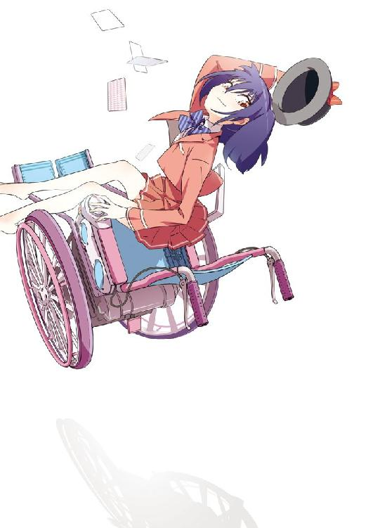
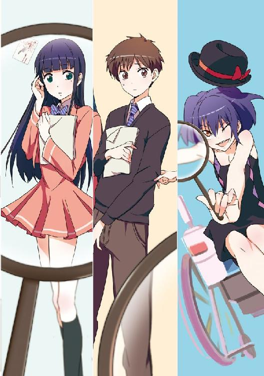
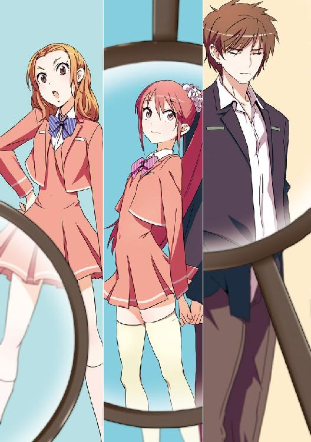
月見月理解の
探偵殺人
明月千里
本書に掲載されているコンテンツの著作権等の知的財産権およびその他すべての権利は、ソフトバンク クリエイティブ株式会社または正当な権利を有する第三者に帰属します。
本書の内容を権利者の許諾なく複製・複写・翻案・放送・出版・データ配信（送信可能化を含む）などすることはできません。
カバー・口絵 本文イラスト
mebae
目次
登場人物
月見月理解..............................月見月家の探偵
都築初................................................高校生
都築遥香.................................高校生、初の妹
都築一.......................................初、遥香の父
都築みなで.................................初、遥香の母
宮越明里..............................高校生、初の友人
村上達也............高校生、初の友人、遥香の恋人
木崎キリナ...........................高校生、初の友人
月島.................................高校生、木崎の友人
立脇.................................高校生、木崎の友人
九月七日午後九時四十五分ごろ、朝月市高見町の第二朝月坂ビルの駐車場で、会社員の都築一さんが倒れているのを住人の家族が発見し、一一〇番通報した。朝月署員が駆けつけたが、都築さんは全身を強く打っており既に死亡。付近のマンションに住んでいた家族の証言から、本人であることが判明した。
ビル十二階の非常階段の手すりに、人が乗り越えたような跡があったことから、朝月署員は飛び降り自殺の可能性が高いとみて、関係者から事情を聴いている。
遺書はなかったが、都築さんは借金関係のトラブルでノイローゼになり、精神科病院に入院していたという。
明徴新聞
『君たちは、名も無き孤島に漂着し、ツタに覆われた洋館で救助を待つ行きずりの旅人たちだ。
館の中には服も薪も食料もある。しかし、生活感の残るわりに、人気だけがなかった。
館の地下室に死体と共に置いてあった、《狂気の殺人包丁》、この、人の本能を呼び覚ます魔具により、間もなく血の惨劇が幕を開けることを、君たちは知るよしもない。
殺人鬼は狂気を抑えるために人を殺し、人は生き残るために殺人鬼を殺さねばならない。
真実は、殺した犯人だけが知っている。他の人間に真実を認識する術はない。
そして、それを殊更に追う必要はない。
真実に価値はない。
信用を勝ち得る欺瞞であればよい。
他人こそが悪で、自らが正義なのだと。
世界の本質が、きっとそうであるように』
《探偵殺人ゲーム・プロローグ》

こいつは人間ではない。
彼女を一目見て、僕はそう思った。
二年生への進級を無事終えて、早三週間が経過した春うららかな四月の朝。穏やかな陽光の差し込む教室のホームルームは、異様な空気を孕んだまま凍りついていた。
「えー。新学期も始まってそこそこだが、新しいクラスメイトを紹介しよう。難病で休学していたが、今日から二年ぶりに復学することになった、君筒木衣梨花だ」
コホンと咳払いをひとつして、担任教師の川辺先生はぎこちなく教卓の隣を見る。
視線の先は、両方の肘掛けに奇妙な細工をあしらった車椅子の上。紹介された件の少女は、特に何の反応も見せず、ただ、教室に入ってきた時と全く変わらぬ表情をクラスメイトに向けている。
「みんなより二歳ほど年上だが、その......仲良くやって欲しい」
怪我と病気による留年、そして復学。
珍しいことは珍しいが、事情を考えれば取り立てて異常な出来事じゃない。
ゼロかイチかと問われれば、切り上げでギリギリ都会に属するであろうこの学校においても、復学した生徒を差別視するような風潮はない。
学校や担任、僕を含めた全てのクラスメイトに、何も問題はない。
問題はその少女にあった。
「じゃ、じゃあ君筒木。自己紹介でも」
川辺先生の顔が微妙にひきつって見えるのは、決して僕の気のせいではないはずだ。
対する君筒木衣梨花と呼ばれた少女は、近未来的なフォルムの車椅子に座ったまま、ゆっくりと僕たちに向けて、その笑みを見せた。
いや、『笑みを見せた』というのはちょっと語弊がある、何故なら彼女は既に、教室に入ってきたときからずっと、ひたすら笑みのままなのだ。
しかしその笑みは何か違った。少なくとも、これから一年ないしは二年、青春時代を共に謳歌するであろう仲間に対して向ける笑みとは、明らかに一線を画する。
少なくとも、微笑んでいるのではない。苦笑しているわけでもない。復学して年下の生徒たちとうまくやっていけるか不安だな、というようなぎこちない笑みでもない。
端的に言うならば、不敵。
魔王のような絶対的な存在が、愚かな人間を見下すときにするような顔そのものだった。
少女は唇の端をつり上げたまま、静かに声を上げた。
「俺様は君筒木衣梨花と言うらしいが、別にこの名を覚える必要はない」
綺麗なソプラノが聞こえた。が、声質の前に言葉の内容が、全ての美点をさらっていた。
ざわ、と静まりかえった教室に小石が投じられ、小さな波紋が広がってゆく。
一目見て、既に常人とは異なる風采。制服から覗く肌は、雪の純白。僕たちより二歳ほど年上らしいが、むしろ一、二ほど年下ではないかという幼い顔立ち。路傍の草を綺麗にまとめた感じの、濃紺のショートカット。血塗られた赤い瞳は、宝石の威光を帯びていた。
文句なしの美少女だと僕じゃなくても思うだろうが、三白眼に近い目つきの悪さと、老いた魔女のような毒々しい笑みが、全ての長所を打ち消して余りある。
そして、その笑みがいつまでも変わらない。
中学生の頃、生徒の間で《菩薩》と呼ばれていた定年間近の教頭先生がいたことを思い出す。
顔にまんべんなく笑い皺が刻まれていて、怒っていても泣いていても笑っているように見えるという大変面白い先生だったが、この少女は、それを上回る。
まるで、この子のは──こいつのは、仮面だ。
その仮面の笑みを全く崩さぬまま、彼女は更に恐ろしいことを告げた。
「何故なら、俺様はお前らのような能なしどもと仲良くする気など、これっぽっちもねえからだ。以上」
言葉を切った直後、再び教室が、かすかにざわめいた。
「えっ......？」
とか、
「は......？」
とか、そんな言葉にならない反応だけが聞こえる。僕も同様の気持ちだった。
「............」
なんだこれは？ これは、あり得ない。
頭のどこかが、理解を拒否している。
何を言っているんだ、この子は？
肝心の君筒木衣梨花は、僕の──いや、教室全体の混乱にも動じず、電動車椅子を操って、教室の最後尾、僕の方へと向かってくる。
車椅子の車幅では、教室に並べられた机の間を縫うには少々狭いが、衣梨花は巧みな操作で、まるで最初から引かれたラインをなぞるように、ゆっくりとスムーズに近づいてくる。
そのせいもあるだろうが、まるで教室の時が止まったように、車椅子の彼女を助けようとする人間は、誰もいない。
教室の前斜め隅にふと目が行く。僕の友人たる長髪の少女、クラス副委員長の宮越明里さんまでもが、その小さな口を半開きにしてぽかんと固まっていた。
僕のちっぽけな人生経験から判断するに、学校の委員長だとか副委員長だとかいう役職は、基本的には多数決の投票箱代わりくらいにしか役に立たない。所謂お飾りであることが多いのだが、彼女は違う。
クラスのためにやるべきことを、無責任な誰かから「おい、委員長って誰だっけ？ こういうときが出番だろ？」と、言われる前に率先して動くことのできる貴重な人だ。
夏場冬場にエアコンが効きすぎていれば、いの一番に窓を開けるように申し出て、具合が悪くなった生徒が手を上げるより早く声をかけ、優しく保健室まで引っ張っていける。
そんなまとめ役の鑑である彼女ですら石化するほどの由々しき事態が、今、起きていた。
「なんなの、あの子......？」
「病気って......そっちの、ってことかよ？」
衣梨花の強烈な自己紹介にみんながついていっていない。冗談なのか、本気なのか、それとも彼女自身に何か異常でもあるのか、手の出しどころが分からなくて戸惑っている。
乾いた空気が、喉の奥にへばりついたように息苦しい。
「は、ははは。どうやら少し緊張してるみたいだが、仲良くしてやってくれ」
苦し紛れの笑顔を残して、川辺先生は次の授業があると言い残し、早々に教室から逃亡した。
「............」
体のいい職務放棄、正直、十分なフォローとは言い難いが、あまり先生を責める気にもなれない。
仮に僕が教師だとしても、こんな訳の分からない状況はごめんだから。
ああ、それにしてもなんてことだ。都合の悪いことに僕の隣の席が空いている。いや、こんなものは、昨日まで無かったはずだ。いきなり椅子のない席が置いてあって、何でかと気になってはいたんだけど......。
これはもしかしなくても、僕の隣に来るのだろうか？
まずい、どうしよう、頭が痛い、最後尾の席ということで喜んでいたのに、こういう落とし穴があったとは、ああ席替えの時期はまだ遠いな、くそう。
実にとんでもないのが来てしまったものだ。クラス委員長として、これほど扱いに困る生き物が──。
「れーくん」
「え？」
突然の声に我に返ると、衣梨花の笑顔が目の前にあった。
れーくん。そんな名前に覚えはない。一体、誰のことだ？
「久しぶりだな。会いたかったぞ、れーくん」
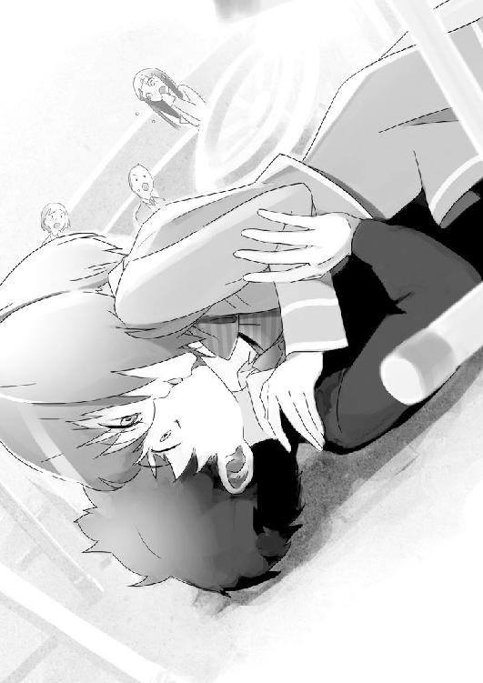
次の瞬間、衣梨花が車椅子ごと、どん、と体当たりするように抱きついてくる。
「うわっ！」
バランスが崩れて、椅子ごと体が後ろに傾き、倒れる──がつんと、まずは床に後頭部が当たった痛み。のしかかってくる衣梨花の重み、針金のように軽くて細い。でも、暖かい女の子らしい柔らかな感触。高そうな香水の甘い匂いが、嫌みにならないくらいほのかに香る。
数秒遅れて、「うわ」とか、「きゃあ」とかの、クラスメイトたちの驚きの声が聞こえる。
「ちょ、ちょっと、いきなり......」
何するんだよ！ という僕の叫びは外に漏れなかった。
「ん......」
耳元で、クラスメイトたちの叫びが、更に一オクターブ高い音で聞こえてきた。
それが唇を彼女の薄い唇で塞がれているからだという事実を理解するまでに、僕は既に口内に温かいものを入れられ、更なる混乱の渦中に叩き込まれていた。
＊
通常、転校生などの類がクラスにやってきた次の時間は、質問攻めに合うという伝統的なお約束がある。とまあ、それは確かにあながち間違いでもないのだが、それはほとんど漫画やアニメの話で、実際は凡人には恐る恐る腫れ物に触れるように手が伸ばされ、美形や天才型には性格の明暗でその勢いが逆になる。が、こと今回の君筒木衣梨花という少女に関しては、バリアか斥力でも発生させているかのようだった。
「えー、であるからして、だな」
一時限目の数学教師の森田先生は、やはり前触れなく現れた教室の異物が気になるのか、ちらり、ちらりと、黒板にバックミラーでもつけてあげたくなるほどに振り返っている。授業中の無駄話はない方が理想とはいえ、実際に無音の教室は息苦しい。しかし、それを気の毒がっている余裕も、今の僕にはなかった。
学校一のほほんとした男として名高い僕も、さすがに少々混乱している。
「ふふふふふ......」
いきなりディープキスをしてきやがった衣梨花という少女は、やはり張り付けたような笑みを一切崩すことなく、何故か僕の机の上に、組んだ両腕と顎を乗せてくる。
僕と教室はさっきのキスで完全に固まってるというのに、衣梨花だけは何事もなかったかのように、平然としていた。
「ほらほら教科書見せてくれよ、れーくん。俺様の面倒をみるのはクラス委員長の仕事だぜ？」
それにしても、ご丁寧に先生が僕の役職まで教えてくれてしまっていたのが痛い。隣の席というポジションも相まって、彼女をスルーすることができないのだ。
「何で持ってきてないんだよ！ 復学の予定は分かってたんでしょ？」
少々苛立ちながら──正確には苛立ったふうを装いながら（いくら可愛いとはいえ、見知らぬ少女と授業中の教室内でいちゃつく勇気は僕にはない）しぶしぶ教科書を見せてやる。
「どれどれ......」
すると衣梨花は僕の手から教科書を奪い取り、ばばばばっ！ と、まるでパラパラ漫画でも読むかのような猛烈な勢いで、ページをめくり始める。
「なっ......！」
これは所謂、速読というものではなかろうか。ぱっと見た感じ、ただ適当にめくっているだけのようにも見えるけど、本当に読んでいるのか？ 銀行員が札束を数えるのとは、訳が違うはず──。
などと思考しているうちに、十数秒程度で教科書を閉じ、衣梨花はもう飽きたというように教科書からそっぽを向いた。
「はあ、つっまんねー内容だな。この学校のレベルもたかが知れてんなあ、れーくん」
ざわっと、僕と衣梨花の周囲から、聞き取れないほどの、しかし、何を言いたいのかは十二分に見当がつく小声が、耳に流れ込んでくる。
当たり前だが、ここも超一流ではないにしろ進学校であるのだから、皆それなりに苦労はしている。
ああ、頭が痛い。本当に静かにしてほしい。ついでに僕を巻き込まないで欲しい。
「あのさ。君筒木さん」
これ以上の暴言を止めるべく、精一杯の勇気を出して、まるで異星人とでもやり合うような気合を込めて、コンタクトを試みる。
「思うのは勝手だけどさ。口に出さないでくれるかな。それも僕の隣で。ついでに、誰のことだよ『れーくん』って、初対面なんだから、変な名前で呼ばないでくれる？」
彼女と話したかったわけじゃなく、むしろクラスメイトに、彼女とは知人ではないとアピールするためのセリフ。僕にしてはわざと大きめな声で言う、が。
「そんな水臭いこと言うなよ、俺様と君の仲じゃねーか」
逆効果だった......。
「一体何なのよ、あれ」
「さあ？ 都築君の知り合いみたいだけど」
「なんか、らしくないわね」
森田先生がチョークを叩く音の合間に、そんな声が聞こえてくる。
ああ、悪い方に誤解が進んでゆく......。
そもそも何でこの子、僕に付きまとってくるんだよ。こちとら、見覚えも心当たりもないってのにさ......。
断じて知り合いではない。授業中だが声を荒らげて、そう叫びたい。
「ん？ どうしたんだれーくん、暗い顔して。またちゅーでもしてやろうか？」
「全部君が原因だよっ！」
クラスがざわめき、先生が注意もせずため息をつく。
恐るべき事に、こんな感じのやりとりが、四時限目まで続いた。
衣梨花は体の不自由を理由に何かと僕につきまとい、完全に授業が終わるまで僕を放してくれなかった。
＊
「あっはっはっは。そりゃあ災難だったな。で、結局あの子とはどういう関係なんだよ？」
昼休みに男子トイレで用を足していると、隣に友人の村上達也がやってきた。
男同士の連れションが、これほどほっとする機会がくるとは思わなかった。
さんざんまとわりつかれ、四時限目終了のチャイムの後、僕は男だけの場所に行くことで、ようやく衣梨花から解放された。
「トイレの中くらい、その話題から離れさせてくれよ。また頭痛がしてきた」
「ははははは！」
僕の気も知らずに、達也は豪快に笑ってみせる。
百八十という背丈、下品にならない程度に着崩した制服、軽そうな顔つき、毎月の頭髪検査で合否判定に時間がかかる薄みがかった茶髪は、百メートル離れていても一発で分かるチーマーさんだが、実際は見かけに反して割と素行が良く、気さくな友人のひとりである。
一年の時に同じクラスで仲良くなり、今ではクラスメイトでこそないが、体育の合同授業や休み時間の、いい話し相手だ。
学内でも知るものは少ないが、見かけによらず実はいいところのお坊ちゃんでもあり、一学年下にいる僕の妹、都築遥香とは半年前から恋人の関係でもある。
「何言ってんだよ。初日から見せつけてくれやがったんだろ？ ありがちだが幼馴染みとの感動の再会ってところか？」
人ごとだけど、人ごとのように言ってくれる。休み時間中に達也が僕と衣梨花を見たときは、近づいてこようともしなかったくせに。
といっても、逆の立場になった場合のことを考えると、それを責める気にもなれないけど。
「百歩譲ってあれが仮に幼馴染みだとしてもさ。感動の再会というにはちょっと無理があるよ」
僕の返事に、達也は意外そうに肩をすくめた。
「何だ。マジに知らなかったのかよ？ もう俺んとこのクラスまで噂になってんぞ」
「本当に？」
「お前のとこの副委員長様もご立腹だっただろ？ 『不純異性交遊は学外でしなさいよねっ！』ってな」
既に学年中には伝わってしまったか。
この礼新高校は、進学校であるが故に、成績の上下と恋愛沙汰くらいしか話のネタがない学舎だ。ある意味で想定の範囲内だけど、まずいことになったもんだ。
「宮越さんには、放課後にでも僕から言っておくよ......」
「あっはっは。まあ副委員長はそれでいいだろうがよ。俺のクラスのお妃様はどうする気だ？
今日はサボりみたいだが、明日からはあっちの方が大変だぜえ？」
「うわあもう頭痛くなってきたー！」
お妃。それは達也のクラスに女帝として君臨する、迷惑度指数百パーセントの女の子だ。唯我独尊かつ、他人を顧みない性格で、この学校の隠れた問題児でもある。何かと僕を気に入って絡んでくるため、同じ爆弾娘の衣梨花とぶつかったら、原発事故クラスの大惨事が起きるであろうことは想像に難くない。
それを考えると、今から憂鬱な気持ちになる。
なるべく二人を会わせないように気をつけておかなければ......。
「はぁ......」
僕は用を足し終えて、洗面台で手を洗う。
弁当は持参してきたから気が引けるけど、このまま学食かどこかで食べていきたい。正直、あの嫌な空気の中に戻りたくない。
「しかし、本当に覚えが無いのか？ 『れーくん』なんて、親しげに呼ばれてるらしいじゃないか？」
同じく隣で手を洗い始めた達也の問いに、僕はため息を返す。
「あのさ達也。よく考えてみてくれよ？ 僕の名前に『れ』なんて文字は、ひとつも入ってないだろ？ 理由はさっぱり分かんないけどさ、あの子の勘違いだよ、絶対」
む、と達也はあご下に左手を当て、右手の指を折り始める。
「都築初。んー......まあ確かにそうだが、ネットのアバターとか、ホームページのペンネームみたいなもんでもないのか？」
「あいにくそっちの方でも、『れー』なんて名前に心当たりは──え？」
待てよ？ と頭のどこかで警鐘が鳴る。
続き初。アバター。ペンネーム。れー......。
もしかして......。
自分から否定したことだけど、達也のセリフで、逆に分からなくなった。
今まで忘れていたが、たったひとつだけ心当たりがあった。まさかとは思う。九割九分九厘あり得ない出来事だが。
「まさか......、まさかだよなぁ」
ハンカチで手を拭きながらトイレから出る。
「れーくん」
「うわ！」
きゅるきゅると静かな駆動音を響かせて、男子トイレの前に衣梨花が来た。
かなり扱いに慣れているらしく、やはり車椅子の動きに澱みはない。
「うおっ！」
と、僕から続いてトイレから出てきた達也が、彼女を見て驚く。
だが、衣梨花はそれには見向きもせず、にっこりと笑うと、僕の腰の背をぽんぽんと叩いた。
「れーくん。ここは凡人がゴミゴミしててうぜえから、屋上でも行こうぜ。同じ空気を吸ってると思うと、イライラしてくる」
更にグレードアップしつつある彼女の暴言はとりあえず無視しておいて、相変わらずのその笑みと、色素の薄い赤みがかった瞳の奥に、何か意志を感じる。
「............」
『目は口ほどに物を言う』という言葉が、これほどしっくりくるとは思わなかった。
髪を切った女の子が、まるでそれを気づいて欲しそうにしているような、そんなからかいの目だった。
この口調、横柄な態度。どこかで、確かにどこかで。
あ......。
妄想が予感に変わった。そして、予想が確信へと、急速に動きつつある。
「おい、初......？」
「ごめん達也。僕はこの子とちょっと話があるから」
「そうそう、部外者はお呼びじゃねえんだよ。とっとと失せろ」
「いいから君はちょっと黙ってて」
啞然とする達也に、目配せだけで別れを告げ、僕は衣梨花の車椅子のハンドルを握る。そして、ゆっくりと屋上に向かって押し始めた。
屋上は鉄柵に囲まれているが、基本的に立ち入り禁止で、先生に見つかると怒られる。おまけに僕はちょっと高所恐怖症気味であり、普段ならあまり立ち寄りたくないところだが、今は人目を避けられるところが、そこくらいしか思いつかない。
まあ、少しなら問題ないか。
「そういえば、君の車椅子って──まさか階段までは上れないよね？」
「お姫様抱っこでもしてくれよ王子様、パンツくらいなら触らせてやるからさ」
僕は呆れつつ、言われたとおりの形で、衣梨花を抱きかかえて屋上へ向かう。
もちろん彼女の下着には一切触れず、いったん屋上の床に下ろしてから、車椅子を屋上に運んで、もう一度乗せた。
それにしても、軽い。
もちろん羽とはいかないまでも、衣梨花は見た目通り子供のような軽さだった。決して体育会系ではない僕でも、そう大変ではないほどに。
「れーくん、なかなか扱いが上手じゃないか。いい介護士になれるぜ」
「ありがと。でも、君の介護はしたくないとここで既に思ってしまう辺り、残念ながら僕には適性がないみたいだ」
ため息をついて、僕は屋上の手すりからグラウンドを見下ろした。
昼休みが始まったばかりのそこには、全くと言っていいほど人気がない。ここなら、誰にも気兼ねすることなく、話し合える。
「で、僕をトイレまで追ってきたようだけど、何か用なの？」
向き直って聞くと、衣梨花は相変わらずの笑みで答えた。
「当ててみろよ」
「分かんない」
「当てられないと、ちゅーするぜ？」
さっきの教室でのことを思い出して、眩暈を起こしそうになる。
「それはもうやめて欲しい......」
「本当か？」
「知らない人に触れられるのって、あんまり好きじゃないんだよ」
「なあ、れーくん。君は本当に分かんねーのか？」
衣梨花が僕の顔を覗き込む。
「せっかく人目が無くなったんだ、とぼけるのはやめにしようぜ。君はもう分かってるはずだ、この俺様が何者かってことくらいな。俺様を殺したれーくんが、理解できないはずがねえ」
それが、彼女の答えだった。
俺様、れーくん、殺す。
まさかとは思う。本当に信じがたいことだが、唯一心当たりがあるとすれば──。
「......Ｒ？」
僕の答えに、彼女は、更に笑みを深くする。
「ふふっ、やっと思い出してくれたな......正解だ」
絶句した。
確信が現実となって、僕の身に降りかかろうとしていた。
Ｒ。
かつて世界的に有名なネット上の推理ゲーム《探偵殺人ゲーム》で異常な大勝をして名を馳せた、正体不明のハンドルネーム。
しかし、僕は、現実の彼女とは何の面識も──。
「だが、れーくん、それは一度きりだぜ。そんなつまらん名前でこの俺様を呼ぶのは、一度きりで充分だ」
内心の動揺を隠し切れていないであろう僕に、衣梨花は続ける。
「月見月理解。これから俺様のことはそう呼べ、０くん」
「え......？」
現実を受け入れかけた僕の脳内に、更なる霧が立ち込める。
「月見月って、ひょっとして、あの？」
戦前からその名を残す、日本最大規模の資産を持つ大財閥の家名。
信じ難い話だが、否定しきる術も今の僕にはない。ただ、その推理ゲームで、僕が登録し、一度だけ彼女に土をつけた時のハンドルネームは、確かに《０》だった。
ゼロとは、『初めに続く』という僕の名前から捻り出した、仮想世界での僕の名前だ。
しかし、月見月理解とは......。
「......それって、本名？」
こんな特殊な名字は、思い当たる節はひとつしかなかったが、にわかのことに耳を疑った。
「なわけねーだろ。んなイカれた名前がこの世にあってたまるか。まあ仕事上のコードネームみたいなもんだ。ただまあ、俺様が月見月の一族に与しているのは、本当だがな」
「どうして、ここに？」
そう尋ねると、今までと全く同じ顔と口調で、彼女は告げた。
「君を殺すためだ」
「............」
「復讐だよ、あのゲームで君に殺され、負けたからな。ムカついたから、今度こそ君を完膚無きまでに叩きのめしてやらないと、気が済まねえ」
僕は口の中にたまった唾を、知らず知らずのうちに、ごくりと飲み干していた。
一体何の冗談だ。
殺す？ 僕に雪辱をはらしたいなら、ゲームで申し込めばいいだけのことだ。
本当なら、こうしてわざわざ会う必要はない。
殺すって、まさか。
「それって、どういう意味──」
「くすっ、あははははは！ あっははははは！」
僕の顔を見て、衣梨花──いや、理解が噴き出した。
「何マジになってんだよ、れーくん。ああもう君はほんとに可愛いなぁ。ジョークに決まってんだろうがバーカ！」
僕の腰をバシバシと叩いて、理解は無邪気に笑う。
「............」
分からない。どう返していいのか、僕には分からない。
何なんだ？ こいつは。
「ん？ どうしたれーくん？ 君はまさか俺様の通り名を忘れたのか？」
そうだ。ゲームでのＲの名前は、もうちょっと長かった。
「探偵......」
探偵Ｒ。
それが、彼女の正式なハンドルネームだった。
「そうだよ、覚えてるじゃねえか。で、探偵がすることといえばなんだ？」
「............」
ネット参加型の推理ゲームであえて《探偵》と名乗る絶対の自信。ファンタジーか何かのゲームでいえば、自らを《英雄》とか、《勇者》と名乗るほどの暴挙。
しかし、それはあくまでもゲーム上の話で、本当の探偵なんてもののはずが。
探偵、ネットゲーム、得体の知れない少女。どこまで冗談なのか、本気なのか分からない。
それでも易々とは聞き流せないほどの有無を言わせぬ雰囲気に、僕は押されてしまう。
しばらく考えて、僕は言った。
「浮気調査か猫探しかな。でも、僕にはそもそも彼女もペットもいな──」
「この学校に、人殺しがいる」
「え......？」
僕の間抜けな解答をさらりとかき消して、理解はにやりと笑った。
「そいつの正体を暴いてぶち殺すために、俺様はここに来たのさ」
＊
『孤島に流れ着いた旅人たちには、知り合いは誰もいない。洋館の中で身体を休めていると、まずは旅人のひとりが何者かによって殺されているのが発見された。緊迫した雰囲気の中、君たちは洋館に残されていた道具をかき集めて、自衛の設備と道具を分け合うことにする。だが、疑わしい人間を殺す刃を持たぬものと、自分の部屋を守る鎖の錠前を持たぬものは、殺人鬼の脅威から身を守る術は無い。そこで、全員の納得する方法で、犯人と疑わしき者を多数決で地下室に閉じこめ、救助を待とうとする。だが......その判断は、果たして正しいのだろうか。
もし、犯人を見つけようとする人間、または探偵。それ自体が、殺人鬼であるとしたら』
《探偵殺人ゲーム・エピソード》
＊
二年前の中学時代。
僕は同級生のひとりから、唐突にそのゲームに誘われた。
それは所謂ネット上のシステムを使用したチャット参加型推理ゲームで、通称《探偵殺人ゲーム》というものだった。無人島の洋館に閉じ込められ、呪いの包丁を手にしてしまった殺人鬼が事件を起こしていくというベタベタなストーリーだ。ルールの基本の流れは缶蹴りのようなものだ。鬼に捕まる前に──殺される前に缶を蹴る。
犯人を見つけ、その鬼を殺すという形で。
ただ、これは犯人を殺したら終わりではない。殺した人間が、鬼に成り代わるのだ。
そして、生存者が最後の一人になるまで、負の連鎖は続いてゆく。
僕はそのとき、ネットゲームというものには疎かったので、そのゲームの存在は知らなかったのだが、何でも、アメリカを発祥の地とした昔のカードゲームであり、チャット参加型ネットゲームとして無料で楽しめるようになってから、じわじわと口コミで広がって、コアなファンの心を鷲づかみにしたとのことだった。
「ふうん。それで、その探偵......なんたらゲームって、どんなものだったのかしら？」
昼休みを終えてから、二時限分の授業を挟み、放課後。
クラス副委員長の宮越さんと委員長である僕は、ようやくにして水入らずの機会を得た。
宮越さんも、教室のあの異様な空気の中では、僕と理解に声をかけることすら至難だったはずだ。
各階の廊下の突き当たりに、学習準備室という部屋がある。小さな机とパイプ椅子がそれぞれふた組ずつ、四方を天井まで届く棚に囲まれた六畳ほどの密室だ。
準備室には、普段の授業で使われているプリントや資料の予備が保管されている。復学した理解のために、授業のプリント類を集めるというクラス委員としての職務を全うしつつ、僕たちは教室でできなかった世間話を行っていた。
もちろん、メインの話題は理解についてだ。
宮越さんが先生に聞いてみたところ、理解の復学は、相当急な話だったらしい。
そう考えると、やはり屋上での理解が言っていたように、月見月の権力を使ってやってきたと考えるのが妥当なのだろうか？
「昔ほどじゃないけど、今でも一部じゃ人気のゲームだよ。まあ《探偵殺人ゲーム》は日本用に変えられたネーミングで、もともとは《セイレムの魔女裁判》っていうアメリカのゲーム。もっとも、運営してるサーバーを選ばないと、レベルが高すぎて初心者お断りだけど」
「へえ、ちょっと面白そうね。あたしにもできるかしら？」
「参加すること自体は誰でもできるよ。フリーゲームだし。でも、宮越さんだと、Ｃランクでも微妙だと思う」
「何よＣランクって」
「Ｓ、Ａ、Ｂ、Ｃの四段階中一番下の初心者用のクラスで、最低レベル。プレイ自体の初心者は、数だけでも十二戦はこなさないとＤランク。サーバーによっては、参加できるランクが制限されてるのもあるよ」
「あなたは何ランク？」
「最後はＳかな。一年くらいやって、最後の一ヶ月だけだけど、その後はやめちゃった」
「ふーん」
首だけを捻って振り返り、背後の僕を睥睨する。常に温厚柔和な宮越さんにしては、露骨に不機嫌そうな表情だった。
「あなたの中のあたしは、その程度の評価だったんだ？」
珍しく、拗ねたように唇を尖らせる。
「そういう訳じゃないけど、たぶん向き不向きの問題だよ。宮越さんって頭はいいけど、人もいいからさ。たぶんあのゲームでは常勝は無理だと思う。噓をついて騙すことが前提のゲームだからね」
《探偵殺人ゲーム》は、建前上推理ゲームと謳っているが、その本質は推理ではない。
ゲームスタート時に配布されるアイテムの使用で、ある程度の犯人像は絞れる。問題は、そうして知った情報が正しいと証明する手段が、一切ないことだ。
しかし、犯人を殺すか、あるいは他の誰かに殺させなければ、いずれは殺人鬼に自分が殺されてしまう。それを防ぐため、自分の包丁で犯人を殺害するか、多数決を取り、犯人を閉じこめ無防備にする《地下室》に送らねばならない。
つまり、自分が殺人鬼なら他のプレイヤーを犯人だと、そうでないなら、自分の推理を納得させる話術こそが重要になってくる。例え噓や誇張でも、構わないのだ。
そうして自分以外の犯人像を作り上げ、他者を出し抜き、最後まで生き残ることが通常のゲームの目的となる。
が、もちろんルールを知らない宮越さんはそこまでは分からず、「はいはいありがとうございます」と、プリントの底をとんとんと叩いて平らにならし、僕の対面の椅子に腰かける。
「でも、その理屈だとあなたも勝ち目ないと思うけど？ 通称、《学校一のお人よし》さん」
「僕はこう見えて、結構計算高い男なんだよ」
「本当？ だとしたら確かに、相当のツワモノだわ」
「そうかな？」
と、聞くと、宮越さんは資料の束をばさりと机に積んで、ちょうど対面に座る僕の顔をまじまじと見つめてきた。
「うん。だってあなたのやることって、全然イヤミに見えないんだもの。わざとらしさがないっていうか、自然っていうか。たぶん、根が本当にいい人なんだと思う」
「............」
宮越さんの微笑に、僕の胸がちくりと痛んだ。
「学食の煮魚定食あるでしょ、主に青魚メインの」
唐突に話題を変えた。と見せかけて、たぶん宮越さんは何かを例えるつもりだ。
「あの生姜多めのヤツね。僕の大好物。宮越さんも好きなの？」
「あれね。実はあたし、嫌いなのよ」
「......残念だけど、僕と君は分かり合えないようだ」
「話は最後まで聞きなさいってば」
と、資料に目を落とした僕の顔を両手で挟んで、水平まで持ち上げる。腰まで伸びた黒髪と顔立ちはとても整っていて、近くで見ても、揺るがない凛とした美しさがある。
理解も可愛いには可愛いのだけど、その美しさはパーツ単位であって、何か落ち着かない。
それに引き替え宮越さんは、全体の雰囲気に優雅さを持っている。
柔和で生真面目な性格で、去年の三学期に委員長と副委員長という関係になってから、心を許せる数少ない友人になるまで、そう時間はかからなかった。
「青魚は好きよ。でも、人も魚の生臭みと同じで、嫌な部分とか、悪い部分が出てくる。それを消すために薬味という演技をいれるんだけど。そうすると一見完璧になる」
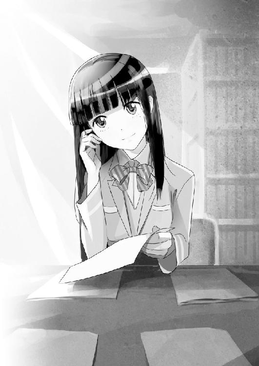
「おいしいじゃん。煮魚についてる生姜」
「だけどね」
僕の嗜好についてはスルーされる。いや、本当においしいんだけどな。
「いやいややる善行って、どうしても鼻につくのよ。ていうか、あたしがそうなの。青魚は生臭さがあって、薬味でそれを消すことができるけど、そうすると今度は薬味が気になるの。臭みを消すはずの薬味が、青魚の臭みを吸って嫌な味になるの。でも、あなたにはそれがない。薬味無しでもいける。白身魚みたいだわ」
白身魚ねえ。白身魚って、君......。
「なんだか、例えることで逆に分かりにくくなった気がするけど......」
僕が首を傾げると、宮越さんも自覚があったのか、「ま、いいわ」と話を打ち切り、再び資料を探し始める。
「で、話を戻すけど。あなたと彼女は、そのゲームで探偵役と犯人役をこなした仲ってこと？」
「まあね。でも、彼女はずっとぶっちぎりで高レベルのランクにいたから、僕とはたった二回しか戦わなかったけどね」
「ふうん。で、あの子ってその筋じゃ有名みたいだけど、そんなにすごいの？」
「すごいと言えば間違いなくね。彼女は二年ちょっとの間に三百戦以上もして、たったの一敗しかしなかった。通常の《探偵殺人ゲーム》では、並ぶどころか足下に及ぶ者もいない勝率だよ」
「でも、所詮ゲームはゲームでしょ？ 偶然勝ちが続いたってこともあるんじゃないの？」
「それはないね。えーっと......」
僕はうまい例えが思いつかなくて、しばし考える。
「宮越さん。ゲームの種類について、将棋と麻雀の違いは分かる？」
「さあ？ ていうか、なによ麻雀って。学生の身で賭け事は感心しないわね」
「じゃ、オセロとトランプでいいよ。トランプの内容はポーカーでも七並べでもなんでもさ。違いは分かる？」
「んーと」
と、宮越さんはプリントをめくりながら二分ほど考えて。
「将棋は二人しかできないけど、トランプは三人以上でもできる？」
「うーん惜しい。いや、やっぱりあんまり惜しくないや......。正解はランダム要素があるかどうかだよ」
「ランダム要素ねえ......」
「要するに正着手があったりする完全情報ゲームじゃないこと」
「......どういう意味よ？」
うーむ、逆に分かりにくい言い方をしてしまった。こういうとき、自分がマニアであることを自覚してしまう。
「例えばさ、将棋の名人と下手っぴな人が百戦して、名人が百勝することは十分あり得るけど。いくら腕のいい人でもトランプで百勝するのは無理があるよね？ 多少なりとはいえ、運が絡むんだから、ルールを全く知らない人相手ならともかくさ」
「ええ......、まあそうよね、大抵は」
「ましてや行動を読みやすい一対一じゃない、不特定多数の十数人が同時に参加するゲームなんだ。いくら強くても、何戦もすればいくつかの敗北は免れない」
「なるほど、よく分かりましたよ先生、その子の秘密が」
「ん、何？」
抜き終わった資料を棚に戻すと、宮越さんは急に得意げな顔で、人差し指を立てた。
「トランプの必勝法、実はカードの背には、模様に紛れて印がついてたのでした」
なるほど。と、僕は一度頷いてみせてから、ゆっくりとかぶりを振る。
「イカサマね、もちろんその説も幾度となく出たよ。サーバーにハッキングしてゲームシステムを改竄しているだとか、ゲームの製作者、あるいは知人で、プレイヤーには明かされてないデータを閲覧してるだとかね、他にも、パソコンを複数使って同時プレイをしているだとか、実はプレイヤーにサクラを忍ばせて連携しているだとかさ」
「ん？ てことは違ったの？」
「うん、大いに違った。彼女の不敗神話を暴こうといきりたったハッカーやゲーム運営者たちが、何十通りもの方法で探りを入れてみたけど、ついに彼女の不正は判明しなかった。そして皮肉にも、それがいっそう彼女の強さと神秘性に拍車をかけたんだ」
そう、それは誰より、僕が知っている。
《探偵殺人ゲーム》の協力プレイを僕に持ちかけてきた友人と共に、イカサマプレイをしかけ、それを見破られてズタボロに敗北したのは、他でもないこの僕なのだから。
その一件以来、その友人はゲームから身を引いたが、僕は逆にそのゲームの魅力に取り憑かれ、ずぶずぶとはまり始めた。
殺すか殺されるか。疑心暗鬼の海。虚言と謀略の世界に。
やがて、僕は自分の名前から連想したハンドルネーム《０》として、プレイし始め。
そして......。
ふうん。と、自説が外れて面白くないのか、宮越さんはちょっと眉をひそめて続ける。
「でも、その伝説の彼女も、一敗したって言ったわよね？」
「うん」
「それって、ひょっとして、都築君のせいかしら？」
宮越さんの目が、僕の瞳を真っ直ぐに見据えてくる。
どうしよう。言っていいものか、ちょっぴり躊躇する。
いいか。
「まあ、ね......宝くじ特賞ばりのまぐれ当たりでね。あ、この話をネットとかに公開しないでね、宮越さんはしないだろうし、しても誰も信じないと思うけど叩かれるから、一応」
「じゃあ、秘密にしておくけど信じるわ」
「うん、ありがとう」
僕も資料、理解の授業に必要なプリントは揃え終わった。
去年の授業で配布された順番に、宮越さんは丁寧に日付と用途を更に書き込んでいく。いつも思うが、かなり几帳面だ。
「それで、その子はどうなったの？」
「それ以来、彼女はネット上から姿を消した。もっとも今日の今日まで、僕と彼女はそこだけでの関係だったから。顔も性別も、どんな子かってことも分からなかったけど」
「なるほど、──で、実際会ってみたら、あんな毒舌ハイテンション娘だったってこと？」
「いや、ゲーム中でも彼女はあんな感じだった。顔の見えないネット上で大きな態度を取る例は珍しくないけど、彼女の場合は特別だったからね。一部では、あえて暴言を吐いて相手を熱くさせる戦術って言われてたけど、それでも三百勝以上もすると、口調や性格なんてもはや些細なレベルだよ」
そう、本当にそんなこと、問題じゃなかった。
何より、いくらゲーム内といえど、挑発的な態度を見せていれば敵も増える。自分の勝利を捨ててでも彼女に土をつけてやりたいと、そう思う数多のプレイヤーの攻撃を、巧みにかいくぐって、連勝を続けていたのだから。
「その彼女のハンドルネームが《探偵Ｒ》だよ。今でもネットで検索すれば、詳細なプレイ記録まで見られるはずだけど」
「いいわよ、あたしはそんなゲーム興味ないし......。で、それだけじゃないんでしょ？」
「ああ、もうひとつ」
月見月。これはもう、あえていうほどでもないくらい分かりきった伝説的大財閥の家名。
あらゆる分野に精通し、幅広いマーケットを支配しているといわれている。
蟻の視点では象を巨大な壁にしか認識できないように、一般人では、その全貌すらつかめないほどの巨大さ。
『国家と同レベル』と称されているのは、あながち都市伝説でもないのかもしれない。
「つまりまとめると、大金持ちの天才お嬢様が、推理もののネットゲームにはまって連戦連勝してたけど、ある日あなたに負けちゃって一目惚れ。そのお金持ち権限をフル活用して、興味本位に会いにきちゃった、って感じなのかしら？」
「......どうかな」
常識的に考えれば、そんなことはまずあり得ない。が、既に事は現実的でない。
宮越さんの仮説が本当なら、そもそも君筒木衣梨花という名前自体偽名ということになるが、どうにも胡散臭い。
彼女を構成するピースのほとんどが灰色のため、勘ぐったり想像したりすることすら無意味であるような気がする。
それは例えるならネッシーやツチノコの生態を想像するようなものだ。
彼女は月見月家の人間なのか、件の《探偵Ｒ》なのか、本当の探偵なのか、それとも全て噓で、ただ僕の噂をどこかでかぎつけただけの変人なのだろうか。
またはあれは本当に《君筒木衣梨花》という少女そのもので、《月見月》や《探偵Ｒ》などの件に関しては、でたらめを口にしているだけの可能性も大いにある。
ちなみに当人は、学生としての名前は、家の名前で目立たないための適当なアナグラムだと言っていたが、確証を得る理由にはならない。
しかし、彼女が僕に近づいてきた理由は、あのゲームの因縁以外に思いつかない。何より、あの独特ともいえる強烈な雰囲気に、呑まれ始めてしまっている自分がいた。
「いいじゃない。どんな理由でも、お金持ちからの告白に損はないわ」
が、宮越さんは信じているのかいないのか、冗談めかした口調でそんなことを言ってきた。
「別にキスされたのは、僕が好きだからとは限らないと思うけど」
「ううん、間違いないわね」
「何で分かるの？」
「女の勘よ」
宮越さんはまとめ終わったプリント類をクリップで綴じて、悪戯めいた笑顔を見せた。
しかしまあ、なんという似合わないセリフだ。
「もう、そんな顔しなくてもいいでしょ！」
後で顔を赤らめるくらいなら、言わなければいいのに。
思わず、苦笑してしまう。
「まあ、どっちにしろ、その感覚は、正直庶民の僕からすると理解できないけど」
「ロマンチックねえ」
「そうかな？」
実は違う。
僕は核心までは話していないし、話せる内容でもない。
昼休みに理解の言ったことは、それを飛び越えるくらい不確かで、普通に捉えるにしては、馬鹿げたことだ。
ひとつ。彼女が本物の探偵でもあること。
ふたつ。殺人犯が学校に潜んでいるらしいこと。
もし彼女の言うことが本当だとすれば、この学校で何が──。
「ん......？」
イィイン。と、廊下から聞こえてきた機械音に、僕は首を傾げる。
直後、ノックのひとつもされずに、ずばんと準備室の扉が全開にされた。
「うわっ！」
「れーくん、いつまでそんな地味子と話してんだよ。さっさと帰ろうぜ。今日は俺様、君の家に泊まるんだからな」
どこから出てきやがったのか、教室で待っていてと言っておいたはずの理解が今、目の前にいた。っていうか、今なんか妙な発言が......。
「地味子......ってあたしのこと？ っていうか泊まるって何の話よ？」
「ちょ、ちょっと！ いきなり何言ってるんだよ！」
ああもう、どこから対応していいのか分からない。
「僕の前で友人を貶めるようなことをそう軽々と言わないでくれ！ しかも君と一緒に帰る義理なんてないし第一泊まるってどういう──！」
「くすくす。お前はお泊まりの意味も知らねーのか？ 副委員長様」
いい加減眩暈がしてきた。
「宮越さん。ごめん。忙しいから先に帰る。プリントよろしくね」
「あ、ちょっ、ちょっと、待ちなさいよ！」
これ以上喋ると、面倒くさいことになる。
僕は理解の車椅子のハンドルを取ると、逃げるように学校を出た。
＊
桜の舞い散る並木道を、僕は理解の車椅子を押して歩き続ける。
放課後の部活動があまりなく、集合住宅地のはずれにある僕の帰路は、人目につかず、話しやすい。
数年前までドがつくほどの田舎だったここ御調崎市では、お国の都市開発計画が進んで、次々と新しい建物が増えている。
妹の遥香と、友人の達也は部活で帰りは遅いので、普段一緒に帰っているのは、宮越さんくらいのものだ。あともう一人、困った人がいるけど、今は考えたくない。
学校から少し離れたところには、つい二ヶ月前に完成したばかりの綺麗なアーケード。近くには年代を感じさせるスーパー。塗りかけの絵のように、古さと新しさが入り混じっている。
「しかし、れーくん。君は実に人気者じゃないか」
車椅子を押す僕の方を振り返りつつ、理解は上目遣いでにやりと笑う。
「なんのことさ？」
「とぼけんなよ。美少女復学生を独り占めにして男たちに恨まれるどころか、逆に俺様の方に女子からの嫉妬の視線が来ていたぞ？ モテモテだな」
「そのお約束を成立させるには、何か前提から間違ってる気がするけど......。それより君筒木さんって、本当にあの《探偵Ｒ》なの？」
「理解と呼べと言ったろ。れーくん」
「理解さ──」
「さん。はつけなくていいぞ。他人行儀だからな」
「......君と僕は完全に他人のはずだけど？」
会話が途切れて、しばらく道路沿いの道を進む。午後六時過ぎの街路は、ほのかに茜色に染まっていた。
「でもさ、君って本当に探偵なの？」
「へえ？ じゃあ逆に聞かせてもらうが、この俺様のどこが探偵でないと？」
理解の笑みの上にあるのは、高級感のある黒の中折れ帽子。学校内では一応遠慮していたらしいが、今の制服には、全然合っていない。
まさか、その無駄にシックな帽子だけで、探偵だと豪語する気ではなかろう。
「れーくん。君はスーツ姿のおっさんか、メガネをかけた天才小学生じゃないと探偵とは認めないクチか？」
常に挑発するような彼女の物言いにも、だんだん慣れてきた。
理解の言い分も当然ある。でも、僕が疑ってるのは外見だけじゃなかった。
「素人意見で悪いけどさ。探偵って、普通はこっそりとするものじゃないの？ いやさ。そりゃ殺人現場とかでどーんと、私は探偵です。探偵の孫です。って言う人も漫画とかアニメとかの中にはいるけどさ。通常はそんなことは警察がやるわけであって。昔で言うと、警察が役人なら、探偵は忍者みたいなものでしょ？ 学校に何かいるなら、なおさら僕なんかに......」
「へえ、君が探偵マニアだとは知らなんだぜ、れーくん。探偵の基本は素性を悟られぬ事と背景に溶け込むこと、情報を引き出す相手に警戒されては意味がない。事務所ならいざ知らず、クライアント以外の人間に、わざわざ堂々と探偵などと明かすことはあり得ない。君の言いたいところは、こんなところか？」
「............」
図星だった。
「れーくん、いいか？ 忍者といっても、俺様はハットリくんみたいなもんなんだよ。あの青坊主だって、ちっとも忍んでねえ代わりに一発逆転の忍術があるだろ。早い話が、俺様も常人ではあり得ない特殊能力を持っているのさ」
「特殊能力......だって？」
なんだか、最初からあんまり信じていなかったけど、更におかしな方向に話が転びそうだ。ていうか、大丈夫だろうかこの子。
「れーくん。そう急に香ばしいものを見るような顔すんなよ。殴んぞこの野郎」
さすがに顔に出てしまったらしく、ジト目で睨まれた。
推理ネットゲームの伝説。全貌すら知れぬほどの大財閥の一族。極めつけには、更に超能力ときたもんだ。
もはや大言壮語を超えて誇大妄想の域に達した。信じろという方が難しい。
悪い解釈をするなら、これこそが彼女の《病気》ではなかろうか？
「例えだよ例え」
と、僕の思考を的確に読んだ理解が、続きをくれる。
「分かりやすくしたいなら、三キロ先で針が落ちた音も聞こえるような異常聴覚の持ち主でもいいし、一キロ先のピンクチラシも読めるような異常視力の持ち主でもいい。あるいは表情だけで人の心が読めるカウンセリングの達人でもな。そういう常人ならざるシロモノを俺様は持っているのさ。それくらいでなければ、犯罪組織月見月家の一翼は担えない」
「犯罪組織？ いつから月見月財閥は犯罪組織になったんだよ？」
「何、俺様がそう呼んでるだけだ。巨大すぎるシステム。何をやっても闇から闇。ロクに罪に問われもしねえという点については、国家の次に質が悪い」
「さすがに......。ちょっと現実味が薄くなり過ぎだよ......」
「信じようと信じまいと君の勝手だがな、れーくん。この世界には妙な落とし穴があるもんだぜ。一個数十円で売られているようなちっぽけな部品が、実は三十年以上もかけて辿り着く職人の匠の技や、凡人には到底辿り着けないようなハイレベルな物理法則を駆使して作られていたり、逆に何億や何万人も動こうってことが、子供のわがままみたいなくだらねー理由や、やっかみや面子、はたまた《今日の占い》みたいな、すっとぼけた気まぐれでコロっと決まったりする」
さりげなく色んな人を敵に回しそうなセリフを......。
「んで、儲ける仕組みを作ってるヤツと、異常なまでに運のいいヤツと、そして本当の天才なヤツは、有り余ったモノの使いどころを探して、ついにその脳天の部分が、馬鹿げたことをやり始めた」
「馬鹿げたこと......？」
「ああ、ヤツらの道楽だよ、れーくん。金と暇と才能をもてあましたヤツは、ろくなことをしでかさねえ。そこで月見月の連中がバカをやらかしてスカウトされたのが俺様だ。遺伝子操作に人体実験、特殊訓練にインプラント、精神改造なんでもござれ。ＮＡＳＡも宗教もショッカーも真っ青さ」
「............」
などと嘯かれても、にわかには信じ難い。少なくとも見た限りでは、理解の体には、傷跡も機械も、角も見あたらないのだから。
「そんな俺様がここに来たのは、どうしてだと思う？」
挑発的な視線が、ねっとりと絡みついてくる。
しかし、要するに彼女の言いたいことは、所謂普通の探偵とは明らかに異なる理解が、ここに任務で来た。
それが意味するところは、ひとつしか思い浮かばない。
「......ひょっとして、今回の事件には世界の滅亡がかかっている？」
「かかってるわけねーだろバーカ！ たかが人間一匹死んだくらいで、そんな話になるか。こんなの取るに足らん出来事だ。俺様からすりゃ、タダのお遊びだよ」
一体どっちなんだ。
「お遊びって、じゃあ君は何をしにここに？」
もう、訳が分からない。
「休暇だよ。訳あって久しぶりに一週間ほど休暇が入った。その機会にちょっと遊んでやろうと思って、こんなくっだらねえ仕事を請けたんだよ」
「くだらないって？」
理解が指二本をくいくいと内側に曲げて誘う。その仕草に従って頰を寄せると、理解の吐息が、耳をくすぐった。
「れーくん。本来ならこんなクズ仕事にも一応守秘義務ってもんがあるんだが。俺様とえっちしてくれたら特別に教えてあげてもいいぜ」
「......遠慮しておく」
いきなり何を言い出すかと思えば......。
「何だ？ れーくんは年下趣味なのか？」
「そういう問題じゃない！ というか、どちらかと言うと外見上君は年上にはみえないよ」
ため息をつきながら、僕は車椅子を押し続ける。
「ねえ、ところでさ。どこまで行くの？」
「二度同じことを言わせんなよ、れーくん。君はそんなバカじゃねーだろ？」
規則正しく並んだトチノキが、視界の端を流れてゆく。
理解の車椅子のバッテリーは残っているらしいが、押してくれと頼まれたので、仕方なくそうしていた。
「ってどこまで行く気？ まさか......本気で僕の家とか言うんじゃないよね？ あれは二人きりになるための口実だよね？」
「まっさかー。俺様、噓はつくけど冗談は言わねえなあ」
冗談も十二分に言っているような気がするのはさておくとして。
「君の家、本当にどこなの？ ここから近いなら、送ってくからさ」
「ふーん。れーくんは優しいんだなあ」
にっこりと、初めて理解は明るい笑みを浮かべるが、普段の悪態が目に焼き付いているせいか、ちっとも可愛く見えない。
「じゃあ言うぜ。御調崎市夕見町二番地三丁目、倉島ハイツ一〇二号室」
「ああ、そこならここから近──じゃないよ！ 何で僕の住所知ってるんだよっ!?」
「あははっ。ナイスリアクションだぞ、れーくん」
ぐっと握り拳に親指を立てて、理解が会心の笑みを見せる。今度は外見相応の、実に可愛らしい笑みだった。
「今更そんないい笑顔したって騙されないよ！ 一体、いつの間に！ どうやって調べたんだよ!?」
理解は動じた様子もなく、またいつもの乾いた笑みに戻り、視線を前に向けた。
「ま、とりあえず行こうぜ。ホテル予約してねーから、今日は泊まるところがねーんだよ」
「僕の家はホテル代わり？ ていうか、君の家はどこだよ！」
理解はそれ以上、僕の問いかけに答えてくれなかった。そしてもう二分ほど歩くと、僕の家に着いてしまった。
＊
「ふうん、なかなかいい部屋に住んでるじゃないか君は。本当に貧乏人か？」
一杯お茶を飲ませるくらいならいいか。などと余計な温情を見せたことを、僕は早々に後悔した。玄関で車椅子のタイヤを僕に雑巾で拭かせた後、理解は我がもの顔で、母方の親戚から借りている部屋の中を、縦横無尽に走り回っていた。
「どうでもいいけど、すごいねその車椅子」
仰々しいパーツを組み込んだ車椅子は、デコトラのような張り子ではないらしい。ジェットエンジンとか自爆装置とか、緊急脱出装置でもついていそうなほど、肘掛けにボタンやレバーがある。中でも目に付くのが、左手にある半球状のコントローラーと、右手にある大きめの液晶パネルだ。
「ああ、月見月家が作った特注マシン《スレイプニール号改》だ。盗聴盗撮機能から、治療キット、小型携帯武器、ワイヤーウインチまでついてる。燃料は電気だが、フルパワーを出せば、原付なんかとは比較にならんほどの速度は出る。ま、燃費は悪いがな」
スレイプニールって確か、北欧神話に出てくる神獣の名前だったような気がするけど。
「なんで、《改》なの？」
「ああ、昔一度エンストを起こしてな。頭に来たから投げ飛ばしたらぶっ壊れた。耐久性に問題有りだ」
「君の性格の方だろ......」
まあ、そんなことより、困ったことが別にあった。
「ところでさ。君の辞書に遠慮って文字はないの？」
「ふんふん、ここがれーくんの部屋かな？」
聞いてないし......僕の話。
勝手にドアを開けて入り込んでしまう。まあ、掃除はしているから、いいけどさ。
「へえ、それにしても君は本当に男の子か？」
「どういう意味さ？」
僕も後を追って入ると、理解が珍しく驚いたような顔をしていた。
「いや何、俺様の認識がずれていただけだ。もっと散らかっているものだと思ってたんでな。綺麗好きなのは好感触だぞ、れーくん」
そう言いながら、理解は車椅子をベッドに横付けすると、帽子も取らないまま、白いシーツの上に身を投げ出した。
人のベッドに勝手に......と、思ったが、いい加減に突っ込み疲れてきた。
「さて......」
寝ころんだまま、理解が急に声のトーンを落とした。
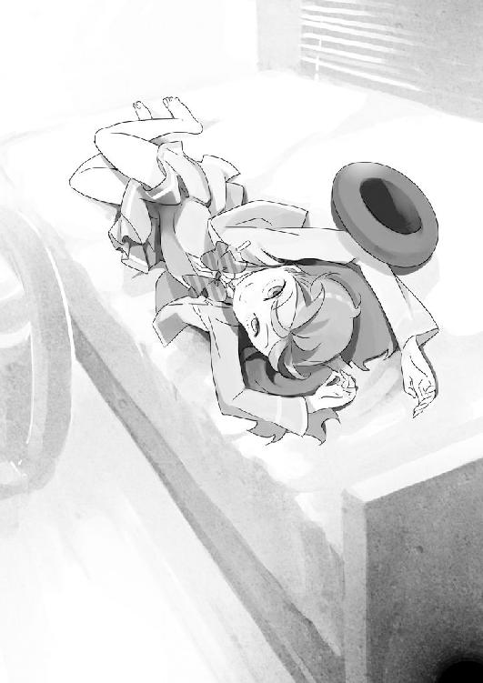
「そろそろ俺様に聞きたいことがあるんじゃないかな、君は？」
制服姿の少女が、けだるげに寝ころんで自分を見上げているのは、不思議な光景だった。自分の部屋なのに、まるで違った印象を受ける。
太ももがかなり際どい位置まで露出していることについては、あえて突っ込まない。
あれは罠だ。突っ込めば強烈なカウンターが返ってくる。
「......なんで、僕の家の住所知ってたの？ この学校に来たばかりなのに。連絡網でももらってたの？」
「アホか君は？」
もう慣れてきたけど、本当に失礼なヤツだ。だんだん荒れそうになる心をどうにか抑えこんでいると、理解が僕の部屋にあるパソコンを一瞥し。
「氏名、都築初。年齢十六歳、礼新高校二年三組クラス委員長で、部活は放送部」
「............」
絶句する僕の表情を見て、にやりと確信したように笑う。
「家族構成は、母『みなで』三十八歳でデザイナー。妹『遥香』は礼新高校の一年生で十五歳。コイツは確か、バスケ部のマネージャーかなんかだったな。部活のせいで帰りは遅い。後、父『一』が、享年四十歳で二年前に廃ビルの非常階段から投身自殺している」
あっけにとられる僕を無視して、すらすらと、まるで読み上げるように理解は続ける。
「君自身は至って成績優秀で友人関係も良好、クラスでもズバ抜けて目立つタイプじゃないが、誰からも好感度は高い。賞罰はなしだが、学校の行うボランティアには何度も参加している。道徳の教科書にでも載れそうな、模範的な優等生だな」
一気に喋り終えると、理解は僕を見て、口元を弓なりに歪めた。
初めて背筋に薄ら寒いものを感じた。
「どうだい？ 少しは、信用してくれたかな？ 俺様が探偵だと」
「なんで、そこまで......」
僕と理解はあくまで、ネットゲームでのいちプレイヤー同士の仲だ。プライベートな会話は一切していない。パソコンだって当時は父さんのものを使っていたから、僕や遥香の名前まで分かるはずが──。
「れーくん。君はまだ俺様の言葉を信じてないようだな」
「どういう意味さ？」
本当に分からずそう返すと、理解は含み笑いをしつつ、寝返りを打った。
「れーくん。それについては大して複雑な話じゃない。君がゲームをするために使っていたパソコンのＩＰアドレスを辿ってアクセスポイントと名前を拾い、アパートの管理会社に電話、適当な一般会社を名乗って、引っ越し先を聞き出すくらいなんて、慣れれば簡単なんだぜ？」
「......ちょっと待って？」
「何だよ、れーくん」
一瞬何を言われているか呑み込めず、よく反芻してから答えを出す。
「なんかおかしくない？ 後半はともかく、前半の部分は特にさ」
「へえ？ どうしてだい？」
こほんと咳払いをひとつして、彼女のペースに巻き込まれないように気合いを込める。
「だってさ。ＩＰアドレスから住所や個人記録を特定するのは、もはや警察レベルの話でしょ？ いや、そもそも当時僕がゲームをやってたサーバーを特定してから情報を抜き出して、下手をすればうちが契約してたプロバイダーまで手を伸ばさなきゃいけなくなる。そんなこと、普通はあり得えないよ」
二年前の僕は、特にネットのセキュリティに気を配ってはいなかったから、調べる人間さえいればザルだろうけど。それでも無茶な話だと思う。
「ふふふ......れーくん。舐めてもらっちゃ困るな」
僕の質問に対する理解の笑みは、変わらなかった。
「月見月の力を舐めてもらっちゃ困る。そこまで辿り着く荒技すら可能だから、今俺様は、こうしているんだぜ？」
「......いや、それだけならまだしも、僕の評判なんて、一体誰から？」
「なんなら中学の頃の評判も教えてやろうか？ 卒業した君の同級生を装って、君の行き先を聞いてやればあっという間さ。昼ドラ時間を除けば暇人の主婦なんてボロいもんだ」
「............」
僕があっけにとられている隙に、理解はくるりと体を捻ってうつぶせになり、片手をベッドの下に伸ばし──って。
「ちょっと！ いきなり何してるんだよ!?」
「ん、見りゃ分かんだろ、エロ本探してるんだよ。れーくんの性癖が知りたくてさ」
「あのさあ......理解」
どうにも彼女の行動には、突発的過ぎてついていけない。まるで学校に通いたての小学生のように質が悪い。
「どうした？ 疲れた顔して、なんか辛いことでもあったのか？」
「現在進行形でひとつね。ところで僕の性癖を知って、一体どうするのさ......」
「特にどうもしねーよ、ただの興味と嫌がらせだ。っと、何だよ、れーくんは巨乳好きだったのかよ畜生！ こんな皮下脂肪に騙されてんじゃねーよ！」
「勝手にそんなもの見るなっ！」
慌てて理解の手から雑誌を奪い取って、ベッドの下の段ボール箱を奥に追いやる。全く、油断も隙もあったもんじゃない。
「ちぇ、つまんねーの。ま、ちゃんと男の子してるようで安心したぞ。俺様がちゅーしてもなんも反応ねーから、ちょっと心配してたんだぜ？」
「君に僕の生理機能を心配されるいわれはないんだけどさ。ていうか、あのときいきなり僕にキスした理由は何？」
おかげで非常にクラスの空気が悪いんだけど、と言おうとすると、「ふふふ」と、理解はくぐもった笑い声を漏らした。
「決まってんだろ、君がかわいーからだ」
「真面目に聞いてるんだけど......」
「俺様も大マジだぞ、れーくん。君は俺様のお気に入りなんだぜ。なんせ、俺様の能力を使っても、心が見抜けなかった。こんなことは初めてだったからな」
制服のまま、理解はごろごろとベッドの上を転がり始める。
「さっきも言った通り、俺様はエスパーだからな。あんなチンケな推理ゲームで百戦百勝するのなんて朝飯前、楽勝もいいとこなんだよ。俺様は始めからプレイヤーの《心が読める》んだからな」
「............」
胡散臭いことこの上ない。
大体仮に、万が一にもあり得ない話で、心が読めるとしても、ネット空間を隔てて何が分かるというのだ。まだ、天才的な推理力を働かせた、とかの方が、信憑性が──。
「だが、君のだけは読めなかった。覚えているかい。あのゲームのラストで、俺様は確かに君が犯人でないと断言したが、犯人は君だった。俺様が心の読めない人間がいたんだよ。三百戦以上して、その十倍以上ものプレイヤーの噓を暴いてきた俺様が、暴けず、殺されちまった。そんな人間は、今までいなかった」
「............」
じろり、と理解の両目が僕に照準を合わせる。
「れーくん。人の心を見通す能力を持っている俺様にとって、《それが分からない》ということは何より不可解で、興味が尽きない」
寝返りをうって、うつぶせに僕を見上げてくる。
「だから俺様は、君をスカウトしに来たんだ」
「スカウト、だって？」
「ああ、そうさ」
どうも、あの大口を開けた狂気めいた笑いより、普通の笑顔の方が、不気味に感じられる。
「探偵の助手だよ、ワトソン君。古くから厄介な敵は、味方にするか殺してしまえというじゃないか」
「悪いジョークだね」
「だからマジだっつーの。そうでなくても君には魅力がある。ホームルームの始まる前に、教室での君を見ていたが、人気者で話題が広く、噓に長けているようだ。これだけでも、俺様よりよほど探偵の資質があるといって差し支えないぞ」
君と比較されても困る、とは言い出せない。
「俺様は今のところ、仕事の時にゃあ月見月家のスタッフを使用しているんだが、あいつらカスの手はあまり使いたくねーんだよ。だから、俺様に匹敵する噓がつけて、尚かつ手駒にできそうなヤツを探していたのさ。俺様が信頼できる人間をな」
信頼できる、なんというのは、理解の性格を考えれば歯の浮くようなセリフだけど。
「あの日以来ずっと、俺様は君に会いたくて会いたくて。どうにか君の顔写真までは入手したんだが──」
「だが？」
くすっと、悪戯な視線が僕に絡みつく。
「男の子にしちゃ、思ったより顔が可愛かったもんでな。直に会いたくなって、この依頼を見つけた時に、ちょっと月見月の権力を使わせてもらったってわけさ」
ごろんと理解は再びベッドの上に仰向けになって、微笑んでみせる。
「まあ、自己紹介はこんなところだ。それよりれーくん飯はまだか？ 俺様は腹が減ったぞ」
「理解。君が何者かは半信半疑だけど、とりあえずそれでいいとしてさ......」
「ちなみに嫌いな食べ物は皮のついたナスだから気をつけろよ」
時計を見ると、もう七時半を回っていた。
「いい加減に帰ってくれないかな？ 悪いけど、もうすぐ妹も母さんも帰ってくるんだしさ」
実際には妹はともかく、母さんが帰ってくることは稀なのだけど、そろそろ理解にお帰り願いたいので、そう言ってみる。
すると理解は天井を見上げながら、大きくため息をついて、続いてジト目で僕を見た。
「れーくん。君は思ったより心の狭いヤツだな。がっかりしたぞ」
「君の態度がでかすぎて収まりきらないだけだよ！」
＊
夜、八時を過ぎたので、僕は夕食を作り始めた。
「次に勝手なことしたら、今度こそ住居不法侵入で警察呼ぶからね」
どうにか理解を部屋から追い出して、四人がけのテーブルが中央に置かれた居間のソファーへと移動させた。僕はキッチンで野菜を切りつつ、お湯を鍋に張ってダシの素を入れる。
「れーくん。今日の夕飯はなんだい？」
「ごはんと味噌汁。アスパラとベーコンのソテーと、ツナと大根の煮物、ひじきだよ」
理解の迷惑極まりない動きを封じるために、車椅子は玄関に放置した。おかげでようやく、今は少し大人しくしている。
とりあえず、夕食だけ食べたら帰ってもらう、との約束を取り付けたが、絶対に破られそうな気がしてならない。
「どうでもいいけど、さっきの話って本当なの？」
「ん？ ああ」
ソファーの向きは、ちょうどキッチンとは逆なので、理解の後頭部だけが頷きを示す。
僕が理解を家に残したのは、根負けした以外にも、ちょっとした訳があった。
「疑うつもりなら、小遣いで君の口座に前金くらいは振り込んでやるぞ？」
学校に潜む殺人犯。それを見つける手助けをしたら、僕にもバイト代をくれるというのだ。
「しかし、れーくん。報酬をちらつかされたらすぐに首を縦に振るとは、君は意外とがめつい人間だったんだな。この金の亡者め」
こっちを振り返ろうともせず、真っ黒なテレビ画面の前で理解は寝ころんでいた。顔が見えずともニヤニヤ笑っているのが分かるのが、なんか妙な気分だ。
「そう言われれば、今のところは否定しないけど」
あれだけ僕のことを調べていた理解なら、既に知っていると思うが、僕の家にはそこそこ借金が残っている。今でこそ母さんのおかげでだいぶ減ったが、二年前は電話と玄関のチャイムに怯える日々だった。だから、僕がこの話を受けることに、なんら不自然はないだろう。
『俺様の探偵活動の助手役を務めて欲しい。もちろん、金は出す』と、そう理解は言ってきた。
だが正直、僕は理解のこの申し出を一パーセントたりとも信じちゃいない。
通常、いや、この異常すぎる場合における通常がなんだか知らないが、警察が基本ひとりで捜査にあたることはないように、探偵だって本物ならちゃんと訓練を積んだ専属のスタッフなんかがいて、僕みたいな会ったばかりの一介の高校生を使うなんてことは、まずあり得ないはずなのだ。
まあ、その前に山ほど突っ込むべきところがあるんだけど......。
とにかく、理解が僕につきまとう本当の理由、学校に潜む殺人犯とは誰なのか、僕にこんな交渉を持ちかける本当の狙いは？
料理をしながら、そんなことをずっと、頭の片隅で考えていた。
しかし、理解は何をしているのだろうか？ じっとソファーに腰かけたまま、何も見ようとはしない。最初にニュースだけ見ていたが、すぐにテレビの電源をオフにしてしまった。
「れーくん、君はテレビとか見んのか？」
暇じゃないのかと思っていたら、やはり暇だったみたいだ。首だけ振り返って、理解は聞いてきた。こんな時でも、張り付いた笑みのままだ。
「ニュースくらいかな。後は既存のバラエティをちらほらと。理解は何か見てるの？」
「見ねえな。見ても時間の無駄ってもんだぜ。テレビで面白いもんなんてねぇよ」
「バラエティとかは？」
「目が腐る。あんな気持ちの悪い映像を見るくらいなら、まだ空と雲でも眺めてた方がよっぽどマシだな」
「そう？」
僕の問いに、理解は軽く顎をしゃくってみせる。
「大体何がおもしれえんだよ。面白くねえ人間が面白くねえこと言って、それを周りの連中が必死に面白そうに見せかけて、ゲラゲラ空笑いしてやがるんだぜ。つまんねえどころか吐き気がするな」
「いくらなんでも極論過ぎると思うけど。クイズ番組とかは？」
「あの芸能人がわざと頭の悪い解答をして、バカな視聴者を安心させて、大勢でヘラヘラ慣れ合ってるヤツか？ 気持ち悪過ぎて吐き気どころか吐くな」
なるほど。この反応を見る限り、理解はネット上の《探偵Ｒ》そのままの性格だ。
僕が《探偵殺人ゲーム》を卒業して二年近くが経つけど、まだ鮮明に思い出せる。
「反抗期の中学生みたいだなあ。大体、もし難しい問題を高学歴な人たちが解いてるだけの番組だったら、誰も見ないじゃない。しかもそういう番組だったら、それはそれで、今度は『インテリの知識自慢だ』とか言うんでしょ？ 斜に構えて見てたら、何だって面白くないよ？」
「んふふふふ。君の日和見主義も変わんねえなあ。れーくん」
と、僕の言葉に動じた様子もなく、楽しそうにソファーの上で寝返りを打つ。
なんというか、こんなに落ち着かない気分で夕餉をとるのは久しぶりだ。地雷の埋まった原っぱで、ピクニックシートでも広げているような。
「よし、メシができたか、だっこしてくれよ、れーくん。椅子を経由するのが面倒だ」
「............」
ソファーの上で、理解がにこやかな顔を僕に向けて、両腕を伸ばしてくる。
なんか、だんだん拒む方が面倒くさくなってきた。
今更だけど、こう考えること自体、全ては理解の思惑通りなのかもしれない。
＊
「やばいな。これは」
移動の度に抱き上げるのも面倒なので、理解に車椅子を返し、夕食のテーブルで顔を合わせ、更に両手を合わせて三分後、一通りのおかずとご飯を口にした理解は、ぼそっとそんなことを口にした。
「残すなら早めに言ってよ。片付けるのに手間がかかるから」
所詮、近所のスーパーで買ったありふれた食材と、母方の実家から送られてきたお米。大財閥のお嬢様の口に合うご飯なんか始めから作れるわけがない──そう思いきや。
「れーくんに飯炊きの才能まであるとはな、驚きだ。ちょっとこれは調べが足りなかったぜ。おかわり」
「............」
「ほら、早くしろよ」
そう言って、空の茶碗を差し出してくる姿は、食べ盛りの子供と何ら変わりない。
もう、どこまで本当か分かんなくなってきた。
「君って本当にあの月見月家の人間なの？ それにしちゃ随分、舌が安いみたいだけど」
僕が装ったごはんを渡してやると、理解はすぐにツナと大根の煮物に箸を伸ばし、がばっと五分の一くらいの量を口の中に詰め込む。
「ひみはほれさまをごはいしているようらが、かねもひがふらんからいものほ」
「ああもう分かったから、口に物を入れて喋るな！」
咀嚼して呑み込み、また次のおかずとご飯を口に運ぶ。食後のお茶を一息で飲み干すと、理解はようやく一息ついた。
「ふう、ごちそうさま。しかし、水がまずいな。ミネラルウォーターくらい買えよれーくん。シメの茶がまずいってのはどういうことだ？ 一体全体、どういうことなんだぜ？」
「散々食い散らかしといて言うことがそれかよ！ 図々しいのもほどほどにしないと、今すぐ星空の下に放り出すぞ！」
「ところで、デザートにコーヒーフロートが飲みたいんだが、カップアイスとかないか？ できればハーゲンダッツの」
ああもう聞いちゃいない。女の子相手に暴力をふるいたいと思ったのは、久しぶりだ。
「次に勝手なことを言ったら、警察に通報する！」
脅しではなく、半ば本気だったのだが。
「くくくくく......サツは嫌いだなぁ。探偵の敵だよ」
「え......？」
「何意外そうな顔してんだよ。言ったろ。月見月家は犯罪組織だって」
「でも、探偵は悪じゃないでしょ？」
古今東西、そんな説は初耳だ。
「分かってねーな君は。探偵のどこが悪党じゃないっていうんだよ。尾行、盗聴、盗撮。やってることはスパイとどっこいどっこいだ。警察よりの仕事だと思ったらそりゃ大間違いだ。プライバシーの侵害どころじゃねえ」
「そうかな？」
僕自身、ちっとも探偵のことを知ってる訳じゃないが。さすがに無茶な物言いだと思う。まあいいや。この子の言うことをいちいち真に受けていたら、体が持たない。
食事を終えて気づいたが、残しておこうと思ったご飯が、全部なくなっていた。
三合炊いたんだけどなあ......。
「それより、そろそろ教えてくれないかな？」
食器を洗おうと、台所の蛇口を捻りながら、僕は理解の方に振り返った。
「俺様の性癖についてか？」
「ターゲットのことだよ！ うちの学校に、殺人犯がいるって、どういう意味？ ちゃんと話してくれないと、場合によっては、さっきの手伝うって話はなかったことにさせてもらう」
屋上で聞いて以来、ずっと引っかかっていた言葉。最初に聞いたときは度肝を抜かれたが、口にしてしまえば、恐ろしいほど現実味がなかった。
これでも一年ほど学校で過ごしてきたのだが、行方不明になった生徒とか、教師や用務員の話は、ついぞ聞いたことがない。
むしろ、一番異常な事態は、今目の前にいるこれだ。
「れーくん。ちったあ脳ミソを使えよ。サツとか普通の興信所じゃなくて、この俺様に。月見月の専属探偵なんかに依頼が来てる時点で、おおよそは察しはつくだろ？」
「............」
少しだけ考えてみる。
当然の話だが、警察が事件を未然に防ぐことは、個人相手ではめったにない。手間がかかるから《疑わしい》だけの事件にはのってこない。
「要するに、《面倒な》事件ってことだ」
僕が考えをまとめる前に、理解が答えを言った。
「だが、依頼人は心当たりがある。人を殺して、何食わぬ顔をしている人間にな。そいつを調べて欲しいと、そう言っている。そして、もし犯人だと特定できれば......」
「............」
僕は《探偵殺人ゲーム》のルールを思い出す。犯人を突き止めるのではなく、犯人を殺していくゲーム......。
だが、あれはあくまで、シナリオに則ったルールだけのはずだ。
現実とは、訳が違う。
「まさか......」
僕の呟きに、理解が唇の端をつり上げる。
「そうだ。依頼人の願いは、ターゲットの抹殺だ。そいつが犯人だと分かれば、俺様は──そいつを殺す。というわけだ」
「......冗談でしょ？」
「くくくく......まさかだよなあ、だが」
カチリと、理解が、《スレイプニール号改》の肘掛けの液晶パネルをいじると、ブゥンという静かな起動音とともに、機械的な映像が映し出される。
「こいつは通信端末も兼ねていてな、俺様が月見月の暗殺部隊に指示を送れば、即、対象を《抹消》することが可能となっている」
「そんなわけ......」
あくまで、あれはゲームのはずだ。実際とは違う。いくら何でも、この日本でそんな真似が、できるはず──。
「さてと、もうじきだな」
「......何が？」
唐突な理解の言葉に、僕は顔を上げる。
「あと三分」
理解は笑顔のまま何も答えない。奇妙な沈黙が続く。
そして、三分は経過した頃、カチャリと玄関先で鍵を捻る音がした。
「............」
誰だろう？
時計を見ると、まだ八時半を過ぎたばかり。バスケ部のマネージャーをやっている遥香は、普段の帰宅時間はめっぽう遅い。平日の今日に、普段ならこんな早くに帰ってくることはあり得ない。ましてや、仕事であちこち飛び回っている、母さんなんてはずもない。
「たっだいまー！」
玄関が開いてから数秒遅れて、遥香のハイテンションな声が居間に飛び込んできた。
「えっ......？」
何故分かった？ 窓にはカーテンがかかっているから、外の様子はうかがえないし、足音にしたって、三分前の距離から察知するなんて到底不可能だ。
ただの偶然なのか、それとも......。
「......うおっ！ お客さんなんてめずらしーじゃん兄貴。あ、こんばんはー。妹の遥香っす。兄がお世話になってまっす。えーと、彼女？ 同じ制服だけど学校じゃ見かけないね、誰？」
居間に入ってくるなり、遥香は理解と僕に笑顔を見せた。腰まで伸びる、赤みがかったポニーテールが、こちらに向けて揺れた。一応地毛なので、学校には咎められていない。
「何、まだ礼には及ばねえよ。今晩お兄ちゃんに下のお世話をたっぷりしてやるんだからな」
「いい加減にしろ！」
危うく洗いかけの皿をぶん投げそうになる。
妹の前で、初対面の挨拶じゃない。いや、もともとロクな挨拶なんて理解に期待してないけど、これは酷過ぎる。
遥香は、十秒ほどぽかーんと、口を開けっ放しにしていたが。
「うっわあ。兄貴って、無害そうな顔して結構進んでたんだね......。恋愛にどうこう言うつもりはないけど、まだ学生なんだから避妊はしてよね」
「この子の言うことをひとつでも真に受けちゃダメだ」
と、否定はしておくけど。心配はいらないと思う。遥香も普段はこんなキャラだが、中身は結構まともだから、適当に空気を読んでくれているはずだ。
とりあえず、この場はうまく誤魔化しておきたい。
「......夕食は？ 今日は食べていくの？」
「......ううん。これからすぐ部活の打ち上げだから......」
「なあなあ、ところで妹ちゃん？」
そのまますぐ外に出ようとした遥香を、理解が引き留める。
「遥香でいいっすよ。えーっと、お名前は......？」
「君筒木衣梨花。または理解、だ。俺様とお近づきになりたいなら後者で呼べ。妹ちゃん」
「リカイ......？ アダ名っすか？ 面白い名前っすねー、リカイさん」
「うっせえ気安く呼ぶな。お前のツラほど面白くねーよ。いいから答えろ」
「ひいー！ じゃあなんでアダ名教えたんすかー！ お兄ちゃんの彼女なんか怖いよー！」
「一応全力で否定しておくけど、その子はただの知り合い」
いきなり無茶な会話だ。そろそろ理解は殴られても仕方ないと思う。もう、一秒一秒がハラハラする。
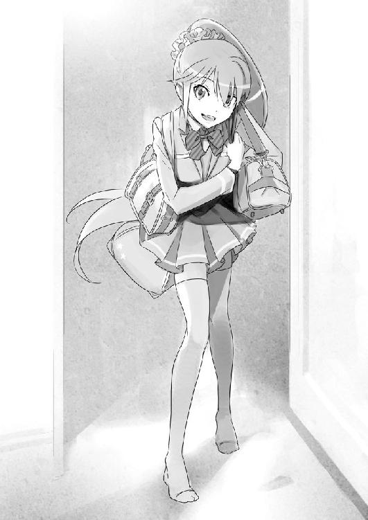
「そうそう、聞きたいところはそこじゃねえ。ところで、一昨年の九月七日を覚えているか？」
「へ......？」
唐突に話があらぬところに飛び、遥香がぽかんと口を開ける。
だが僕は、一発で察しがついた。
忘れもしない、その日は確か。
「その九時頃に放送してたドラマがあるんだけど。れーくんは見てたかな？」
唐突に話題が変わった。個人的にさっきの日付の話はさせたくなかったので、僕は新しく垂れたその糸に、急いで飛びついた。
「あ、う、うん。ひょっとして『六月の恋いさめ模様』？ ああ、確かに、ここ数年のドラマの中では確かに名作だと思うけど。有名どころを惜しみなく、使い捨ての脇役に使ってたのがよかったね」
などと相槌を打ちつつ、僕は内心で疑問を浮かべていた。
さっきまでテレビなど見ないと言っていた理解が何故、そんな話題を振ってきたのか。その真意を。
「ってことは当日、妹ちゃんも見てたわけだよな。しかしれーくん。ちょっと調べたところ、面白い話があってだな」
「んん......？」
遥香が首を傾げる。
「九月七日の二回目の放送のことだ。まあ内容の評判はすこぶる良かったんだが、実は同時に批判も多い回でね。何があったと思う？」
「さあ？」
「見てたんだろ？ 番組、妹ちゃんも」
「ん？ うーん、どうだったかなぁ。シリーズ通して多少は見てたかもしれないけど、そこまで覚えてないや」
「れーくんは覚えてるよな？」
「......覚えてないよ」
答えつつ、自分の口元にさりげなく手を当てる。余計なことを喋るなというジェスチャーだが、理解はそれを見た上で、文字通り一笑に付した。
「とぼけんなよ。君のお父さんが紐なしバンジーにチャレンジした、記念すべき日のことだぜ。見てたよなあ？」
「えっ......？ お父さん......」
遥香の顔色が、さっと青色に変わる。
「ちょっと、理解──」
何だ？ 一体いきなり何を言い出すんだ？ この子は。
じろっと、理解の禍々しい目が、僕の瞳を覗き込む。
「報道テロップだよ。字幕テロというヤツさ。肝心のクライマックスのキスシーンで地震の速報が流れちまったんだよ」
「......噓だよね。それ？」
よく思い出せないが、確かそんな場面はなかった気がする。
「いや、マジさ。でも、君の妹ちゃんはどうやら覚えてない。これがどういうことだか分かるかな？」
理解の言葉通りなら、遥香はその時間、テレビのある居間にいなかったということだ。
すなわち、父さんが死んだ前後の時間、家にいたというアリバイが──。
「そのとき、妹ちゃんは何をしてたのかな？」
「え、えっと......その、私は──」
何を言われているのか分からないといった目で、遥香は理解を見ている。
「遥香、友達が待ってるんじゃないの？」
「う、うん。そうだった。じゃ、またね、お二人さん」
ぱたぱたとフローリングの床を駆けていく遥香を、理解は引き留めなかった。
「あーあ、逃げられちったか」
大袈裟に両手を広げて、理解は肩をすくめる。だが、声と顔が笑っているので、ちっとも残念そうに見えない。
「さっきの話って、ほんとにそうなの？ ちょっとテレビ局に電話してみていい？」
「してみろよ」
挑発するような口ぶり。僕は引かない。
「じゃあ、明日してみるよ。今日はもう遅いから」
居間の隅にある、古びたデスクトップ型のパソコンに向かい、起動させる。インターネットで局の番号を確かめようとすると、理解が車椅子を動かしつつ、さっと片手で制してきた。
「んん......さすがだなぁ、れーくんは。ちゃんと確かめるつもりだな、偉い偉い。割とめんどうくさがって確かめないヤツが多いんだよ」
やはり、テロップが入ったというのは、噓だったようだ。
「どういうつもり？ 試したの、僕を」
理解は用済みとばかりにパソコンから離れて居間の中央に戻ると、改めて僕に向き直った。
「君じゃねーよ。君の妹ちゃんさ。ちょっと仕掛けてやれば、何かボロを出すかと思ってね」
僕はキーボードから目を逸らして、改めて理解を見る。
「どういうこと？ なんであんなこと聞いたの？ ああ見えても、遥香は父さんの死に対して、かなりショックを受けてるんだよ。なんで、あんな真似──」
言いかけて、はっとした。
そういえば、まだ聞いていないことがあった。誰が殺したというのもそうだが、誰が殺されたのかということも。
「だから聞いたんだよ。分からないか？ 君のお察しの通りさ。ま、今のは軽いジャブみてーなもんだよ」
今のは、探ったのだろうか。探りというにはあまりにわざとらしい仕掛け。
「ちょっと待ってくれ！」
動悸が高まるのを感じながら、僕は問いかける。
「今の話を聞くと、まるで父さんが殺されたみたいな言い方だけど......」
僕の狼狽を愉しむかのように、理解が笑みで応える。
「れーくん、依頼は自由だぞ。どんなに当てがなかろうと、どんなに望みが薄かろうと、どんなに荒唐無稽な妄想であろうと。それに心当たりのある人間さえいれば、依頼は可能だ。そう、それが例え、警察が自殺と判断したものが、実は他殺であろう。などということでもな」
「じゃあ、まさか......」
震える声で呟く。理解の瞳の奥、瞳孔が赤く輝いた......ような気がした。
「そうだ。俺様が調査を依頼されたターゲット。君のお父さんを殺した犯人の候補は、《都築遥香》。君の......妹さ」
翌日。太陽の光もまだ大人しい、静謐な空気の満ちた午前八時十五分。
歩いて十五分ほどの通学路。その最終直線の桜並木の道で、僕の隣をゆるゆると電動車椅子が走っていた。
「おっはよー都築君！ 今日は早いんだねー......って、きゃっ!?」
「あ、おは......」
挨拶を返す前に、隣の理解を見たクラスメイトの女の子は、既に小走りで逃げ去っていた。
まあ、そりゃ復学初日からあんな態度じゃ逃げるよな。少なくとも、僕も理解と何の因縁もなかったら、今すぐ逃げ出したい気分だ。
「ったく、失礼なヤツだなあ。この俺様に挨拶もしねえなんてよ」
ちっとも怒った素振りも見せず、理解は面白そうに女の子の背中を見送った。
「県内三番手の進学校でこのザマじゃ、この学校の教育もダメダメだな、れーくん」
「君が言えた義理か」
結局、理解の言っていた通り一夜を過ごされてしまったので、必然的に今こうして、一緒に登校するハメになってしまっていた。
僕は車椅子を押さず、彼女の足代わりである《スレイプニール号改》と並んで歩く。基本的にものぐさな質なのか、理解に自分でタイヤを回す気は一ミリも無いみたいだ。
それにしても、理解の醸し出す敵意に満ちたオーラのおかげで、登校中、僕に声をかけてくれる知り合いの数があからさまに激減している。なんてこった。
「あれ、都築君。どうしたの？ その子......」
僕が懊悩していると、馴染みの声が聞こえる。宮越さんが、いつの間にか隣に来ていた。
まあ、昨日泊まるとか理解が言ってたし、この反応は当然か。
「おはよう。宮越さん」
理解と反対側のスペースを併走しつつ、僕の耳にこそっと口を近づける。
「何があったの......？」
「恋人同士が一緒にいるのが、何かおかしいのか？ 副委員長様よお」
ばっちり聞かれてしまっていた。
薄笑いで宮越さんを見上げる理解。僕の繊細な神経網は、朝からズタズタに引きちぎれそうだった。
「後で話すよ」
「あ、うん。分かったわ......」
理解の相手が面倒だと思ったのか、僕の心労を察してくれたのか、宮越さんは軽く頷いて、僕たちは会話を閉じた。
そのまま校舎に入って、教室のドアを引き開ける。ホームルームの五分前という時間のせいか、クラスの席はほとんど埋まっていた。
「おはよう、みんな」
僕が笑いかけると、クラスのみんなの顔も明るく笑いかけ──固まる。
「あ......おはよ」
クラスのみんなが、同じように微妙な反応を見せた。一晩明けてみれば、僕まで理解と同じ腫れ物と化していた。
いやさ、気持ちは分からなくないけど、ちょっと酷くない？
「さ、れーくん。今日も頑張ろうぜ」
そしてこの事態の張本人は、悪びれもせずに自分の席をぴたりとくっつけて、僕の机の上に頭を転がしてくる。
「うわあ......」
という呆れた空気が、教室を包むのが分かった。僕も同感だ。
少し遅れてホームルームのチャイムが鳴る。
再び過酷な、僕の戦いが始まった。
時限爆弾を置かれた授業中。早々に居眠りを始めた理解の傍らで、僕は昨晩、遥香が出かけた後のことを、思い返していた。
＊
「絶対にあり得ないよ！」
昨晩の出来事。遥香が人殺しなんてあり得ないと。僕は確かに、そう啖呵を切った。
「へえ、あり得ないねえ。一応聞いておくが、根拠は？」
理解の挑発的な口調にも、僕は引かなかった。
「妹が、遥香がそういう人間じゃないことを、僕は知っているからだ」
そう、言い切った。
「大体、警察が自殺だと判断して二年も経った事件を、今更──」
そう言いかけた僕をさっと手で制して、理解が微笑んだ。
「ならば、れーくん。俺様と協力して彼女を調査しよう。俺様が今日から七日間で妹ちゃんの証拠を揃えるから、君は妹ちゃんが犯人でないと証明してみろ」
「証明って......そもそも、自殺なんだよ？」
どこまで本気のつもりなんだろうか。
「いいかれーくん。念押ししておくが、この場合の犯人とは──直接殺人を犯した人間のことじゃない。君のお父さんを自殺の直前までお膳立てした。いわば間接的な最終人物のことを指すんだよ」
僕の目を真っ直ぐに見据えて、理解が笑う。
「分かるな？ 君のお父さんは、そのとき退院直後だった。まあ、動けなくはないにしろ、精神失調気味で自殺未遂も一度しているし、家族の誰かが見守ってやらなくちゃいけなかった。突然メランコリーな気分になることも想定内だったはずだ」
「............」
もう、そこまで知っているのか。
「それなのに、何で家族三人雁首揃えて、お父さんのスカイダイビングを止められなかったのだろうか。依頼人は、その辺りを訝しんでいる」
「......依頼人て、一体誰なの？」
「ふふふ。れーくん、君も大胆なヤツだな。俺様から協力を持ちかけてなんだが、それは最高に無意味な問いのひとつだぜ」
ダメ元で聞いてみたが、さすがに教えてはくれない、か......。想像はつかないが、いるとすれば、父方の家族か友人、あるいは、愛人だろうか？
いや、愛人はあり得ない。僕の父さんがそんなことをできるほど器用な人間なら、簡単に騙されて借金を背負うこともなかった。
でも、遥香が犯人ということは絶対にない。あいつは僕以上に、父さんのことが好きだった。
そして、親しい人のことを決して見捨てない。殺すくらいだったら、自殺に付き合って一緒に死ぬ、そういうヤツだ。
「というわけで、まあ依頼された以上、君の妹ちゃんが犯人だった場合、俺様は月見月家の始末屋に連絡を入れて、妹ちゃんを殺すよう命じなくてはならない」
殺す？ 遥香を、殺すだって？
「──そんなこと、できるわけ」
「ない、と言いきれるのか？ 人が人の不幸に対して、どれほど無頓着になれるかを二年前に味わった君が、分からんわけじゃあるまい」
「............」
こいつ、僕らの過去を、どこまで知ってるんだ。
「あっはははは。そんなにマジになるなよ、れーくん。これはゲームなんだから。俺様だって、君のお父さんの件は単なる自殺だと思ってる。というより、これはおそらく事件ですらない、正真正銘のクソ仕事だよ」
薄ら笑いを浮かべて、理解は僕を睨め付けてくる。
「だから、君はあくまで金のために俺様の助手をしてくれたらいい。なあに、妹ちゃんが犯人じゃないと確信しているなら、そう探偵の活動で示せばいい。あるいは、他の真犯人を見つけてくれても一向に構わないぞ。そうなれば、ただそいつを殺すだけだからな」
「......分かった」
半信半疑だが、それが理解の答えみたいだった。
「だが、それだけでは特殊能力を持っている俺様が圧倒的有利だ。だから君にも、俺様と勝負をする形で、チャンスを与えよう」
「勝負、だって？」
どういう意味だ、それは。
「それでは、そろそろ俺様と君だけの《探偵殺人ゲーム》のルールを説明しよう」
短い説明の後、理解は居間でひっそりと眠りについた。
僕はしばらく放心して、夢見心地のまま、しばらくそれを眺めていた。
母さんは当たり前だが、その夜は、妹の遥香も帰ってこなかった。
＊
昨夜の事を反芻している間に、早三時間が過ぎた。教室に差し込んでくる春の空気は眠気を誘うが、理解のおかげで僕の脳みそは緊張し、昼寝をした日の夜のように冴え渡っていた。
「むにゃ......」
隣の席では、僕の不安とは裏腹に、理解が堂々と机に突っ伏して寝息を立てている。
授業をしにやってくる教師陣も、理解の醸し出す異様な雰囲気に呑まれ、触れようともしなかった。だが、二度目の数学の授業にて、ついに理解は表舞台に立たされた。
「君筒木！ いつまで寝ている！ 復学したばかりだからって調子に乗るなよ！ 教科書百三十九ページの問題を解いてみろ！」
しかし、まずは僕が起こしてやらないといけないんだろうか。
そう思って、小さな頭に手を伸ばそうとしたとき。
「......x=-1及び3-i」
声が先だった。まるでそれが機動音だったかのように、理解ががばっと顔を起こした。ロボットみたいな目と動きだった。
一瞬遅れて、教室のみんながぎょっとした。
「え......」
教師が目を白黒させたのを確認したようなタイミングで、再び理解はゆっくりと机に沈み込んだ。
奇妙な静寂に包まれる。
「............」
どういうことだ？
僕自身も、訳が分からなかった。
教師を実力で黙らせたとか、そういうレベルの話じゃない。
クラスのみんなが感じているのは、おそらく僕と同じ、その異常性だ。
今まで寝ていたとおぼしき理解が、突然声を発して答えたこともさることながら、顔を突っ伏していた机には、黒板はもちろん、教科書もノートも見えていないのだから。
つまりは『問題も見ずに答えた』のだ。さしもの天才でも、問いを知らずに、答えを出すことはできない。
何が、どうなってる？
まさか、これが理解の能力、なのか？
「どうしたよ先生様？ 当たりかハズレかくらい言え」
もう一度、ゆっくりと起き上がった理解が、寝ぼけ眼をこすっていた。
「なっ......」
先生がそれきり押し黙ってしまったところをみると、間違いなさそうだ。
しかし、何故だ？ 仮に理解が天才だとしても、何故見てもいない問題の答えが分かった？ ......そういえば、昨夜も確か、遥香の帰宅時間を予測できていた。これは、偶然か？
直後に、終了を告げるチャイムが鳴った。
「そ、それではこれにて授業を終える。号令！」
止まっていた時間が動き出す。先生が逃げ出すように教室から立ち去ると、皆がほっとため息をついた。
昨夜説明された、理解とのゲームの話を思い出す。
果たして、僕は本当にこいつに勝てるのだろうか。
＊
午後の体育の授業は、さすがに理解とも離れる事ができるので助かった。
隣のクラスとの合同で、女子は体育館でバスケ、男子は校庭でサッカーという授業内容だったが、僕は具合が悪いフリをして見学に回り、木陰で虚空を眺めていた。
ズル休みをするのは性に合わない。できるとか、できないとかの問題ではなく、こういう噓をつくと僕は何かもどかしいような気持ちがして背中がむずむずするのだが、今回ばかりはそうも言ってられなかった。病気ではないにしろ、本気で頭が痛かったからだ。
「すごかったわね。さっきの」
隣にいつの間にか、宮越さんが立っていた。
さっきのとは、授業での理解のことを言っているのだろう。
「推理ゲームと関係あるのかは分からないけど。今度勉強で行き詰まったら、あなたの彼女にお願いしようかしら」
「宮越さんまで、勘弁してくれ」
僕がため息混じりに答えると、体操服姿の宮越さんがくすくすと笑った。
「理解は見学？」
「生理痛だから、保健室で寝るって言ってたわよ？」
「......噓だな」
「違いないわね」
斑模様の影の中で、僕と宮越さんは笑いあった。
「宮越さんこそ、サボリなんて珍しいね」
宮越さんは僕の問いに鼻で笑うと、隣に腰かけて、グラウンドを眺めた。
「バスケの試合が終わったばかりだから、後十分は暇なの。うちの体育館、ちょっと狭いわよねえ......」
「そっか」
「で、あなたは何でそんな暗い顔してるのかしら。あの子に弱みでも握られた？」
「あはははは......」
表で苦笑しつつ、内心図星であることにドキリとする。
妹を人殺しとして調査する。もしそうであると理解に判断された場合、殺される。タチの悪い冗談にしては、やたらと回りくどくて、細かいのが気になった。
「似たようなものかな。ちょっと、違うけど」
「ふうん。あたしに言ったら、まずいこと？」
まずいに決まっている。家族がよく分からない理由で殺人犯として疑われていることも、他の何もかも。だが──。
「ううん。そういう訳じゃないけど」
だが、僕も正直参っていた。
突如現われた《探偵Ｒ》のこと、妹を犯人と疑われ、その捜査次第では殺されかねないこと。全てを冗談として笑い飛ばす気分にもなれないこと。
協力者が居てくれることに越したことはない。いや、むしろ必要だ。
「ちょっと成り行きで、彼女と賭け事をすることになっちゃってね」
そして僕は、昨晩の出来事を語り始めた。
＊
「そうだな。まずは、このカードを受け取ってもらおうか？」
午後十時過ぎの居間で、僕と理解だけの《探偵殺人ゲーム》、その説明にと、理解が僕に手渡してきたのは、トランプの予備のような真白い三枚のカードだった。
そのうちの二枚の背には、刃物のイラストと、その上に記された二種類の英字。残りの一枚には、円状の鎖のようなものが描かれていた。
「これは......？」
僕が刃物のカード二枚を手に取ると、理解が薄く微笑んだ。
「そうだな。まずそれは、今回の現実の《探偵殺人ゲーム》における、《包丁カード》とでもしておこうか？」
包丁のカード。犯人と疑わしき人間を殺傷できる、探偵殺人ゲームの根幹を成すといってもいいカード。
「これを使って、妹ちゃんを犯人と特定する前に俺様を殺せれば、その功績に免じて、特別にターゲットである妹ちゃんの命だけは取らないでおいてやろう。ま、他にちゃんとした真犯人がいれば、そいつは殺すがね」
普通の推理ゲームなら、大抵は真犯人を発見し、論破することがクリア条件だが、《探偵殺人ゲーム》においては、それはひとつの選択肢に過ぎない。
むしろ、他者を犯人扱いし、自分の安全と優位性を築く手段として用いられる。
プレイヤーは、アイテムとして複数枚存在する《包丁カード》を使用すれば、対象のプレイヤーを問答無用で殺すことができる。現状の犯人を看破した後は、頃合いを見計らって犯人を殺害し、成り代わって、今度は他の人間を殺戮していくのだ。
「なんか、遥香を調べるだけなのに、随分と回りくどいことするね？」
そう聞くと、相変わらずの笑みで返してくる。
「分かってねーなあ、ハンデに決まってんだろ？ まともに月見月家のスタッフと、俺様の能力を使ってしらみつぶししてったら、俺様のワンサイドゲームじゃねえか。あっさり事件は解決で、君の出る幕はない。それじゃつまんねーから、こういう変則ゲームにした」
相変わらずの圧倒的な自信だ。
「俺様が特殊能力を使うのは、一日一回まで。能力を使った後には、誰に使ったかとその結果を君に教えてやる。犯人かどうかの当たり外れをな」
「............」
「それ以外は純粋に生身の足を使って調査していき、能力を使うべき、疑わしい犯人候補を絞り込む。俺様の犯人判定に不服があるなら、君はロジックでそれを証明しろ。妹ちゃん以外の殺すべき真犯人を見つけてもいいし、根拠不十分ということで、俺様を論破してくれてもいい」
無茶苦茶なことを言ってくれる。
いもしない犯人を、よく分からない《能力》で取り調べられたって、どう反論すればいいのか見当もつかない。
オカルトを全否定するロジックなんて、どこにもありはしないというのに......。
「もちろん通常のゲームと違って、君が殺す相手は基本的に俺様しかいないわけだから、普通にやったんじゃ成り立たない。俺様を殺して妹ちゃんを守るために、その《包丁カード》の使用条件を教えよう」
「............」
「一枚目のカードは、この事件の真相を当てること。つまり、真犯人が誰か別人であることを、俺様に納得させることだ」
一枚目のカードには、《Murderer》と、書かれている。マーダラー。殺人鬼の意だ。
「それに、僕が真犯人の名前を書けばいいわけ？」
「単純だろう？ 君が妹ちゃん以外の真犯人を見つけるか、犯人はいないと証明できればいい。そこには真犯人の名前か、『いない』と書いて俺様に渡せ。もちろんうまいこと説得できなければ無効だ」
「なるほど」
「二枚目のカードは、俺様の特殊能力について当てることだ。俺様が月見月家の探偵として使用している能力。具体的なことまでは言えなくとも、そのメカニズムを答えること」
二枚目のカードには、《Skill》と書かれている。
月見月家の探偵たる資格。理解の言う《特殊能力》の謎を言い当てる。
とはいえ、僕が先にカードで示し、理解が口頭で答えるというのはアンフェアだ。
「ところで、君がジャンケンの後出しをしない保証は？」
僕の問いに、理解が顔を歪める。待っていたと言わんばかりに。
「抜かりはねえよ、ほら」
いつ仕込んだのか、初めからこうする気だったのか。車椅子の下のスペースから、オルゴールほどの小箱を投げてよこす。小箱には油性マジックで《Skill》と、書かれてあった。
「この中に、答えがあらかじめ書き込まれてる。ただしカギは俺様持ちだがな」
「答えを言ってからじゃないと、カギはくれない、と？」
無言で理解は頷き、部屋の隅にあるカレンダーを指差した。
「《包丁カード》の使用制限は、ネットゲームと同じく一日に一度きりだ。俺様が今回の休暇で滞在できるのは、今日を含めて一週間だから、実質六日間だな、俺様の謎という扉のカギを早く開けないと、文字通り宝の持ち腐れだ」
「なるほど」
「そして、もうひとつ。君の妹ちゃんの防御方法を教えてあげよう。三枚目のカード、《チェーンロック》を手に取ってみろ」
「......これのこと？」
余っていた、鎖の絵柄のカード。内心うっすら僕は予想がつき始めていた。
「こっちは単純だ。明日から俺様とネットの方の《探偵殺人ゲーム》で、再勝負してもらう」
「......何だって？」
「この三枚目のカードに関しては、君の好きなキーワードを書いて俺様にくれればいい。ただし、《遺言》を使って確認するから、万一にも被らないようなものにした方が身のためだ」
「............」
遺言とは、ゲームスタート前に入力しておくことで、プレイヤーの死亡時に十文字程度のメッセージが表示されるおまけ要素的なシステムのことだ。
「俺様の遺言は『おめでとう！ 君の勝ちだよ、れーくん』にしてやったから、君は違うのを書くがいい。もし俺様が先に死んだ場合は、その時点でもう、君の妹ちゃんの安全は保証してやる」
「よく考えるなぁ......」
確かに、そのメッセージをあらかじめ伝えておけば、プレイヤーとしてのハンドルは分からなくても、どちらかが脱落した時点で確認は可能だ。
「もちろんこの因縁に関しては、紛れもなく俺様と君との一騎打ちだ。今日から最終日まで、君がネットゲームで生き残っていれば、万事解決というわけだ」
「............」
さりげなく、難易度が高いことを言ってくれる。僕が昔、理解に勝てたのは、あくまで偶然だというのに......。
「そして、今度は俺様のカードだが、これは、《Killer》と命名する。一晩ごとに狙う対象を書き換え可能の《狂気の殺人包丁》だ。すなわち──」
いったん言葉を切ってから、一枚のまっさらなカードを手に、理解が口元に微笑みを作った。
「俺様が一日ごとに能力調査の対象を選び、犯人候補を能力で取り調べる。そうすれば、この事件の犯人がはっきりする。そして、犯人だと確定してしまえば──そいつを依頼人のターゲットとして殺す。だが、君がネットゲームで生き延びていれば、その間は、俺様は妹ちゃんがいくら疑わしくても特殊能力で確認はしないし、殺さない」
「それってつまり、普段の調査で遥香が犯人だと分かっても......」
「ああ、俺様の力で調べてないんだから殺さない。状況証拠や自白なんて信用できないからな」
「本当に、それで分かるの？ 君の能力がどんなものか知らないけど。勝手に決めつけてないという保証は？」
「れーくん。俺様があのゲームで連勝したのも、ただの偶然だと思っているのか？ それとも、イカサマとでも？」
挑発するような口調と、絶対の自信。
だけど、僕もここばかりは譲れない。
「偶然とも言い切れないし、誰にも分からない方法でイカサマをしたかもしれない。第一、君に本当に何かを見抜く力があるとしても、百パーセントじゃない」
何故なら、
「現に僕は、あのゲームで君の推理をかわして、君を殺している」
言い終わって、はっとした。
「ふふふ、その言葉を待っていたよ、れーくん。それが聞きたかった」
理解が赤い目を大きく見開いて、嗤う。
まるで、それが初めからの狙いだったと言わんばかりに。
「では、今度も殺してみせるがいい。君の洞察力と虚偽と謀略で、見事に情報を俺様から引きずり出して、騙してみせろ」
「............」
「俺様は逆に、今度こそ暴いてみせる。俺様の力で唯一見抜けなかった、君の正体をな」
やはり説明を聞いたところで、この土俵からは降りられない、か。
「では、ルールのおさらいだ。今日から一週間、俺様は周囲の人間を含めて、足で選択肢を絞りつつ、能力でこの事件の犯人を探る。妹ちゃんが万一にでも殺されて困るなら、君はゲームで生き残りつつ、俺様をさっきのカードで殺して妹ちゃんを守ってみせろ」
高々と、そして、
「楽しみだよ、れーくん。それでは──」
仮面の笑みのまま、謳うように、理解は告げた。
「俺様と君との《探偵殺人ゲーム》を始めよう」
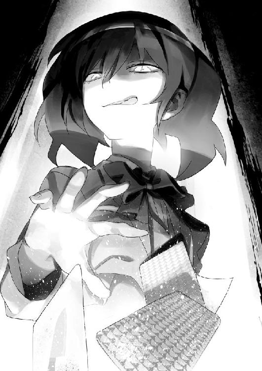
＊
クラスの誰かがゴールを決めたらしく、グラウンドの遠くから大きな歓声が聞こえてきた。
それとほぼ同時に、スパッツの裾を軽く指で直して、僕の話をじっと聞いていた宮越さんが顔を上げた。
「ふうん。じゃあ、残り六日間、ゲームで生き残るか、あなたの謎解き──《包丁》が当たらなければ、あの子の勝ちってことね」
「まあ、そういうことかな」
昨夜の話は、僕が理解の能力の秘密を暴きつつ、実際のネットゲームでも戦うという勝負として、宮越さんに説明した。
理解の持つカード──妹が犯人として疑われていることまで話すには、ちょっと僕の家庭事情が込み入り過ぎてる。当然、他の誰にも言うことはできない。「ちなみに、僕が負けたら彼女の下僕として、好きなときに彼女に奉公しなくちゃいけないらしい」
本当は、探偵の助手になれという話だったけど、実質似たようなものだ。
僕の話を聞いて、どんないきさつだか想像がついたのか、宮越さんはくすりと小さな笑みをこぼした。
「それはまたご愁傷様ね。ちなみに、あなたが勝ったらどうなるの？」
「バイト代百万円プレゼントらしいよ」
ふうん、と宮越さんが腰と顎に手の甲を当てて数秒。
「困ってる？」
僕の顔色をうかがいながら、悪戯っぽい笑顔を見せる。
「割と死ぬほど」
「ＯＫ、分かったわ。正直、その何とかゲームに関してもちょっと興味あったし、協力してあげる。少しは役に立てると思うわ」
「悪いね」
《探偵殺人ゲーム》に興味がなさそうだったのは、僕の錯覚だったのだろうか？ とも思ったが、この際成功確率が一パーセントでも上がってくれた方がいいので、協力してもらうことにする。
「ううん、いいのよ。どうせ暇だし。それに、こう見えても推理ものは得意なのよね」
「あんまりは無理しなくていいよ、初めてなんだし」
それに、《探偵殺人ゲーム》では、その発想は危険だ。あの子が僕の知ってる《探偵Ｒ》そのものなら、むしろ推理なんて真似は破滅を招く。
なぜなら、《探偵殺人ゲーム》の本質は、真実を知ることではなく、騙ること。他人を悪だと見立てて、自分の罪を覆い隠すことなのだから。
「ネットゲームでの協力方法は後で聞くとして、あの子の超能力もそれとなく探ってみた方がよさそうね」
むう、宮越さんが変にやる気を出している。こういうときの彼女は空回りしやすいので逆にちょっと不安だ。
「あの、本当に無理しなくていいから。なるべくネットゲームの方だけで協力してくれれば」
「分かってるわよ、足はつかないように、ってことでしょ？」
「できればね」
まあ、実際に足がつかないなんてことは無理だと思う。理解が月見月家の一族なら、どこに監視が潜んでいるか分かったもんじゃないからだ。下手に現実の理解のことまでかぎ回ろうなんてしようとしたら、確実にばれるだろう。
「にしても変なネーミングよね、《探偵殺人ゲーム》って」
「そうかな？」
「そうよ、だって、探偵を殺してるか、探偵が殺してるみたいに聞こえるじゃない。そんなの、推理ゲームじゃ反則だわ。掟破りよ」
まあ、その言い分も分からなくもないけど。
「......でも、実際は違うよね？」
「え？」
僕の言葉に、宮越さんが首を傾げる。
「お話やゲームなら、きっちり犯人と探偵が決まってて、それぞれが正義と悪だって分かる。でも、実際にはそこに至るまでのいろんな事情があったり、誤解があったりして、そうだとも限らない」
「............」
「悪者じゃない人が捕まったり、悪者が捕まらなかったりする。誰かの書いた記事や噂の印象だけから、僕たちは真実をつかもうとする。でも、そのほとんどは、おそらく正しくない。いや、自分たちが見たものですら、自分の中で好みに変換される。つまり──」
僕たちはあらゆる噓の中で、真実を見繕って生きている。
「......急に難しいこと言い出すわね？ つまり、殺人鬼が探偵を騙るようなことが、現実だということ？」
「たぶん、このゲームの本質は、そういう意味なんだと思う」
知らない人間ばかりの無人島に閉じこめられ、死の恐怖と、いつ刃を向けてくるか分からない他人に怯えながら、犯人を捏造して正義を騙る、究極の自己正当ゲーム。
宮越さんは僕の話を神妙に聞きながら、腕を組んで数秒後、突然ぷっと噴き出した。
「ふふっ、都築君って、思ったより詩人なのね」
「そうかなあ」
そういわれると、さすがに顔に血が集まってくる。
「うん。普通そのゲームのタイトルから、そこまで深読みしないわよ」
「そっか」
なんだか急に、僕の胸のうちが冷めていった。
「それじゃ、あたしのアシストで正解できたら、夕食でも奢ってもらうからね」
「本当に......無茶はしないようにね」
何度も釘を刺しておいたのは、宮越さんは慎重だが、一度勢いがつくと調子に乗りやすいからだ。
ネットゲームでも現実でもそうだが、理解を深追いして、逆襲を受けるのではないかと危惧してしまう。もし理解が、ネット上と同じ性格なら、自分に楯突く人間には、容赦しないから。
「心配してくれてありがと、あなたも何かつかんだら、教えてね」
得意げな微笑みを残して、宮越さんは体育館の方に駆けていった。
「............」
本当はこんなこと、宮越さんには関わらせない方がいいんだろうけど。
正直、かなり参っていた。理解そのものについてもそうだけど。僕と遥香の過去がほじくり返されているという事実について。
再びグラウンドから小さな歓声が上がったが、僕の視線は木陰の斑模様から動かない。
青空と春先の温かい日差しの下、僕は何か不安で空恐ろしいものを感じていた。
そして、僕の胸が静かに、ちくりと針のような痛みを帯びた。
＊
保健室で爆睡していたらしい理解と、午後の授業を受け、やがて放課後がきた。
弛緩した空気と喧噪、そしてある人物から逃げるように教室を抜け出すと、周囲に人がいなくなった下駄箱の付近で、理解が僕の背中を叩いてきた。
「さてと、俺様と君が久々にネットの《探偵殺人ゲーム》に参加するわけだが」
「分かってるよ、昔のプレイヤー名は伏せておかないと、意味がない」
今回においては、僕と理解の一騎打ちだが、ゲーム自体は他のプレイヤーも参加するため、下手な注目を浴びて狙われないためだ。
「で、ネットゲームは帰ってからできるけど、いつ頃するの？」
時間を聞いておきたかったのは、理解に内緒で、宮越さんも今回の《探偵殺人ゲーム》に協力してくれることになっているからだ。もっとも、ビギナーである宮越さんは、戦力としてはあまり期待できないから、僕が指示を出して動いてもらう。
遥香が犯人ということはあり得ないが、危険を避けられるなら、それに越したことはない。
「ふふ、ゲームは深夜で十分だよ。俺様たちは、妹ちゃんたちの部活が終わる時間まで、少し外でもブラブラしてるとしようか」
そう言って、車椅子の肘掛けの設定をいじって、理解は僕の手にハンドルを預けてきた。
「部活が終わるまで、か......」
ため息が漏れる。やはり、遥香たちを尾行することに、間違いないようだった。
＊
校舎を出て、校門の近くにさしかかると、赤々とした西日が僕らの影を引き伸ばしていた。
礼新高校は、部活もそれなりに力が入っているから、僕のようにマイナー文化部に所属しているようなヤツは基本的に孤独だが、そんな僕にも、よく帰路を共にする生徒が二人いる。一人は宮越さん、そして、もうひとりは──。
「おーっす魔女。今日も元気かなっ？ この前頼んだ宿題できてるっ？」
背後から寄ってきたのは、三つの影。その中心から、むせ返るような強い香水の匂いが漂ってくる。なるべく避けたかったが、ついに遭遇してしまった。
よく分からない名前で僕を呼んだのは、隣のＡ組にいる木崎キリナさんだった。彼女は親しい友人を『っち』とつけて呼ぶので、僕の場合なんというか、そういうあだ名の本質を見失ったような呼び名にすり替わったのだ。
ルックス、家柄、教師ウケと、トータルバランスはそれなりに優れている少女だが、それに相応しいだけの傲慢さも持ち合わせているため、非常に扱いに困る人でもある。
ついでに、僕を玩具にするのが大好きで、しきりに家に誘ったり、合コンに連れて行ったりしようとしてくる。
彼女の親がお金持ちで、学園に結構な寄付をしていることもあってか、男女学年問わず、ほとんどの人間が彼女の言うことには逆らえないことから、その名字にちなんで、『お妃様』と陰で呼ばれている。
彼女の男好きは有名で、ちょっとでも気に入らないととっかえひっかえしているようなので、総合力のわりに、男子からの評価はあまり高くない。
よく手入れをされたウェーブのかかったセミロングの髪をたなびかせて、彼女は僕に近づいてくる。
「もーさっきから探してたんだよ！ さ、一緒に帰ろっ？ テストも近いし、また勉強教えてよっ。ほら、コトワックスにも新しいお店できたじゃんか。今日はね、隣のガッコの生徒たちと遊ぶ予定なの、もちろん魔女も来るよねっ!?」
屈託のない笑みを浮かべて、機関銃のごとくまくし立てる木崎さん。
ちなみにコトワックスとは、ボーリング場から銭湯まである、近所に新しくできた総合アミューズメントパークのことだ。僕がひとりで行くことはあまりない。
「そーそー、都築君がいないと、盛り上がんなくてさー」
木崎さんの隣にいるのは、同級生の月島さんと、立脇さん。なんでも、中学からのよしみということで、常に木崎さんの両隣にいるため、これまた左大臣、右大臣と本人達のあずかり知らぬところで呼ばれている。
彼女ら三人は、自分のクラスはおろか、学校内で通じるある種の権力のようなものを持っていて、昼休みなどにちょくちょくうちのクラスに乗り込んできては、変な騒ぎを起こして、僕と宮越さんの頭を悩ませている。
ガキ大将の上位版と言ってもいいかもしれない。主に迷惑な部分だけレベル高いけど。
「んで、もういいんでしょ？ その変なヤツの面倒を見るのって」
ちらりと隣の理解を見ながら、木崎さんはさらっと暴言を吐いた。
彼女の可愛らしい顔に、大抵の男が気と鼻の下を緩ませるのは最初だけだ。
機嫌がいいときは羽振りも良く鷹揚だが、地味に言動がキツく、機嫌が悪くなるとすぐ攻撃的になる。それも、攻撃の仕方に女性特有の陰険さというか、容赦のなさがある。
彼女たちのイジメを受けて不登校になった少女もいる。学校はそのことに関与しない。調べもしない。体裁もあるし、達也には及ばないものの、彼女の家が大きいと知っているからだ。
「魔女も大変だねっ、委員長ってのはさ。もうその子は先生にでも任しとけばいいじゃん」
「ほら、行こうよー。初君がいないと盛り上がんないんだよー。色々悩み相談に乗ってよ」
仕方ない、ここは適当に相手をして──。
「黙れよゴミども」
そう思った矢先、目の前で空気が揺れた。
「俺様はれーくんと大事な話があるんだ。お前らみてーなクズの相手をしてる暇はねーんだよ。とっとと失せろ」
ぴたりと、今まで笑顔を浮かべていた木崎さんの表情が固まる。さすがに同じクラスじゃないから、理解のことを噂で聞いていても、多少面食らったらしい。
だがもちろん、このままで終わるお妃様じゃなかった。
「あんたね、調子コイてんじゃないわよ。年上だかなんだか知らないけど、病み上がりだからって甘く見てればつけ上がって」
無造作に理解の胸倉をつかんで、車椅子から腰を浮かせるくらいに引っ張り上げる。
「くくく、化粧はぶ厚いくせに、化けの皮が剝がれるのは早えーんだな。放せよカス、ここは一階の職員室から丸見えだぞ？」
だが理解も邪悪な笑みを浮かべてるだけで、全く動じていない。
息の詰まるような十数秒が過ぎて、ようやく木崎さんの指が解かれた。
「ったく！ あんたいきなりしゃしゃり出てきて、魔女のなんなわけ？」
「れーくん。そろそろ行こうぜ。バカと話してるとこっちの頭までおかしくなりそうだ」
「いるわよね、こういうどうしようもないガキ。そんなカッコだからって、優しくされるのが当たり前だと勘違いしてるの」
腹の虫が治まらないのか、木崎さんは、背を向ける理解に追い打ちをかける。
「あんたみたいなのはね、大人しく道の端っこを目障りになんないように歩いてりゃいいのよ。それを偉そうな顔して......」
「聞いたかれーくん。俺様が偉そうだとさ。偉そうだと？ はっ。家柄と金で人望を買えると思ってるクズの分際で、偉そうなんて寝言をほざきやがるとはなぁ。笑っちまうぜ」
「......っ！」
木崎さんの顔つきが豹変した。僕ですら両手で数えるほどしか見たことのない表情。
まずい！ これ以上ここにいては、本気で血を見ることになる。
「ごめん木崎さん。ちょっとこの子を家まで送らないといけないから、また今度、埋め合わせはするから」
理解の車椅子を押して、とりあえず逃げるようにその場を去る。
危なかった。本気で怒った木崎さんは、学校が近かろうと人目がつこうと、やるときはやる。
「覚えてなさいよ？」
冷ややかな声が、逃げ去る僕のうなじを撫でた。
しかし、何故だろう？
急いで校門の外から離れながら、僕は理解の言葉に違和感を覚えていた。
どうして、初対面の理解が、木崎さんがお金持ちだと分かったんだろうか、と。
＊
学校から離れると、理解の指示に従って電車に乗り、隣町へと移動した。
「しかし、れーくん。君は随分と人がいいようだな？」
見覚えのある、薄闇に覆われた道路沿いを歩いていると、ふと理解がそんなことを呟いた。
「何がさ？」
「あんなカス相手に、媚びたふりしてやるなんてさ」
古臭さの残る町並みを眺めながら、ケタケタと理解が笑う。
「別に、そういう訳じゃ......。一応、声をかけられるから、付き合いを......」
「ねーな」
僕の言葉が、カッと見開いた理解の視線に遮られた。
「いくらなんでも、それはねーよ、れーくん。俺様は君と会ってまだ二日目だが、君にとってあの化粧女は、相当ストレスを感じるタイプってことくらいは余裕で分かる」
「............」
散々僕のストレス増量に貢献している理解に言われるのは癪だけど、それは事実だ。
確かに僕は、木崎さんが苦手だった。
「昨日、君の部屋をざっと見てみたが、女向けの雑誌や香水もあったな？ ちょっと銘柄を調べてみたが、あの化粧女が使っているものと匂いが同じだ。開封もされてなかったところをみると、君が使うためじゃない。大方、あの女にでももらったんだろ？ 半年そこそこくらいの付き合いってところか？」
「まあね......」
確かに木崎さんの父親は、有名な化粧品メーカーの重役だ。その影響か、彼女も独特といえる匂いの香水を使っている。普通に買えば割と値の張る代物で、匂いも特徴的な──。
ひょっとして、理解はあの香水で、木崎さんがお金持ちだと判断したのだろうか？
「それにしても、君も人が良過ぎだなあ？ あの女の太鼓持ちをするために、わざわざ趣味を合わせてやってるんだからなあ」
理解の高笑いの傍で、僕の頭は冷静だった。
「ねえ理解。君は、噓をついたことがある？」
小馬鹿にされ、咄嗟に僕の口から出てきた反論は、質問だった。
「愚問だな、れーくん」
分かってる。その通りだ。それは、噓と猜疑の《探偵殺人ゲーム》を制して来た理解に対しては、それ以外の何ものでもない。だが、それでも、聞かなければならないことがあった。
「強ければ、君のように攻めるために噓をつける。ハッタリや脅し、時には、人心掌握なんかにも。でも僕は弱い、自分を守るために噓をつく」
「............」
「強ければ、噓をつかなくても生きていけるかもしれない、でも......」
どうしても、聞いておきたいことだった。
「弱くて噓もつけない人間は......どうしたらいいのかな？」
「ふふ......、君のお父さんのことかな、それは？」
理解が嘲弄の笑みを見せる。僕は答えない。
「さて、ついたぞ、れーくん」
不意に理解が車椅子を止め、天を仰いだ。
「ここは......」
塔のような廃ビルが、月明かりの下に聳え立っていた。
間違いない。二年前、社宅近くのここで、確かに僕の父さんが死んだ。
この十二階建て、高さ三十六メートルの非常階段から、真っ逆さまの飛び降り自殺だ。今でも取り壊されてはいないが、さすがに出入り口は完全に封鎖されている。
父さんは、真面目で不器用な人だった。押しに弱い人だった。気苦労が多くて、でも、だからこそ優しい人だった。
致命的な亀裂が入ったのはいつからだろう。父さんの優しさにつけ込んで騙し、会社の情報を引き抜いた上で借金をおっかぶせた父さんの友人が、姿を消した時からじゃなかったか。
父さんの友人はそのとき、いわゆる産業スパイの片棒を担いでいたのだ。
幸い、母さんもそこそこ有名なデザイナーという立場を得ていたし、騙されたということもあって、急に家を追い出されるということはなかった。が、それでも僕らの生活水準は、一気に低下して。私立校に通っていた遥香の授業料も危うかった。
その後、母さんがデザイナーとして売れ始めてからも、苦しい生活は続いていた。父さんは十年来の信頼していた友人に騙されたことと、会社に多大な迷惑をかけたこと、一家がいきなり大量の借金を背負ってしまったことに、深いショックと責任を感じていた。
そしてある日、自宅を火事にしかける事件を起こしてしまい、母さんからも酷く嫌われてしまう。やがて人に怯えるようになり、会社の近くで自殺を図った。
同僚が見つけてくれて命を取り留めたものの、後遺症を残して、片足が少し麻痺した。
そして、精神科病院への入退院を繰り返しながら神経をさらにすり減らし、最期の時を迎えた。
思い出しても胸が痛む。優しかった父さん。
僕は、答えが知りたかった。騙されて、噓がつけなかった父さんが死ななくてはならなかった理由を......。
「れーくん、その答えは簡単だ。実に下らねえ問題だよ」
僕が長考している間に、理解が僕に笑顔を向けていた。
「死ぬべきだよ、れーくん。そんな間の抜けたヤツは、死んでしかるべきだ」
せせら笑いを浮かべて、僕の瞳を覗き込む。
「自ら命を断ったというのは、その証明に過ぎない。れーくん、何故恐竜は死んで、ネズミは生き残っている？ 負けたからだ。人が作り上げた社会という世界で、敗北したヤツは人間やめるか、生きてちゃいけねえのさ」
「それが、君の答えか......」
「くくく、期待してたのと違ったかな？」
「......いや」
実のところ。僕はほっとしていた。
もし理解が、『そんなことないよ』などと言ったら、余計に信じられなかっただろうから。
そして、そう言ってくれなかったら、僕は......。
少しだけ胸を撫で下ろす。胸の奥に生まれていた、小さな痛みが引いていく。
「まずはおさらいといこうか？ 月見月家が調べ上げた、この事件の顚末についてだ」
そう前置きして、滔々と理解は語り始めた。
「あの晩の事件。退院したお父さんと一家団欒のあと、お母さんとお父さんがまず買い物に出かけた。その後、なかなか帰ってこない二人を心配して、君が家を出た。それと時を同じくして、君のお父さんもお母さんの前から、ひっそりと姿を消している。つまり、全員がバラけた時点で、誰にもアリバイはなかったことになる」
そう言って、理解は廃ビルを仰ぎ見る。
廃ビルの周囲は相当に暗い、これは当時も同じだった。だから、足の悪い父さんが、母さんがちょっと目を離した隙にここに辿り着き、上階まで行けたというのは、確かに予想できなくてもしょうがないとは思う。
「しかし、君のお母さんが、消えたお父さんの行方を探していた姿を、当時行方を尋ねられた店員が証言している。お父さんの死亡時の激突音を近隣住人が聞いたとき、お母さんは時間的に現場には立ち会っていなかった。何より生命保険が切れていたんだよ。この事件の数ヶ月も前にな」
この辺は、確かに正確な事実だ。
「借金を背負ってるのに、今回は保険自体が無し。お父さんは人がいい性格だったから、怨恨の線もなし。借金取りの方々も、別にくたびれたおっさんの死体なんか欲しくもねえだろうし、殺される理由がねえ」
理解の視線が、僕を絡め取る。
「さらに、お父さんは足が悪かった。自殺未遂の後遺症で片足が少しばかり麻痺、杖を使わなければロクに歩けない状況だった。案の定、廃ビルの高層から君のお父さんの杖が見つかり、他人の指紋も無し。階段に靴の跡もあった。とまあ、ここまでモノが揃うと、もう他殺と疑う方がめんどくさくなってくる時期だ」
「だろうね......」
ここまでは、僕が見知っている情報とほぼと同じだ。
「そして、一応は家族のアリバイ。その他の人間が、お父さんが飛ぶ瞬間に誰も立ちあってなかったことを確認して、おしまいだ」
「............」
「どうだ。もうカタされてるし、証拠も残っちゃいねえだろうが、俺様たちも昇ってみないか？ さぞかし絶景だろうぜ」
「......遠慮しておくよ」
さすがに、そんな気分にはなれないし、高いところにも昇りたくない。
「そうかい？ ま、いいや」
気のせいだろうか、何か、理解の目の奥底が、チカッと光ったような気がした。
「............」
「そして、君は、お父さんを見つけられずに一度家に戻り、妹ちゃんに帰宅していない確認をとった後、再び探しに行った。すると、お父さんは既に地面で死んでいた......いや、落ちる途中を見たんだっけか？ 君の場合」
「いや、見なかった......」
「本当に？」
「ああ......」
じいっと、理解が僕の瞳を覗き込む。
「そうか。そして、君が暗がりの中でお父さんの死体を見つけ、呆然と立ちつくしている所にお母さんが現われ、恐る恐る死体を確認、動揺しつつも一一〇番通報して、警察を呼んだ」
「............」
「そして、妹ちゃんは、最後までひとり部屋にいた。これであってるか？」
「そうだね......」
僕が頷くと、理解がじっくりと僕の目を見つめた。
「本当にあってるかい？ 君の妹ちゃんに関わる問題だぜ。時間関係、前後の話。本当に間違ってないか？」
「......ああ」
もう一度頷くと、理解は一度目を逸らしてから、僕に向き直って微笑んだ。
「ではそろそろ行こうか、君の妹ちゃんをストーキングしに」
＊
僕と理解は校舎に戻り、壁際に隠れてターゲットの様子をうかがっていた。
午後八時過ぎ、完全に日は落ちて闇。放課後の部活の後に、妹の遥香と、その恋人である達也の二人の後をつける算段だった。
探偵。僕のように、その実態をロクに知らない人間でも、基本は尾行だということくらいは想像がつく。
遥香はバスケ部のマネージャーだから、この時間まで残っていても何も不自然はない。
しかし、それはいいんだけど。むしろ、不自然なのは。
「帰るの早いな......」
僕たちが暇つぶしを考えている間に体育館は整備され、部員は部室に引き上げていった。
部活の練習は、普段の遥香の帰宅時間より、実質二時間近くも前に終わっていた。
「時間のズレは、夜遊びの口実か。君の妹ちゃんもなかなかやるな」
「............」
意外と遊んでるんだなあ。ちょっとショックだ。
「くくくく。ちょっぴり知りたくない家族の秘密を知っちまったな、れーくん。ま、気を落とすなよ、君には俺様がいるじゃねえか」
「あー......うんそうだね」
いいリアクションを返せないまま、僕と理解は、二人を追って学校を出る。商店街のアーケードとコトワックスの方に向かっていく二人を見守る。二人が恋人同士なのは、理解も当然知っているだろう。ここまでは、理解の能力を使う対象の絞り込みとしても、僕が遥香の擁護をする理由探しとしても、まあ妥当ともいえる展開といえる。
ある一点の疑問を除けば──。
「で、尾行ってどうするのさ？」
「どう、とはなんだよ？ れーくん」
真顔で返されて、僕は軽く眩暈を起こす。
「客観的にものを見ようよ！ 病院の中庭でもないのに、僕たち二人は目立ち過ぎる！」
おまけに理解はといえば、制服姿にミスマッチの中折れ帽子だし、隠れる気があるのかすら怪しい。
「それもそうだな。だが、それもまたいい訓練になる。試しに俺様を押してつけてみろ」
「むちゃくちゃ言うなあ......」
探偵どころか、片思いの女の子ひとりつけ回したことのない僕に、この子は何を期待しているというのか。
「基本は、相手から見えない距離だ。さ、がんばれよ、れーくん」
実に楽しげに理解が僕の胸を叩く。僕はため息をつきつつ、ゆっくりと車椅子を押し始めた。
＊
口より早く、僕の全身が限界を宣言した。
「ったく貧弱だなあ、れーくんは。ま、そこが可愛いんだけどさ」
「もう、ダメだ......」
コトワックスの人ごみの中を尾行し続けて十五分。僕は休憩所のソファーに座って、ぜいぜいと喘いでいた。
想像以上にきつかった。
幸いなことに、遥香と達也はスローペースで、僕のへたくそな追跡に気づいたような素振りはなかった。しかし、僕ひとりでだってしんどいのに、車椅子の理解まで連れて尾行するのは、尋常じゃない難易度だ。大体、見つかったらどう言い訳を──。
「って、理解！ そんなことよりさ！」
「何だよ？」
「あのさ、今気づいたけど。普通は尾行って変装した方がいいんじゃないの？」
ていうか、よく考えたら、見つからないように視界ぎりぎりまで距離を取ろうとするからまずいんだ。変装しておけば、最低限その危険からは逃れられるはず──なのに。
「そこに気がつくとは、さすがれーくんだな」
にっこりと笑みを浮かべて、理解は人をバカにしたようなことを言った。
「よく考えたら、一番始めに考えなきゃいけないことじゃないの......？」
「本来はな。まあ、変装するのはめんどいから、今回はナシでいこう。幸い顔見知りだから、誤魔化しはいくらでも利く」
「............」
やる気あるんだろうか？ ますます理解が探偵であることが信用できなくなった。
ついでに、今回の依頼を本気で解決する気があるかどうかも。
「ていうか飽きたな。やはり平凡な他人の情事を見るほど、つまらんものはないぜ。腹も減ってきたし、買い物でもして帰ろうぜ」
「どこまで冗談で、どこまで本気だか分かんなくなってきたよ。探偵って忍耐力が基本じゃないの？ 張り込みとかさ」
僕のツッコミに理解はにたりと笑みを返す。
「せっかちだなあ、れーくん。ゲームはまだ始まったばかりだぜ？ 今回はここまででよしとしよう。いずれ俺様が本物の尾行テクニックをみせてやるよ。ターゲットの前を歩いててもつけられるってことすら、君は知らねえだろ？」
「まあ、見たいような......見たくないような」
本気を出すということは、どういう意味なんだろう。
正直、犯人を実際に殺すということも、冗談であってくれればいいのだけど。
理解が《スレイプニール号改》の右肘掛けの液晶に指を置くと、じわりとモニターにボタンが映る。指紋認証のようだ。そして、なにやら高速で画面をタイプし、左肘掛けの半球状のコントローラーに手を置いた。
「何してるの、それ？」
「れーくんのために、自力で帰ろうとしてるんじゃねえか」
どうやら内部動力に切り替えたらしい。そういえば、わざわざ僕が押して尾行する必要なんて、最初からなかったじゃないか......。
「さあ、とっとと帰ろうか。今日のご飯は何にするんだ？ れーくん」
悪気の欠片もない理解の笑顔を見て、どっと疲れが押し寄せてきた。
＊
閉店間際のスーパーで買い物して、僕たちは家についた。
が、入ろうとアパートの鍵をポケットから取り出したとき、僕の手が止まった。
「って、何これ？」
よく見れば、妙な段ボール箱が玄関の前にあった。軽くビニール紐で梱包されているくらいで、宛先も何も貼られていない。
「ああ、やっと届いたか」
と、理解が車椅子の肘掛けからナイフを引き抜いて、紐に刃を当てる。
その動作があまりにスムーズなのでびっくりした。本当に何でもついてるマシンだ。
「俺様の着替えだよ。一日分しか持ってきてなかったからな、これでしばらく安心だ」
「あっそう......って、ホテルとらないの？ ホテルの方がいいって絶対！」
遠回しに帰って欲しいことを告げたが、僕の主張は無視される。段ボールの中身は、二つのボストンバッグだった。居間に入ってひとつ目を開けると、まずは大量の女の子ものの衣類が姿を見せた。
「ふふふ、これでれーくんに俺様の艶姿を見せてやれるな」
「それはまあいいんだけど、もうひとつは何？」
「探偵七つ道具だ。やはりこれがないと始まらんな」
「七つ道具って......」
理解がもうひとつのバッグを開け、様々な小型機器をテーブルに並べ始める。タバコの箱程度のものから、消しゴムくらいのものまで、形は腕時計、ハンドバッグ、ヘッドフォン型まで、七つどころか、実に多種多様の機器があった。
「盗聴器と盗撮カメラだ。これなんかペン型だが、実際に書けるんだぞ。ほーら面白いだろう？」
「って、いきなり身も蓋もない道具だな！ もうちょっとレトロな気分だそうよ！」
七つ道具なんてネーミングのくせに、夢も希望もないアイテムだ。まさに名ばかりというに相応しい。
「うっせーなあ、探偵に手段なんてどーでもいーんだよ。結果さえでればな」
「そう思うなら尾行も真面目にやれよ！」
「ま、いいや。これをちょいと、妹ちゃんの部屋にしかけてやんよ。って、あれ......？」
勝手に遥香の部屋のドアノブを回そうとして、理解が動きを止めた。
開かないのは当たり前だ。
「何で、部屋のドアに鍵がかかってんだ？ まだ帰ってきてもねえのに」
理解が首を傾げる。確かに奇妙だが、言い訳は既に用意してある。
「ああ、それか。ちょっと妹は神経質でね。鍵をかけるように──」
「はっはーん、なるほどなあ。分かったぞ」
と、理解は一度頷いてから、いやらしい細目で僕を睨め付けてくる。
まさか、感づかれたか？ 僕と妹の秘密に。
「さては君、妹ちゃんのパンツでも盗んだな？ あの子も俺様の足下にも及ばねーけど、それなりに可愛いからな。がっかりだぜれーくん、全く、中高生男子の性欲には限りがないな。この変態が」
「いい加減に下ネタはやめろ！」
怒鳴りつけたものの、理解はこれっぽちも堪えた様子もなく、影のある笑顔で僕を見る。
「いいよいいよ、このことは黙っておいてやるからさ。我慢できなくなったら、俺様のパンツでも貸してやるよ。ただし目の前ですること、その方が楽しいから」
「何をだよ！ ていうか、分かってないし！ ただ、勝手に少女漫画を借りて戻すの忘れてたら、怒られただけだよ！ それ以来、鍵をかけるようになったの！」
「それだけで、鍵までわざわざつけるかねえ？ よく見ろよ」
しつこい。というより、まあ鍵に関してはそうかもしれない。
確かに、《一般家庭》では、それは異常なものだから。
「ご丁寧に、最初は普通のドアだったのを、わざわざ鍵付きノブに改造してやがる」
急に真面目くさって、理解が鍵穴を覗く。
「まあ、これをいつ付けたのかは知らないが、妹ちゃんがなんか秘密を隠していることは間違いないな。ちょっとばかり、怪しくなってきたぜ」
「で、どうするつもり？」
「そうだな。これを開けるのに手間はかからなそうだが......あいにく、もうすぐ時間だ」
「え......」
そう言って理解は、盗聴器類が入っていたバッグの中から、ノートパソコンを取り出す。そして、ケーブルを引っ張って、僕の家のネット回線と繫いだ。
「れーくん、君はもう忘れたのか？ もうすぐ深夜組のチャットが立つ」
「ああ、そうか」
ネットゲームの方の、本来の《探偵殺人ゲーム》の時間だ。
「ちょっとトイレに行ってくる」
理解がパソコンを起動させて着々と準備を進めている間、僕はこっそりと宮越さんにメールの準備をする。そして、使用するサーバーと時間を選んだところで、僕はポケットの中でメールの送信ボタンを押した。
『今から、始める。サーバーと時間は──』
もちろん、このゲームに宮越さんが参加するのは、僕にさりげなく協力して僕の生存率を上げるということだけで、協力して理解を負かそうとかいう魂胆ではない。お互い自分しか知りえない情報を共有し合うということは、思いのほか行動が大胆になり、隙が生まれやすい。
宮越さんは普通のプレイヤーとして振る舞い、後でプレイ時の動向を聞いて指示を出すことになっている。
幸いにも、理解が指定してきたサーバーは、誰でも参加できるタイプで一日型というものだ。
ゲーム内では、一昼夜がいくつかのフェイズに分けられ、数十分でゲーム中の一日が経過していくのだが、じっくり推理をしたい人向けに、現実の日数と同じ単位で、フェイズを行っていくタイプもある。
「さて、始まりだぞ。ルールは忘れてないだろうな」
「まさか」
相槌を打ちつつ、僕も自分のパソコンからゲームに参加するため、理解を置いて、居間から自室に向かう。
宮越さんに指示を送る意味でも、互いの挙動からプレイを見破られないためにも、理解と同室でプレイすることは避けたかったし、何より僕が《探偵殺人ゲーム》をやめて以来、居間にある父さんのパソコンに手を触れるのは何となく気が引けた。
無事指定のチャットにログインし、参加者を待っていると、次々にプレイヤーが登録されていき、チャットの空きが埋まっていく。
『プレイヤー７《紳士》が、ログインしました。プレイヤー８《めろめろ》が、ログインしました。プレイヤー９《煮魚》がログインしました......』
そして、あっという間に基本メンバーの十四名が登録された。
《煮魚》というのは宮越さんが決めたハンドルであるから、最初の目標は達成できた。
プレイヤーがログインして人数が揃うと、いよいよゲームが開始される。
それにしても、このゲームは変わってない。昔見た名前も結構ある。
『それでは、ゲームスタートです』
僕の目の前に、開始時のデータが閲覧される。
アイテムカードはスタート時に、最大所持量限界の四枚が配布される。アイテムは基本的に一度きりの使い捨てで、一晩に一枚のみ使用可能となっている。消費されない例外は、《狂気の殺人包丁》のみとなっている。
アイテムは有限で、昼間のフェイズで話し合いトレードするか、第一発見者になって、殺害されたプレイヤーのアイテムを入手するか、または自分が殺してアイテムを奪うかしか、入手する方法はない。
そうこうしているうちに、まずは自分の初期アイテムが表示される。
《チェーンロック》《チェーンロック》《探知機》《検死キット》
ふむ......。
チェーンが二枚、最高とは言い難いが、序盤としてはなかなか悪くない手札だ。
《チェーンロック》は、殺人鬼または一般人の《包丁》を一晩限りブロックできる最重要カードだ。殺されてしまっては、いくら犯人が分かっても元も子もない。
ある意味、現実の方で言うと、僕が今張っている遥香の防衛戦に似ているかもしれない。
《探知機》は、指定したプレイヤーの所持アイテムをランダムに一枚、判別することができる。つまり、《包丁》を持っていれば、犯人の可能性があるわけだ。
これもまた、理解の見ただけで犯人が分かると豪語している能力に、似ているかもしれない。
だが、《包丁》と《狂気の殺人包丁》が探知では区別できないので、これだけではまだ、犯人と断定することはできない。
《包丁》は、文字通り消費してプレイヤーを殺傷するカードで、このゲームの何よりの醍醐味といってもいい。ただし、対象プレイヤーが《チェーンロック》で、防御していた場合、殺せない上にカードを失う。
また《探知機》によって他人に発見されると、まずいことになる。《殺人包丁》つまり鬼の可能性もあるので、知られたら真っ先に殺しにかかられるからだ。
《狂気の殺人包丁》は、回数制限のない《包丁》カードでスタート時にランダムで一人に配布される。これを持つ人間には《マーダー属性》というものが付加される。この状態になると、プレイヤーの殺害に二晩連続で失敗した場合、発狂して死に至る。ちなみに、通常のプレイヤーが、《包丁》カードで誰かを殺害してもこの状態になるのだが、もちろん、《包丁》は消費アイテムなので、犯人当てにしくじったプレイヤーは、より窮地に立たされることになる。手持ちの《包丁》がなくなれば、殺し続けられないのだから、当然、発狂死のリスクも倍増する。
《包丁》で真犯人を殺害した場合は、《狂気の殺人包丁》は、確実に自分の手元にくるのだが、真犯人が発狂死した場合は、その後《殺人包丁》は、ランダムに別プレイヤーの元に渡る。
もうひとつ重要なのが、《監禁》というシステムだ。
これは、残存プレイヤーの多数決によって、一晩にひとり、犯人と思しき人間を選び、《地下室》に監禁するルールのことだ。監禁されると、そのプレイヤーは一切のカードを使用できない。つまり、アイテムが残っていなくても、うまく《殺人鬼》を特定して閉じ込めれば、無防備のところを殺害できるし、また、監禁対象が殺人鬼だった場合、二日連続で閉じ込めれば《発狂》させて殺すことができる。
他にも、アイテムをトレードできたり、殺害した人間からアイテムを奪ったり逆に遺棄したりと、細かいルールや定石をあげればきりがないのだが、基本的には自分以外の誰かを犯人扱いして多数決を取り、《地下室》に押し込めるパターンが主流となる。
何故なら、《地下室》に封じられた人間はカードを使えないので防御できないのだ。つまり十中八九《殺人鬼》はこのターゲットを殺しにかかる。少なくとも自分以外の誰かを監禁しておけば、安全性は比較的増す。また、《殺人鬼》も《チェーンロック》で防がれる心配がないので、安心して殺害することができる。
その理由づけは、《探知機》などで《包丁》を持っていると分かったからだとか、カード枚数がゼロでないからだとか、トレードに応じてくれないだとか様々だが。結局のところ情報は当人たちしか分からないので、全ては憶測の中で進められるのだ。もちろん、うまければ適当な作り話で押し通すこともできる。もっとも、使用されるアイテムの枚数などもカウントされていく上に、アイテム枚数の公開はプレイヤーの任意なので、あまりやりすぎると後半にボロが出て、噓を見破られてしまう。
基本は自分以外を犯人扱いして殺させること。その中でアイテムを使って防御しつつ、犯人を殺害して、《狂気の殺人包丁》のカードを奪い取ることだ。
《狂気の殺人包丁》が手に入った時点での残存プレイヤーの半数を殺害すれば、《狂気の殺人包丁》を所持するプレイヤーの強制勝利となるため、残りのプレイヤーは、自分の手に包丁が渡るまで、しっかりと本当の犯人を探り当てなければならない。
そして、最後まで生き残っていれば勝利となる。二人きりになると、《狂気の殺人包丁》を持っているプレイヤーの強制勝利となるため、あまり後手に回っている訳にもいかない。
さて、宮越さんはこのゲームに、どこまで食いつけるのだろうか。
僕はまあ、定石通りいくことにして、様子見の選択肢を取った。
誰かが適当に監禁しようと言い出すが、僕は情報がないからと中立を維持して無投票。残存メンバーの半数以上が投票しないと監禁できないため、初日は監禁できなかった。
最後に自分の部屋を《チェーンロック》で防御し、フェイズを終了した。
プレイが終わったのでブラウザを閉じ、デスクトップのパソコンの電源を落とす。
思ったより緊張していたのか、手のひらにじっとりと汗をかいていた。
「ところで今夜、俺様はここで寝ていいのか？」
数分後、同じくプレイを終えたらしい理解が、ノートパソコンを片手に僕の部屋にやってくると、開口一番にそう聞いてきた。
「あっちに客用のベッドがあるけど」
と、開け放たれたドアの向こうに見える、居間のソファーを指差してみる。
普通の子相手なら、『僕がソファーで寝るよ』なのだが、これ以上勝手に僕の部屋を荒らされてはたまらない。ぶっちゃけ、昨日は居間の床に、ふとんを敷いて寝かせた。
「れーくんのベッドがいいなあ」
ふふりと、微笑を浮かべてくる理解は、この場面だけ見れば篭絡されてしまいそうなほど可愛らしく見える。
「分かったよ。僕の部屋で寝ていいから、家捜ししないでね」
たぶん、約束は百パーセント守られないだろうけど。
「さすが、れーくんは優しいなあ。お礼に君の童貞をもらってやろうか？」
「絶対に断る。じゃ、おやすみ」
考えてみれば、探偵七つ道具が届いた今、僕の知らぬ間に、家の中を盗撮・盗聴器だらけにされても困る。僕の部屋だけだったら、まだ何とかカバーできるから。
「............」
理解を僕の部屋に閉じ込めて、ソファーに寝転がる。
「うわ......」
探偵七つ道具と、理解の脱ぎ捨てられた制服が、片付けもされずに僕の目の前に散らばっていた。
ていうか、下着まであるし......。しかも黒ですか。
「さすがに、洗濯までするのはまずいよなあ」
幸いというか不幸というか、彼女の衣類は、一週間以上もつ程度にはある。
僕はそれらを拾い上げながら、ひとつずつゆっくりとカバンに詰め戻していった。
夜明けと共に、僕の部屋で寝こけていた理解を起こし、朝食を作って着替えの用意まで手伝うという、助手どころか家政婦にでもなった気分で学校に向かう。
いつものように教室の扉を開けると、一風変わって奇妙な空気が満ちていた。
クラスのみんなが、僕たちを気にしていた昨日と違い、まるで僕や理解を意図的に気にしないようにしているようで。宮越さんですら、時折心配そうに、ちらり、ちらりと僕の方を眺めてくるだけだった。
針のむしろに座らされたような苦行の時間は放課後まで続き、帰る前に立ち寄った男子トイレで、僕は再び、偶然にも達也と会った。
正直、尾行までしている手前、顔を合わせるのが少々気まずかったのだが。
「や、調子はどうだい？」
いつも通りの挨拶をすると、達也は何故か焦っているような顔を見せた。
「おい初よ。お前は一体、何をやらかしたんだ？」
「何って何さ？」
学校の騒動で、僕が原因だった覚えはひとつもないので、その言われ方は酷く心外だったが。
「いやな、うちのお妃様がカンカンに怒ってるんだよ。一応、宮越のヤツが宥めに行ったけど、近いうちに、爆弾テロでも起こしそうな雰囲気だったぞ、ありゃ」
なるほど。何か静かなのが逆に怖いと思っていたら、木崎さんは、隣のクラスから理解を叩く準備を、着実に整えていたらしい。
攻撃には二つのタイプがある。本人を直接叩くのと、周囲から絡め取る方法だ。人目の多いところで明け透けな顔を見せない木崎さんは、大抵外堀から埋めていく。
そうでなくとも、理解はクラスにウケが悪いというのに、学園の権力者である木崎さんが、理解を嫌っているとアピールすれば、理解に近づけば同様に敵とみなされると、クラスのみんなも思うはずだ。そういうわけで、常に理解の隣にいる僕に対しての扱いも、ぞんざいにせざるを得なかったのだ。
なるほど、さっきの雰囲気の謎が、ようやく解けた。
「止める方法はない？」
「俺はまだ死にたくはないな」
と、達也は肩をすくめた。
木崎さんに正面きって意見を言える人間は、この学校には少ない。彼女と中学時代からのよしみである宮越さんと、同じクラスで金持ちの達也くらいなのだが、今回に至ってはそれも通用しないレベルに達しているらしい。
僕は返す言葉も思いつかず、達也と一緒にトイレを出た。
「あの子、なんか知らんけど、大丈夫か？」
「心配にゃあ及ばねえよ、色男」
「うわあっ！」
出たばかりのトイレのすぐ横に、いつのまにか理解が来ていた。いや、その隣に、頭を抱えた宮越さんもいる。珍しいツーショットだ。
「おいおい、お前ら二人して男子トイレの前で立ち聞きかよ。趣味悪いなあ」
「好きで来たんじゃないわよ、もう......！」
達也がおどけてみせると、宮越さんが大きく肩を落とした。
「この子、どうにかしてよ都築君。さっき、うちのクラスに木崎さんたちが来て。あたしが止めても聞かないどころか......。はあ......」
額に手を当てながら、大袈裟にため息をつく。
どうやら、先ほど木崎さんが僕を探して教室に来たとき、理解と顔を合わせてしまったらしい。もちろん険悪なムードになり、仲立ちを買って出た宮越さんの努力も空しく、話が更にこじれたとのことだった。
「分かってたことだけど、相変わらず無茶をしてくれるよなあ......」
「それより、どうするよ？ ちと面倒だぜ」
達也がいつになく真面目な顔を見せると、理解がいつもの笑みを僕に向けた。
「くくく、確かにこれ以上あんなカスのことに時間を割くのは無駄だな。喜べれーくん。あいつはいずれ、俺様が始末しといてやるよ」
何やら物騒なことを言って、達也に向き直った。
「それよりそこの色男、ちょっと顔を貸せ」
「ん、なんだよ？」
「あのカスの交友関係でいくつか質問がある」
「ちょ、ちょっと！ 何を聞くつもりだよ」
遥香のことにしろ、木崎さんのことにしろ、これ以上のトラブルはごめんだった、が。
「れーくんは、ちょっと待っててくれよな」
引き留める間もなく、理解は車椅子を走らせて、廊下の向こうに達也を先導していく。
何を話すつもりだろう？ まさか、遥香が殺人の容疑者とか吹き込む気じゃ──。
「ふう。何のつもりか知らないけど、ちょうどいいわね」
不安に駆られて二人の後を追おうと思ったが、宮越さんに肩をつかまれてしまった。
「せっかくだから、今打ち合わせしましょ。あの子、いっつもあなたにべったりなんだもの、こういう時くらいしか、話す機会がないわ」
そう言われれば、僕から協力を頼んだ手前、無碍にはできない。
「そういえば昨日、宮越さんは、ちゃんと《探偵殺人ゲーム》には入れたみたいだけど。どう？ うまくやれそう？」
「なんとかね。それより、現実のあの子の能力は分かりそう？ なんか昨日は、デートみたいなことしてたみたいだけど」
「微妙かな？ 後、デートじゃないけど、今日もちょっと理解と出かける予定はあるかも」
「へえ、面白そうね。ちょっとあたしも一緒に行っていいかしら？」
「悪いけど、企業秘密だから」
さすがに宮越さんにも、遥香のことまで話すわけにはいかない。
「ふーん。どうせあたしはお邪魔虫ですよーだ」
ぷうっ、と頰を膨らませる宮越さんが可愛かった。
「ていうか、あなたも本当はあの子のこと、好きなんじゃないの？」
「ないよ、それは絶対に」
全力で否定しておく。
「本当かしら......。どうもあの子と一緒にいるときの方が、あなたは活き活きしてるように見えるんだけど？」
じと目の宮越さんを見ていると、ずきりと胸が軋む。続いて、きゅうっと心臓を直接締め付けられているような感覚がして、眩暈が襲ってくる。
「うっ、ぐ......」
「ちょ、ちょっとどうしたの？ 具合でも......」
まずい、顔に出てしまった。
慌てて無理やりに笑顔を作って、呼吸を整える。
「いや、最近心労で、ちょっとね」
理解の相手をするようになってから、疲れが増した。
「分かったわよ、しょうがないわね。あなたをからかうのはひとまずやめておいてあげる」
「できれば永久にやめてくれるとありがたいんだけど」
「それはできない約束ね」
ふふっと微笑んでみせる宮越さんも、立派なサディストだった。
「そういえばさ、都築君」
「何？」
「あの子の特殊能力、だっけ？ ちょっと思ったんだけどさ」
「ん、ああ......」
「復学初日、確か、あなたの教科書を速読してたわよね、あの子」
「あれ......？ よく見てたね、一番前の席なのに」
真面目の代名詞ともいえる宮越さんが、授業中に後方の僕らを振り返っていたことに、ちょっぴり驚く。ひょっとして、理解と僕のことが、気になってたのだろうか？
「い、いいじゃないの細かいことは。それより、その教科書の最終ページに、練習問題の答えが載ってるわよね？」
「あ......！」
はっとする。そういえば、理解はロクに教科書なんて見てないと思っていたが、まさか。
もし、あの時に全て暗記していたなら、あの一瞬で《答え》だけが出てきたことも頷ける。
「もしかして、あの子の特殊能力って。超記憶能力とかじゃないかしら？」
「............」
超記憶能力。
世界では、一瞬ものを見ただけで、複雑な文字や音、口述された言語を覚えてしまう希有な天才が何人も記録されている。
「ほら、探偵に必要なのって、現場とか発言とか手がかりを覚えていることだと思うし、もっとも、応用できなくちゃ意味ないと思うけど」
どうだろうか。その可能性はゼロではないだろうけど、そんな単純なものか？
「後は、寝てるふりして、鏡とかで黒板をこっそり見ていたとか、さ」
「ぷっ......。あはははは！」
「ちょっ！ 笑わないでよ。あたしは真面目に──」
「いやごめん。想像したら、結構シュールでさ。でも、鏡はないんじゃない？ 現代風なら、監視カメ......」
その時、はっとした。
鏡。そんなちゃちなものでなく、監視カメラを使用しているとしたら？
小型監視カメラを黒板が見えるように設置し、机に突っ伏して寝たふりをしながら受信した画像を見る。それなら可能ではないか？ あのハイテク車椅子と月見月の技術なら、そのくらいは簡単だ。
そういえば、理解は遥香の帰宅を言い当てたことがあった。あれもどこかの途中経路を撮影して、確認していたのでは──。
「ど、どうしたのよ急に黙っちゃって。あたし何か言った？」
「いや......」
あり得ないか。さすがに学校や通学路にまでそんなものを仕掛けていたとは考え辛い。
「おい、俺様のれーくんに何してるんだよ」
「うわあっ！」
慌てて背後を振り向くと、いつの間にか話を終えたらしい理解と達也が、そこにいた。
「び、びっくりさせないでよ！ っていうか......何よその、あなたの何とかって」
「れーくんは俺様の恋人だからな。当然の権利だ」
「また勝手に、そんなことを......」
宮越さんも呆れていた。
「おいおい、マジだったのかよ、可愛い恋人を大切にしろよ」
「達也まで茶化さないでくれ」
これ以上ややこしい話はごめんとばかりに、達也を手で制して、僕は続ける。
「ところで、何を話してたの？」
「まあ、ちょっとな......」
達也は、苦虫でも嚙み潰したような微妙な表情を浮かべて、窓の外に目を逸らした。
理解はといえば、両目を瞬かせて、珍しく小さなため息をついたりしている。
が、それを見ている僕の視線に気づくと、すぐにいつもの軽薄な笑みを浮かべて飛びかかってきた。
「何だ嫉妬か？ 安心しろよ。俺様は今んとこ、れーくん一筋だからな」
理解の細くて白い両腕が、僕の腕を絡め取る。
端から見れば微笑ましいのかもしれないが、僕自身は食虫植物にでも捕まえられた気分だ。
「だからさ......」
きりがない。反論すればするだけ無駄なので、もう打ち切ることにした。
「んじゃ、俺は部活に行ってくるからさ」
「ああ、じゃあね」
「あたしも、今日は帰るわね」
理解に何を言われたのか、達也が足早に踵を返した。宮越さんも僕に一度だけ目配せして、立ち去っていった。
「さてと、暇ができたな、れーくん」
「そうだね」
遥香と達也が部活を終えるまで、あと二時間強もある。
「それより、何を達也に吹き込んでたの？」
さりげなく理解に聞くと、ぐっと親指を立てて、眩しい笑顔を浮かべた。
「れーくんと俺様は、ラブラブだってことさ」
自然とため息が出そうになる。どうやら僕に話す気はさらさらないみたいだった。
「......そういやさ、僕たちが恋人を装う理由って、何かあったっけ？」
苦い顔で聞くと、理解が口元に弧を描く。
「分かってねえなあ、れーくん。化諜ってものを知らねえのか？」
「ばけちょう？」
「諜報の基本さ、れーくん。端的に言えば、ターゲットに近しい人間に成りすまして情報を得ることだ。会社なら社員、学校なら生徒、そして、友人や恋人もそうだ。近ければ近いほど情報を引き出しやすい。今回の妹ちゃんは女の子だし、もうあのセフレがいたから、兄である君の恋人というポジションが、今回の仕事に最も好都合でな」
勝手に達也の立場を変な位置に持って行くな。と、突っ込むのもめんどくさかった。
「そう思うなら、もっと常識人らしく振る舞って欲しかったよ......」
「そうか？ これでも俺様はれーくんのためを思って、控えめに行動しているんだがな」
「あ、いいや、この話はもう......。なんか長くなりそう」
初めから理解に分かってもらおうなんて、無駄だった。
「さて、本来ならば、部活終了の時間が決まっているとはいえ、ターゲットは常に張っていないといけないのだが、正直めんどうくせえ。というわけでもうひとつの方を攻略しにいくぞ」
その面倒くさいところを頑張るのが探偵じゃないのか？ と内心で突っ込みつつ、僕は顔を上げる。
「って、また別のところに行くの？」
「ああ、れーくんはここで見張っててもいいぞ。部活終了までは、まだまだあるからな。俺様はちょっとやることがある」
「僕も君についていくよ......」
「ふふふっ、そっか。やっぱり俺様の傍にいたいんだな」
理解を一人にしておきたくないのはその通りだが、理由は全然違う。
僕の目の届かないところで、何をしてるか分かったもんじゃないからだ。
「では、行こうか、れーくん」
左右を見回した後、僕は理解と共に移動を始める。宣戦布告をした木崎さんの姿が未だ見えないのが、逆に恐ろしい。
嵐の前の静けさでなければいいのだが。
＊
数十分後。買い物をしてからいったん自宅に戻ると、理解は遥香の部屋の前で、鍵穴をじっと覗き始めた。
針金、トンカチ、数種類の錠前と鍵、粘土、細めのレンチの先端を曲げたもの。
帰り道の途中のホームセンターで理解が見繕ってきた胡散臭い道具の数々が、テーブルの上にところ狭しと並んでいる。
「何をするつもりなの？」
「やっぱりそうだな、型は同じだ」
呟きつつ、遥香の部屋を守っている鍵穴に、手を伸ばす。
「まさか、それ......」
「ああ、まさかだよ。れーくん。記憶違いはないようだ。君の妹ちゃんも、あのホームセンターでこれを買ったみたいだな」
僕の覚えてる限り、理解は鍵穴にはほとんど触れてなかったはずだ。いつの間にここまで細かく、鍵を確認したんだろうか？
「うーむ、微妙に種類が違うなあ。鍵穴も改造してやがるのかなあ。あの色男が関わってるかもしんねえなあ」
ぼやきながら、理解は市販の鍵を差して捻り、差しては捻って試している。
「あのさ、マジに開ける気なの？ 遥香の部屋」
「君が後始末をしてくれるなら、チェーンソーかプラスチック爆弾でも用意したいところなんだがな、どうだ？」
「いい加減にしてくれ、としか」
「ちい、つまんねーなあ」
相変わらずの笑顔で、今度は先端を曲げた細めのレンチを、鍵穴に差しこみ始める。
「それにしても君のお母さんはいつ帰ってくるのかね？ 昨日の夜も物音すらしなかったが」
「月に、二、三回かな？ 色々忙しい人だから......」
「そこそこ有名なデザイナーだったらしいが？ ホテル暮らしというわけか？ いや、まだ、三十八だったか。なら、男のとこってこともあり得るよなあ」
「............」
「くくく、図星だろ？ 夫の死から早二年。忘れ形見の年頃の子供二人を放置して、全国を駆け巡るアーティスト、立ち直りの早いことで何よりだな」
「他人からは、そう見えるかもしれないけど......」
「実は傷ついている？ なるほどそう取れなくもないな。夫の死を忘れるために、仕事に没頭するようになった。ついでに母方のツテで、こんないい部屋まで借りられる」
もくもくと鍵穴を見つめながら、理解は楽しそうに作業を続けている。
「しかしそう考えると、君のお父さんは本当にクソの役にも立たなかったな。いや、むしろ足を引っ張るだけの存在だった。父親としての責任もロクに果たせず、さっさと人生というゲームから、脱落してしまった」
「......君が口にすることじゃないだろ？」
理解がこんなヤツだってことくらい百も承知だけど、さすがにイラッときた。
「へえ？ じゃあ教えてくれないか？ れーくんにとっての、お父さんのいいところをさ」
父さんのことを、少しだけ思い出す。
そして、すぐに答えを出した。
「君みたいな人に父さんの良さは、永遠に分からないよ」
「あはっ、怒った？ 怒ったかなあ、れーくん」
くすくすと、悪びれもせず、楽しそうな笑顔。
「まあいいさ、君はそれでいい。君はお父さんなんかと違って利口そうだからな。俺様の助手として、せいぜいうまくやってくれないと......っと、こんなもんか」
握っていた細めのレンチを鍵穴から引き抜き、僕に差し出して、理解が額を拭う。
「もう開いたの？ さすがだね」
「......飽きた、続きは君がやれ」
「諦め早っ!? まだ五分くらいしかやってないでしょ！」
理解が僕の突っ込みを無視しつつ、ドアノブから離れてソファーに身を投げ出すと、無造作に制服を脱ぎ始める。
「ちょっ？ しかも何いきなり脱ぎ始めてるんだよ！」
下半身が不自由とは思えないほどの早さで、理解は服を脱ぎきってしまう。滑らかな白い柔肌と、黒の飾り気のない下着が露になっていた。
綺麗な肌だ。目を逸らそうと思っても、なかなかこう、抗い難いものが。
「物忘れの早いヤツだな君は？ そんなことでは探偵にはなれねーぞ？」
「なりたくないよ！ そうじゃなくて、何してるんだよ！ お風呂場はあっち──」
「一緒に風呂か？ ふふふ、それも悪くねーな。だが、れーくん。君は自分の言葉にくらい、責任を持つべきだぜ」
答えつつ、理解は床に置かれた荷物、昨日届けられていた着替え入りのバッグを開ける。中から取り出したのは、もちろん。
「あ、そういうことか」
数秒後に、僕は理解の言葉の意味に気づく。昨日言っていた、制服だと尾行で見つかりやすいという話。月見月から私服が届いたということは。
「制服で目立つ必要もない、変装も自在、ということだ」
「それはいいけど、理解の車椅子は、どうにかならない？ それが一番特徴的なんだけど」
普通の車椅子でも目立つのに、《スレイプニール号改》は、大量のオプションのついた特別製だ。便利かもしれないが、尾行する上では、デメリットの方が大きそうだ。
「ふふふ、残念だが、こいつがないことにはどうしようもないな」
そう言って、理解はソファーの横のマシンを、ぽんぽんと叩いてみせた。
「ところで、その足って事故か何か？」
そういえば、車椅子の理由は聞いたことがなかった。
「知りたいか？」
「いや、それほどは」
素っ気なく言ったが、理解は勝手に語り始めた。
「下半身不随ではないよ、れーくん。俺様がロリっ子の頃、バイオレンスな腐れ親父から逃げ出そうとしたら、カナヅチで膝の骨をベキベキにやられてね。その後遺症で歩けなくなっちまったのさ」
いつもの笑みを浮かべて、理解は自分の膝下を撫で、次に額を指差した。
「ついでにいうなら顔面も、だ。文字通り顔の形が変わるまで殴られて整形手術しなけりゃ、今の三倍は可愛かったんだがな」
「............」
「どうだい、可哀想だろ？ 俺様は」
悲痛とはほど遠い明るい声で、理解は笑ってみせる。
でも、僕はその話と態度の節々から、何か違和感を覚えていた。
「......それにしては、君の足は綺麗過ぎたような？ いや、表面だけじゃなくて、骨が骨折の治癒で厚くなってる様子もないし。月見月の治療技術を使ったなら、立たせるくらいはできると思うけど？」
「へえ」
僕の言葉に、理解が感心したように目を丸くする。
おまけに、完全に動かなければ着替えにも手間取るはずだが、少しは動いていた。立って歩かないだけで足はちゃんと動かせている。昨日ベッドで理解が寝転んでいたときも確認済みだ。
「ふふ、なかなかやるな、れーくん。俺様の噓に、ちょっとは動揺するかと思ってたんだが」
そして、いつの間にか黒のキャミソール一枚に着替え終わっている。って、ちょっと。
「待て、なんだよその格好！ 余計目立つよ！ 全然忍ぶ気ないでしょ！」
「俺様のことより、君こそさっさと包丁カードを使え。ネトゲで生き残ってるだけで妹ちゃんを守れるかな？ 残りは四日だぜ？」
僕の《包丁カード》は、《理解の能力を当てること》と、《真犯人を当てること》だが、まだ、両方ともまともに当てられるほどの情報は集まっていない。
「それを言うなら、君のカードこそどうしたんだよ？ 犯人が一発で分かるらしいけど、結局誰も狙ってないじゃないか」
「くくく、目敏いな、れーくん。だが、俺様はもう使ったよ。さっき、早速ひとり調べてきた」
理解が、ぴっと例の《Killer》のカードを指で弾いてよこす。
カードにはマジックで《村上達也・はずれ》と、書かれてあった。
──と、いうことは。
「判定はシロだ。あの色男は、直接殺人はおろか、協力者としても関わっちゃいないよ。まあ、あいつと当時の妹ちゃんは、面識がなかったはずだから、当然っちゃ、当然だがな」
「例の特殊能力ってヤツで調べたの？」
「ああ。間違いないね。人間として底が浅いから、二、三分も話せば、だいたい分かる」
「......そうかい」
たかが二、三分で人生を見透かされた達也が気の毒でならない。
もっとも、どこまで理解の話が本気か分からない以上、具体的に何をされたかは達也に後で裏を取るしかないけれど。
とりあえず、犯人枠から外れてくれて良かったと、ほっとするべきなのか。
「さて、今日もそろそろ行こうか？ もう少しで、部活も終わりだ」
肘掛けの液晶に映った時刻を眺めて、理解が笑った。
＊
今日、達也と遥香が向かった先は、コトワックスの奥にある高級喫茶店だった。
警戒はしていなかったのか、距離を離した僕らの尾行に気づいた様子はなく、僕たちも店内まで、すんなりと後を追うことができた。
高級感のあるこげ茶色の内装。ケーキの値段が、他店の倍近いのが特徴だ。もちろん味も相応だが、やはり普段は注文どころか、店に入る気すら起きない。
「やはり金持ちだな、あの色男は。頼むメニューに惜しみがない」
「女の子とのデートだから、見栄を張ってるだけじゃないの？」
二人からは見えないように、壁越しに見えない位置に席を取った。距離自体もだいぶ離れているし、お客も多いから簡単には気づかないだろう。
その代わり、逆にこちらも会話が聞き取り辛い......っていうかむしろ。
「二人の注文、よく聞き取れるね。すごく遠い上に、雑音だらけなんだけど......」
「当たり前だ。この程度の騒ぎの中から会話を拾うくらい、わけねえ話だよ」
得意げにほとんどない胸を張り、人差し指で自分のこめかみを、こつんと叩いてみせる。
「意外だね。もっと盗聴器とか、テープレコーダーに頼るかと思ってたのに」
ふふふ......と、理解がかすかに笑い声を漏らす。
「盗聴器っても万能じゃねえんだよ。電波の具合によっちゃ拾えねえこともあるし、雑音にやられることもある。何より記録、傍受していることに安心して、生の声の空気や意味を履き違えたりする。要は集中力と訓練次第だ」
「へえ......」
いや、ほんのちょっとだけ、理解を見直したかも。
「ま、君は初心者だから無理はせずに、こっちもちゃんと使っておくんだな」
そう言って、小型のイヤホンのようなものを投げてくる。
反射的に受け取ってしまうが、これは......。
「何これ？」
「ん、何って受信用のイヤホンに決まってんだろ。さっき色男と二人きりの時に、盗聴器をくっつけてきたからな」
「結局使ってんのかよ!?」
油断も隙もないヤツだ。僕も家に帰ったら注意しなければ......。
「まあいいや......盗聴の件はさておき、本当に注文だけで、達也がお金持ちだって分かるの？」
「はっ......」
僕の問いかけを、理解は鼻で笑い飛ばした。
「ちょっとデータを見直してみれば分かることだ。今日は妹ちゃんや、あの色男の誕生日じゃない。ついでに何か祝いの日でもない。一年も付き合っているのにちょくちょくこんなところに来てたら、常人なら破産ものだぜ」
「そう思うなら、常人の僕のためにも注文を抑えてくれないかな？」
テーブルの上に所狭しと並べられた料理は、シーザーサラダにクラブハウスサンド、カルボナーラスパゲティ、クラムチャウダー、バナナパフェ、コーヒーフロート、全て理解の注文だ。
そして更に付け加えるならば、その皿の半分が、理解の手によって既に片付いている。
「ケチケチすんなよ、れーくん。金に糸目をつけてちゃ、いい調査はできねえぞ」
「ここで使うもんじゃないだろ！ しかも僕払いじゃないか！」
僕の突っ込みにも動じず、理解は料理を食べ続ける。そして、何故かドリンクのコーヒーフロートはアイスだけを食べて、残りはほとんど手付かずだった。
「あー食った食った。れーくん、残りのコーヒーは君が飲んでいいぞ」
「コーヒーは探偵の飲み物じゃないの？」
「苦いから、あんま好きじゃないんだ」
「............」
じゃあなんでフロートを頼んだんだよ、と突っ込むのもめんどくさい。たぶん、『コーヒーに浮いてるのが好きなんだ』みたいな益体もない答えが返ってくるだろうから。
「ん？ なんだ、ガッカリした顔をして。君もアイスが食いたかったのか？」
「......いらないよ」
「冷てーなあ、恋人同士を装わないといけないってのに、分かんねえヤツだな、君も」
「僕は君のことがちっとも分かんないけどね！ ......って」
慌てて腰を低くして、遠くの席から姿を隠す。確かによく通う店だろうが、このタイミングで、まさか、彼女までここにいるとは。
「ん？ どうした？ ターゲットはまだ座ってるぞ？」
「そうじゃなくて、その」
「ああ、あの化粧女のことか？」
途端に興味をなくしたように、理解は両目を閉じて背もたれに体を預けた。
「気づいてたの？」
木崎さん及び二人の側近と、他校の男女が、遥香たちとは逆方向の離れた席に座っていた。
だが、こっちは位置の関係上、遮るものがあまりないので、注意すれば気づかれてしまう。
「ああ、やたらやかましいし、香水くせえから一発だな。にしても、やはり男癖が悪いのは、間違いねえな」
にたりと、獲物を見つけたような獰猛な笑みを浮かべる。
確かに、僕が遠目に見ても、何かバカ騒ぎをしているのは明らかだった。
「でさあ、そいつがクソなわけよ。だから、近いうちにとっちめるから、その時はよろしくね」
あまりはっきりとは聞こえないが、なにやら不穏な会話をしていることは伝わってきた。
「ま、あんなアホに構ってる暇はねえな。それより、そろそろ追うぞ」
「ん、分かった......」
気づけば、僕が木崎さんたちに気を取られている間に、達也と遥香は席を立って、カウンターに向かっていた。
少しタイミングを遅らせて、僕らもそれを追う。店を出ると、暗がりのアーケードを通って、コトワックスの方に二人は向かっていた。いつぞやの尾行と違い、理解は自分で車椅子を操り、巧みな動きでつけ始める。
「そろそろお父さんの話でもしねえかなあ」
「どういうこと？ デート中に、死んだ父さんの話なんて、絶対にしないと思うけど」
僕の問いに、理解は薄目で微笑んだ。
「実はな。さっきあの色男に、ちょっと振ってやったんだよ。君の妹ちゃんが、過去に何か事件を起こしたかもしれないってことをな」
「なっ！ って、ちょっと待てよ。そんなこと言ったら、警戒されるんじゃ......」
僕の疑問に動じた様子もなく、理解は車椅子の肘掛けから、イヤホンを引っ張り出した。
「そうさせたんだよ、れーくん。探偵ってのはチマチマやってても、答えは出てこないこともある。手っ取り早くドロを吐かせるには、プレッシャーをかけるのもひとつの手なのさ」
「プレッシャーって......達也は犯人じゃないんじゃなかったの？ 君の能力では？」
「あいつに関しては、もちろん違うさ。だが、犯人の手がかりになることを何も知らないということじゃない。つまり......」
「つまり......？」
「もし、妹ちゃんの性格や行動に何か思い当たる節があるなら、反応を変えるかもしれない。れーくん、君もさっきのイヤホンをつけておけよ。ここからが本番だからな」
「本気......なのか？ 遥香を疑って」
まずい、遥香にはちょっとした問題がある。
もし、あのことを理解が知ったら、余計な推測を立てるのでは──。そこまで誤解をされるのは困る。こいつ、ふざけているかと思ったら。
「うっせえ静かにしろ。今傍受しているが、人目があるところでその話はしねえはずだ。問題は二人っきりになった瞬間だ、注意深く探れ」
人ごみに紛れた二つの背中が、見え辛くなる。
もしかして、理解は本気で調べる気なのか？
どうしよう......。もし、あの事実まで辿り着かれたら、僕は、全ての意味を失って。
「ああ、分かったよ......。あっぐ！」
「ん？ どうした、れーくん。具合でも悪いのか？」
暗闇と、七色のネオンの色。フラッシュバックが起こって、薄暗い廃ビルが見える。
しまった......。久しぶりに大波が来た。
強い痛み、いつもの発作だ。
しかし何も、こんな時に。
冷や汗と脂汗が同時に出る。自分の顔色が青に染まっていくのが、鏡を見なくても分かる。
「何でも、ない......。君は、先に行っててくれ」
「そうか、じゃあな、れーくん」
理解は僕のことなど気にも留めず、二人を追っていった。
何か妙なことをしでかさないか不安だったが、どうしようもなかった。
「ぐ、ああ......」
強烈な眩暈と吐き気。
くそ、昔のことを思い出したせいだ......。そうでなくとも、毎日危ういというのに。
ふらふらと不審者のような動きを繰り返しながら、僕はどうにか休憩所のコーナーにたどり着き、ミネラルウォーターを買った。
そして、服の内ポケットからピルケースを取り出して、中身の錠剤をミネラルウォーターで流し込んだ。
「っふう......」
効いてくるのはもうしばらく後だが、薬を飲んだという事実だけでもプラシーボ効果として役には立つ。
「病気かい？」
萎れた草花のように、しばし休憩所の椅子にもたれかかって胸を押さえていると、背後から、どこかで聞いたような声が聞こえてきた。
「いや、たいしたことはないんだけど──って、何で君がここに！」
「や、れーくん。元気そうで何よりだ」
振り返ると、さっき遥香たちを追ったはずの理解が目の前にいた。
「君の目からは、これが元気に見えるのか......？」
多少落ち着いたとはいえ、まだまだ具合は悪いのに。
「......もしかして」
僕が心配で戻って来てくれたんだろうか？
「まあ、今日は帰ろうぜ。たまにはこういう日もあるさ」
すごくいい笑顔で、理解がぽんぽんと僕の背中の下を叩く。
「......？ 意味が分からないんだけど、達也と遥香は？」
「嚙み砕いて言うと、見失った」
「いっぱしの探偵じゃなかったのかよ君は！ 本気はどうした！」
「うっせーなあ、ターゲットを見失ったくらいでグダグダと......男がケツの穴の小さいこと言ってんじゃねーよ。掘るぞ」
「いや、結構重大なことだと思うぞ。僕は......痛っ」
理解のチョップが僕の腰に飛ぶ。地味に痛い。
「れーくん、分かってねえなあ。君は尾行ってもんを全然分かっちゃいねえ。いいんだよ見失っても。尾行で一番やっちゃいけねえのが、《気づかれること》なんだよ。それに比べれば、見失うなんて失敗にはいらねえ。どうせ期限はあと四日あるんだ。ガキのデートコースなんてたかが知れてるし。明日も来るという発言は確認した。ルートが劇的に変わるわけじゃねえし、そのいずれかで仕留めればいいだけのことだ。深追いした挙げ句に見つかって、下手に警戒させる方が、よっぽどやべえんだよ」
「言い訳臭い......」
「それより、れーくん。さっきは何を飲んでたんだ？ 避妊薬か？」
「ただの風邪薬だよ......ていうか僕は男だけど、それはどういう発想？」
「君みたいに可愛い男の子なら、妊娠しちゃうかもしれないかなって、思ってな」
「もう先に帰っていいよ！」
呆れてものも言えない。
「そうつれないこと言うなよ。せっかくだから買い物でもしていこうぜ。家のポストに入ってたチラシによると、向こうのデパ地下、明後日まで肉と野菜が安いぞ」
「......知ってるよ、一週間前にここ一帯に配られてたし。ってか、君はまだ食う気なのかよ！」
何故か所帯じみてきた理解に呆れつつ家に帰ると、さほど進展のみられないネットゲームを早々に終えて、僕はすぐに眠りについてしまった。
理解が僕の前に現れてから早四日目。異常も慣れれば日常と化すのか、今日は学校も尾行もイマイチ進展のないまま、平穏に一日が過ぎて行った。
この調子でいけば、何事もなくこの心臓に悪い生活を終えられるはずだが。おそらく理解に限ってそんなことはないだろうから困る。
午後九時過ぎに帰宅し、夕食を終えると、僕は机に向かって大学ノートを開いた。
理解はといえば、成果も上がっていないのに何が楽しいのか、僕の部屋のベッドでごろごろしつつ、ぼーっとしているだけだった。
まあ、何もしないでいてくれるのは、むしろ非常にありがたいんだけど。
「それにしても、家でも勉強してるなんて、学生の鑑だな。れーくんは」
「あいにく、君みたいな天才肌じゃないんでね」
僕がそう返すと、理解はきらりと赤目を光らせる。
「誤魔化すなよ、れーくん、今のは皮肉だ。そもそもそいつは君の宿題じゃねーだろ？」
「............」
さすがにバレたか。一見ズボラな癖に、妙に目敏いから困る。そこのベッドからじゃ、僕の背中が影になって、ノートを交換しているのは見えにくいはずなのに。
「巧みに書き分けているが、君は同じ内容を三度繰り返している」
後ろから見ているだけで、そこまで分かっていたということは。
「くくく......。あのカス女と取り巻きの分か、君も苦労人だな」
やはり、真相に辿り着かれた、か。
「別に宿題を肩代わりしてるわけじゃないよ、分からないところに解説を入れてあげてるだけ」
一応反論を試みると、鼻で笑われた。
「はっ！ 何言ってんだよ、れーくん！ そっちの方がよっぽど手間じゃねえか。答えを埋めるだけじゃ済まされないってことだぜ？」
「......かもね。でも、木崎さんたちにとっては、これもコミュニケーションのひとつなんだよ」
「くくくく......それもそうだな。利用して、いたぶって、愛玩動物代わりにするのも、確かに立派なコミュニケーションのひとつだよ」
嘲笑うような理解の口調、それでも僕の気持ちは揺れなかった。
「それでも、完全に敵に回られるよりは、よっぽどマシだよ」
そう言って、僕は三人分のノートを閉じる。
「君は随分と、世渡りがうまいようだな、れーくん。八方美人と強者に媚びるものは、嫌われるのが世の常だというのにな。学園でも人気は高い」
ふふふ、と。天井を眺めて笑みを浮かべる。
「姑息で悪かったね」
「いや、褒めているんだよ、れーくん。君の計算高さに。そして、君のお人好しな本質に、さ」
「お人好し？」
「そうとも、計算で動く人間は忌避される。どこかでボロを出すか、あるいは完璧故に壁を感じるものだが、君にはそれがない。俺様を邪魔者扱いしても、あのカス女にまとわりつかれても。迷惑そうではあるが、何故か君には嫌味がないのさ。だから、君の周りには人が集まってくる。うん、ますます気に入ったよ、どうやら、君は噓のつける善人のようだ」
「......買いかぶり過ぎだよ」
僕は、そんな大層な人間じゃない。
「そして、君は噓をつくときに、そう思わせる何かをしている。俺様は、それが知りたい」
......お人好しか、この僕が。
僕の正体は、ただの......だというのに。
「......理解はさ、どうして」
「うん？」
と、彼女が聞き返したとき、携帯電話のバイブレーションが鳴った。その瞬間、ベッドの小脇に、理解の手が素早く伸びた。
「うわっ！」
まるでカルタにでも飛びつくような反応で、僕の携帯電話をひっつかんでいた。
「れーくん、メールが来てるぞ......って男からかよ、つまんねえなあ」
「ちょっ！ 人の携帯勝手に見ないでよ！」
慌てて手を伸ばすが、ひらりとかわされる。更にボタンをいじる音が聞こえてくる。
「へえ、色々付き合いがあるみたいだな......ん？ クラスメイトの女子からも十人以上来てるが、どれどれ、どんなふしだらなやりとりが──」
「プライバシーの侵害！」
理解の手を押さえて、どうにか奪い返す。全くもって心臓に悪い。
「ったく、そんなにムキにならなくていいのによ。ま、いいや、そろそろ鍵が届いた」
「え？」
何のことかと思うと、理解が車椅子の肘掛けについた、小型のモニターを眺めていた。
「玄関の外に置いてある。取ってきてくれ」
「自分でいけよ、全く......」
反論しつつも、言う通りに外に出ると、確かに梱包された小さな段ボール箱が置いてあった。
家の中に戻って中身を開けると、鈍色に光るひとつの鍵が入っていた。
「え......、もしかして、これって......」
にたりと理解が笑む。
「鍵穴くらいは調べておいたからな。そのデータを月見月のスタッフに送って、合い鍵を作らせてやった」
「たった一日で？」
「れーくんがあまりにも俺様を信用しないから、ちょっと月見月家の力を使ってやろうと思ってな」
「............」
単にめんどくさがりなだけだろ、と言いたい。
ていうか、人の家の前にこっそり物を置いて行かれると、軽くホラーなのでやめて欲しい。
「月見月の工作員と配達員がすごいのは分かったけどさ。君の力の方はまだなの？ 洞察力は確かと思うけど。今のところ、あんまり特別なことをしてるようには見えないよ」
「ふふふ......。誘ってくれるじゃねえか、れーくん」
からからと、楽しそうに理解が笑う。
僕の持つ《包丁カード》の一枚、《真犯人を見つけること》は、当然だがこの時点では何も思いつかない。従って残りのカード、《理解の能力を言い当てる》の方を探ってみたかった。
さすがに、わざとらしい煽り方だったとは思うけど、半分くらいは純粋な疑問だ。
「だがそれは君の役目だぜ、君の力で、俺様の秘密を暴いてみせろよ」
鍵を遥香の部屋のノブにそっと差し込むと、小さく虫が鳴いたような音が聞こえた。
＊
「ほうほう。これが妹ちゃんの部屋か、どうだ、れーくん？」
「どうだ？ って、言われても何も......」
ピンクのカーペットに、花柄のカーテン。ぬいぐるみやアクセサリーなどの小物。整頓された音楽ＣＤ、雑誌、漫画類。薄く埃の積もった勉強机。
引っ越してきてから、ほとんど初めて見る妹の部屋は、年頃の女の子の部屋としてはあまりにも普通過ぎた。
「表向きは真面目なようだが、娯楽道具もしっかり抱え込んでるな。わざわざ鍵をかけていたにしちゃ、拍子抜けするほど普通の部屋だ」
理解はそう言いつつ、勝手にベッドの中まで探りまくる。
「しかし、ビデオにゲーム機までは許せるとしても、エアコンに冷蔵庫まで完備とはな。二年前まで、進学を悩んでいたとは思えないほどの浪費っぷりだな。これもひとえにお母さんが売れたおかげか──」
冷蔵庫の中を開けたり、机の引き出しを開けたりと、やたら無用心な探索が続く。
「それとも、あの色男に取り入ったおかげかな？」
達也と付き合っていることを言っているのだろうか？
「遥香は、そんなことしないと思うよ？」
「くくく、君はシスコンだな、れーくん。充分あり得るじゃないか？ 貧乏な生活に耐えかねて、金のある男に走るくらい、ありきたり過ぎるぜ」
「遥香は、そういうのと違うんだよ。父さんが倒れたときも、ずっと心配してた。母さんより、僕より、誰よりもね」
「ふうん、君が妹ちゃんの犯人説を否定する理由は相変わらずそれか？」
「ああ、ちょっと思いこみの激しいところもあるけどね。いいヤツだよ」
僕の言葉に振り返りもせず、今度は机の上、引き出しの順に確認していく。
「しかし、お父さんを心配していたのは、君も同じだろう？」
「最初はね......っていうか、探し方が荒いよ！ ばれないようにもっと慎重にやるべきだろ！」
開けた引き出しはそのままで、まるで泥棒の家捜しみたいだ。
「最初は、か......。随分とまた引っかかる物言いだな、れーくん。君は、お父さんが好きじゃなかったのか？」
僕の注意を無視して、今度は机の上をまさぐり始める。
理解が散らかした物を丁寧に元に戻しながら、僕も一応は目を通す。目立ったものはないことに、ほっとする。
だが、そもそもこの行為自体、ほとんど無意味だろうとは思う。二年前に死んだ父さんに関わるものが、引っ越し先の部屋にあったら、それこそ不自然だ。
「好きだったさ。普段は寡黙で、騒いで盛り上げるようなタイプじゃなかったけど。優しくて真面目で、僕らが母さんに怒られたり、困ってたときは、必ず声をかけてくれて、力になってくれた」
そうだ。今思えば僕はずっと、父さんの影を追っていた。気苦労が多いところも、心の底は優しいところも、みんな。
『初君って、お父さんに似てるわね』幼い頃、親戚や近所のおばさんにそう言われる度に、気恥ずかしくて、口では否定しつつも、内心喜んでいた。
「でもさ、理解。それだけじゃダメなんだよ。お人好しの父さんが騙されて自殺しかけたとき、僕はやっと、それに気づいたんだ」
生活が苦しくなったことは、そう辛くなかった。妹が学校に行けなくなりそうだったり、僕も中退して働きに出たほうがいいとも言われた。でも、それより何より、廃人のようになってしまった父さんと顔を合わせるのが、辛かった。
病院での光景。自殺の後遺症で、足に障害が残った父さん。口の中で聞き取れない繰り言を呟く姿。枯れ木のような手足と、死んだ魚みたいな目つき。
僕は、父さんに憧れていたから。
好きだったから、辛かった。
だから僕は、今までの生き方をやめた。
強い人や横暴な人から離れて、無償の奉仕をするのではなく、ほどほどに取り入って恩恵にあやかり、その動向を監視することにした。
噓であろうとも、本音を隠しても、積極的に人と付き合っていかなくちゃいけない。嫌いな人とも、肌が合わない人とでも。
《自分らしくあろう》なんて、ただの言い訳だ。
人と関わるにはそれ相応、最低限の努力をしなくちゃいけない。例え、それが望まない相手へのものだとしても、納得がいかなくても。
僕は、そう思った。
そして、それ以来、僕の部屋には、誰とでも、あらゆる話題について行くための雑誌が取り揃えてある。
成績は目立たないように上げすぎず、しかし頼りになるように校内で役立つ情報を色々と仕入れた。まるでスパイのように。
「さてと、あんまりめぼしいものはねえな。こっちはどうだ」
と、少し目を離している隙に、理解が机の横の箱をつかんでいた。
「って、ゴミ箱まで調べる気かよ！」
「おいおい、れーくん。何言ってるんだ君は、ガーボロジーってもんを知らねえのか？ ゴミ箱は情報の塊だぞ。性格、状況、仕事、交友関係、趣味に体調まで丸分かりだ。一番先に調べたかったが、散らかるから後回しにしてやった」
さすがにそれは変態っぽいというか......まあ、探偵なら気にしないんだろうけど、僕は実の妹の手前、気が引ける。
「さーて、コンドームとか生理用品とかのお楽しみはあるかなぁ」
「......手を離せ、そのゴミ箱から」
慌てて理解の肩をつかんで止めると、大げさに手を広げてみせた。
「ったく、れーくんは冗談が通じねーヤツだな」
「君の冗談はいつもシャレになっていないことを自覚してくれ」
「ま、ざっと見たら勘弁してやるよ」
僕はなるべくゴミ箱を見ないようにしながら、理解の行動を観察していた。お菓子の空袋、レシート、丸められたティッシュ、たいしたものは出てない気がする。
「ふう......」
やがて理解が頭をかき上げた。
「よし、最後に盗聴器と盗撮カメラを仕掛ける。俺様の足じゃ手間だから、協力しろれーくん。まずはベッドの上がよーく撮れるアングルでだ」
「いい加減にしろ！ いくらなんでも問題だ！」
帽子ごと理解の頭をひっぱたくと、ふっと、笑顔のまま、呆れたようにため息をつかれた。
「あのな、れーくん。人様のプライバシーを侵害することが、探偵の仕事なんだぜ？ それにほら、こうしておけば、妹ちゃんのあられもない姿が、バッチリ拝めるかも──」
「絶対にダメ！ 少なくとも僕の目の前ではやらせない！」
「ケチだなあ......。んじゃ、日記はどうだろうか」
「って、何それ！」
いつの間にか、ピンク色の小さなノートを、理解が手にしていた。
「さっきここから見つけた。ほら、見てみろよ。一日のスケジュールや、デートの内容までびっしりだ。彼氏との爛れた性生活が垣間見えるかもしれないぜ？」
僕は反射的に、理解の手から日記をひったくった。
「余計なとこまで見るな！ それと、いつ帰ってきても知らないぞ！」
「仕方がないな。ま、ざっと見てみたが何もなさそうだし、今日はこのくらいで勘弁してやるか。腹も減ったし、ネットゲームの時間も近い。そろそろ行こう」
遥香の部屋の戸締りを終えると、理解は居間でノートパソコンを。僕は自室に戻ってデスクトップ型のパソコンを起動させる。
自分のアカウントに接続すると、新たな犠牲者が、ゲーム画面に浮かんできた。
『ログインしました。あなたは無事、一夜を乗り切りました』
『ゲーム三日目《煮魚》が、血塗れの姿で発見されました。第一発見者はあなたです。被害者のアイテムを回収しますか？ 《ダイイングメッセージ》犯人は地獄に堕ちればいいわ！』
「うーん......」
《煮魚》は、宮越さんのハンドルだった。がっかりしたような、ほっとしたような、なんとも微妙な気分になる。
とりあえずアイテムを所持量限界まで回収して、その後は何事もなく、ゲームは進行していった。
理解を僕の部屋で寝かせ、真っ暗な居間のソファーで横になっていると、カチャリと、静かにドアノブを捻る音が、室内に響いた。
深夜遅く、遥香はやっと帰ってきた。
「お帰り......」
身を起こして挨拶すると、遥香もびっくりしたように、一瞬目を丸くした。
「ただいま。あれ？ 彼女はもう寝ちゃってる？ もー。お母さん帰ってきたらびっくりするから、お熱いのもほどほどにしてよねー」
明るい口調。たぶん、僕が起きてるから、理解も起きてることを見越してるんだと思うけど。
いつもながら、完璧に仲のいい妹として、振る舞っている。
「理解なら、僕の部屋で寝ちゃってるよ。かなり前から」
「そっか」
二、三ほど言葉を交わした後、居間は沈黙に包まれる。遥香は何も言わない。それ以降目を逸らしたまま、僕の方も見ない。
普段、あまりに明るいから忘れそうになるけれど、遥香が僕に明るくなるのは、他人の前だけだ。
今夜僕は、ただ起きていた訳じゃない。二年前、あの日僕が言ったことをまだ恨んでいるのか、今、確認しておかなくちゃいけなかった。
今、理解と戦っている。このゲームの全貌を把握するために。
「今日は帰ってこないって言ってたけど、達也と何かあったの？」
「別に......普通」
相変わらず素っ気ない態度だが、まだ本性は見せてない。
「大丈夫ならいいんだけど、夜遅いと心配なんだよ、年下の家族を持つ身としてはさ」
できるだけ、優しい口調で話しかける。
「うるさい死ね」
だけど、『家族を心配していると』そう告げた瞬間、遥香の仮面に亀裂が走った。
「何も無かったみたいに......今更兄貴面しないでくれる？」
ぞっとするような冷たい声。部屋の灯りが点いてなくて、ほっとした。
もし遥香の顔が見えていたら、僕の心臓は凍りついていただろうから。
理解の所まで、声は聞こえないだろうか？ 少し、不安になる。
「あんた、何をやってるの？ あの変な女でも使って、今度は私も殺す気？」
「......そんなこと、しないよ」
「父さんの代わりに、あんたみたいな非人間が死ねば良かったのに」
ぞんざいな捨てゼリフと共に、遥香は部屋に戻り、鍵をかけた。
そして、また日の出よりも先に、家を出て行った。
やっぱりだ。
やはり遥香は僕のことをまだ恨んでいる。それは間違いない。
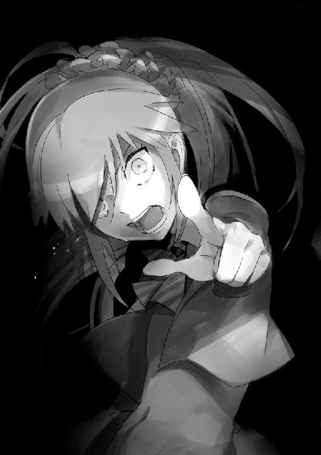
「はぁ......」
僕はため息をついて、ゆっくりとソファーに身を沈める。
目が冴えたまま長い時間が過ぎて、やがて夜が明けた。
翌日の昼休み、僕はトイレを理由に理解から離れ、宮越さんと共に、いつもの狭い準備室の中で、ミーティングを行うことにしたのだが。
「なんなのよ全く、あのゲームは！ おかしいんじゃないの！」
「あーそういうこともあるから、あんまり気を落とさないで」
ネットゲームのプレイ方針や情報交換もする予定だったのだが、いきなり話すネタがなくなってしまっていた。
「大体何よ。何でよりによって最初に殺されるのがあたしなのよ！」
ちなみに、ゲーム初日はストーリー上のキャラが死ぬだけで、実際中にいるプレイヤーが死ぬことはない。二日目は監禁されるプレイヤーもいなかったせいか、犠牲者が出なかったので、宮越さんはゲーム中で、事実上真っ先に殺されたことになる。
推理は得意だのと豪語していたせいか、根拠はよく分からないが自信があったのか、あまり宮越さんらしくない憤慨っぷりだった。
「《チェーンロック》は、持ってたでしょ？ なんで使わなかったの？」
ゲーム上の設定で、序盤に高確率で一枚は手に入るはずなんだけど。
「持ってたわよ！ 殺人鬼の攻撃を一晩食い止められるあれでしょ？ でも、十四人もいて、あたしがいきなり狙われるなんて思わないじゃない！」
「あー......たぶんトレードにも応じなかったし、あんまりチャットにも参加してなかったから、不気味に思われたんだよ。でも、そうでなくても《監禁者》がいない場合は、常にロックしておくのが基本だよ。死んだら終わりだし」
「そんなの知らないわよ！ あなたみたいなマニアと一緒にしないでくれる!?」
「............」
そんなこと僕に言われても、ちょっと困る。
ルールはよく読んだって、言ってたのに......。
「ま、いいわ。早々にリタイヤしたおかげで、代わりに他のことが分かったもの」
「代わりって......？」
大きくため息をつきながら顎に手を当て、宮越さんが神妙な顔をする。
「十二戦以上してるのよ、あの子の過去の対戦相手たち」
「え......？」
咄嗟に宮越さんが何を言ってるか分からず、間の抜けた声をあげてしまう。
「対戦記録よ。プレイヤーのゲームの記録って残されてるでしょ？ 昨日ログインと同時に死んでたから、暇でチェックしてたんだけど、その記録が十二戦以上あるプレイヤーとしか、あの子は戦ってないのよ」
「それ、本当？」
「疑うなら家に帰ってから調べてみなさいよ。ほんとだから」
と、宮越さんは自信満々に告げる。
これは盲点だった。
最初から破竹の勢いで連勝を続けた理解のプレイ記録は追い求めても、理解と戦った大勢の人間の記録を洗い出すなんて、そんな発想はなかった。
そういえば、僕自身が初めて彼女と対戦したときも、Ｃランクの友人の登録ハンドルを借りていた気がする。その区切りが、確か十二戦だ。
ランク制限付きサーバーのみで戦えば、予測のつきにくい完全な初心者との対戦は、ほとんど淘汰されることになる。
「まさか、でも......」
理解はそのデータを見て、各プレイヤーの傾向と対策を練っていたということだろうか？
「でも、この推論が当たってるとしたら、とてもじゃないけど《特殊能力》なんて言えないけどね。過去のデータを洗い出して、プレイヤーごとに傾向と対策を立てる。当たり前過ぎて、何も特別じゃないわ」
「......だろうね」
そもそも、こんな理屈で三百勝以上もできるなら、誰も苦労しない。殺人役と探偵役が、ゲーム中に入れ替わるプレイ内容は、複雑過ぎて予測しきれるもんじゃない。
でも、確かに理解はうまかった。誰かを犯人に仕立てる状況を作ること。それこそが、このゲーム最大の難所であり、肝であるのだから。
だけど、この事実は偶然ではあり得ない。理解は、何かをやっているはずだ。
「ねえ、あなたはどうやって勝ったの？」
「うん？」
「よくよく考えれば重要なことだわ。もし、あの子が《能力》で、ゲームに連勝していたとしたら、あなたに負けたのは、それが通じなかったからでしょ？」
「まあそうともいえるかも」
平静を装ってはみたが、盲点かもしれない。
「具体的にはどうだったのよ？」
「たいしたことじゃないよ。途中までは普通に犯人を見立てて誰かを陥れようとしたけど、ゲームのラスト付近で、遠巻きに自分が犯人だと匂わせるよう、噓の証言をしたんだ」
「あれ？ でも、それって......？」
宮越さんの疑問は当然だ。
「そう、僕は自分が殺されるように演技をした。途中でゲームを降りたくなってね」
「なんで、わざわざそんなことしたのよ？」
「ただの気まぐれだよ。あるいはちょっと、ゲームで殺されてみたかったのかもしれない」
「なんか危ない告白をされたわね......。人生相談センターに連絡した方がいい？」
「真面目な話、これは本人には絶対に言わないで欲しいんだけど。僕は理解に憧れてたよ」
「......あれに？」
宮越さんが、冷蔵庫で液化した賞味期限切れの野菜を発見したような目を向けてきた。
「いやまあ、性格的な面はさておき、あの洞察力と話術にね。あらゆる噓を見破りつつ、他人に罪をおっかぶせる。明らかに本人には悪意があると分かっているのに、誰も否定できない。それで、僕もどんな風に論破されるか楽しみで、戦いたかった」
ゲームを繰り返し、噓をついて。
「なんか、典型的な病気思考ね......」
「そのゲームの途中で、理解を殺して勝てそうなチャンスが訪れたんだけど、なんかそうするのが嫌になって、わざと自分が殺される隙を作った。そしたら、理解が犯人を勘違いして自爆して、結果的に僕が勝利した」
へえ、と宮越さんは感心したように目を丸くして、
「でも、そういうのって、本当はいけないんじゃないかしら？」
顎先に手を添えながら首を傾げてみせた。
「本来は重大なルール違反。でも、何故かその時は、そんな気分だった。そして、後悔した」
僕が自分の手で、理解の伝説を終わらせてしまったことを。
「どうでもいいけど、そんなナイーブなら、どのみちあなたには、そんなゲームは向いてなかったんじゃない？」
「そうでもないよ、むしろ、向いてないのは──」
虚空に視線を走らせると、宮越さんは肩をすくめた。
「はいはい、ごめんなさいね。すぐ死んじゃった上に、役にも立たない情報で」
「ううん、そんなことない。助かったよ、ありがとう」
作り笑顔、ああ僕は、また宮越さんの善意を利用している。
「ま、あなたがいつまでもあの子に取られっぱなしになるのも困るしね。副委員長としては、クラスのみんなが心配してる委員長を助けるのが役目でしょ」
「そっか」
笑顔を返して、教室に戻ろうと思った瞬間、外から声が聞こえてきた。
「おいおい、木崎。だからそーいう言い方はよせって言ってるだろ」
「ふん、こんなイカレ女をかばって、魔女の妹のご機嫌を伺いたいわけ？ あんたもやるわねえ」
僕と宮越さんは、はっとして顔を見つめ合う。薄い一枚の壁を隔てた向こう側で、今、何かが起きていた。
耳を澄ませば、理解の《スレイプニール号改》の駆動音もかすかに聞こえてくる。
理解が僕たちを探しにきて、木崎さんたちとばったり出会って口論になった。そこを通りがかった達也が止めた。この状況から察するに、そんなところだろうか？
しかし珍しい。あの要領のいい友人が、こんな不毛な争いに加わるとは。
とはいえ、木崎さんの方が攻撃的な分、達也の分は悪そうだ。やはり、僕が出るしかない。
「待って！ 出ちゃダメ！」
準備室の引き戸にかけた手を、背後から宮越さんにつかまれる。
「今出て行くと、きっとロクな目に遭わないわよ？」
「でも......」
「ふん、引きこもってたくせに、金だけはあるからそんな性格になったのね。でも、安心しなさい。すぐに前みたいに引きこもらせてやるから」
扉の向こうで足音がした。躊躇している間に、壮絶な捨てゼリフを残して、木崎さんたちは立ち去ったようだ。
ほっと胸を撫で下ろす、達也がいてくれて助かった。
そうでなければ、理解の車椅子を引っ張って、階段から突き落としていたかもしれない。
本気で怒った木崎さんなら、そのくらいのことはやってのける。
もっとも、理解もそう簡単にそんな真似はされないだろうけど。
「君筒木さん、だっけか？ あんまりあいつに付き合わないほうがいいぞ」
「俺様の心配なんざ百年早えーよ、それよりお前は妹ちゃんの方に注意を払いな」
「だから......どういうことなんだよ、それは？」
「くくく、何度も言わせんな。どうしてもってんなら、本人にでも聞いてみるんだな。あの子が昔、何をやらかしたのか」
「............」
まずい！ 理解はまさか、遥香の起こしたあの事件のことまで、知っているのか。
達也が沈黙する。聞き返さないということは、思い当たる節があるのか。
いけない。この話を続けさせては──。
「あっ......！ ちょっと都築君！」
宮越さんの手を振り切って準備室の扉を開けると、すぐに二人の姿が見えた。
「おや......」
達也と理解が、音に反応して、揃ってこちらを向いた。
理解は長い口論で疲れたのか、木崎さんに呆れたのか、目を閉じて冷笑を浮かべ、軽く瞑想にふけっていた。
「何かもめてたみたいだけど、大丈夫だった？」
とりあえず、話が聞こえていたのはバレバレだけど、すっとぼけることにする。
「くくくく......。恋人と友人のピンチに傍観とは、いい趣味だな、れーくん」
うっすらと両目を開いて、口元を弓に歪ませる。
「あたしが止めたのよ。みんな集まると、余計に話がゴチャゴチャしそうだったから」
理解が皮肉を言うと、すかさず宮越さんがフォローを入れてくれた。
「それより、達也、ありがとう。助けてくれて」
「あ、ああ......。礼には及ばねえよ。お妃様のヤツ、また度が過ぎ始めてるからな......」
何か理解から目を逸らして言う。何を言われたのか。問いただしたいところだが......、宮越さんも理解もいるし、ここじゃ無理か。
「たっつー。大丈夫っすか？」
廊下の奥から聞こえた声の方を見やると、何故か遥香までやってきていた。
「なんか、お妃さんともめてるって聞いたんすけど、大丈夫？」
「ん、ああ......」
「リカイさんも気をつけて下さいっす。あの女、結構やり手っすから」
「気安く呼ぶなっつったろーが。大体あんなカス女、相手にもなんねーよ、アホ」
「うわあー。やっぱお兄ちゃんの彼女怖いよー」
「あとで後ろから殴っていいから。まあ、無事で良かったよ」
一応フォローを入れると、その場ですぐ、僕たちは解散した。
＊
その日はあっという間に放課後となった。宮越さんから得られたゲームの情報だけでは核心には至れないが、期日は今日を含めて残り三日。そろそろ試してもいい頃合いだ。
しかし、未だに現実味を帯びない。
理解が何か、得体の知れない力をもっていそうなことと、とりあえず月見月というバックがついていることは少し信じられそうだが、それでも、本当に犯人を殺すなどと。
再び服装を変えて、僕たちは引き続き、夕闇のアーケード街で遥香たちを尾行していた。
二人は何度もこの辺りをデートしているのか、人ごみを避けるためか、大型百貨店の地下食品売り場を通り、どこかに向かっていく。
「なあ、君はどう思う？」
「何がさ？」
尾行中の無駄話というのは、探偵的にはかなりやっちゃいけない類の行動だと思う。注意力が削がれてしまうし、離れた場所からの小声といっても、慣れ親しんだ声は耳に届きやすい。
「妹ちゃんがだよ。何で、あんな間の抜けたアホッぽい子が、クライアントに《殺人犯》だと、疑われていると思うかい？」
「その意味が分かんないから、僕はこうしているんだろ？」
問いかけを無視して、僕は目の前に注意を向ける。
「れーくん、噓はつくなよ。君は何か知っているはずだ。つい昨日、君の携帯電話のメール欄を見たが、妹ちゃんから来たメールはひとつもなかった。何故だろうなぁ？」
「......ちょっと落として壊れた時、前のデータが消えてさ」
さすがに苦しい言い訳だった。
「ねーよ、れーくん。それはねえ」
案の定、理解に呆れたような顔で否定されてしまう。
「君のその携帯は半年前に出た機種で、一ヶ月前に出た新型も、ほぼ値段が一緒のはずだ。いつ壊れたかは知らないが、わざわざ旧型を買う必要がない。それに、日付も古いものがいくつかあった。あの色男にも聞いてみたが、妹ちゃんは別にメール嫌いではないらしい。なのに君の携帯には全く妹ちゃんからのメールがない。何故だか、心当たりはないか？」
やはり、こんな適当な噓で騙せるわけがない、か。
それにしても、メールの内容はともかく、あの短時間で機種まで確認していたとは、やはり尋常じゃない。
「それに、仲のいい兄妹なら、わざわざ部屋にカギなんてかけねーよなあ。普通はよ」
「まあ、実は兄妹仲が悪いってのは、あまり表に出すことじゃないからね」
降参の印にそう答えると、理解がにやりと笑みを見せた。
「そうかな？ 妹ちゃんが何かを隠すために、ああしてるって可能性もあるとは思うが？」
「......何を隠すの？ 犯行の手がかりになるようなものは、出てこなかったでしょ？」
「それを考えるのが、君と俺様の仕事だぜ、れーくん。推理というものは、調べ尽くして手が止まってから、初めてするものさ」
くすくすと、含み笑い。
「でだ、教えてくれよ。何で君が妹ちゃんに嫌われたのか？ 何か、思い当たる節くらいあんだろ？ なあ」
「............」
言うわけにはいかない。何か、うまく回避できる手段はないか、それだけを考える。
「ないよ、そんなもの」
「本当？ 本当かなあ？」
じいいっと、理解の目が見つめてくる。射貫くような視線、爬虫類に睨まれているような居心地の悪さを覚える。
「あら、あなたたち。珍しいところで会うわね」
返答に困っていると、突然、背後から加勢が入った。
「って、宮越さん！ 何でまた、ここに？」
声に振り向くと、私服姿の宮越さんが、野菜の入ったビニール袋を手に、地下食品売り場のコーナーに立っていた。
宮越さんの家からは、だいぶ遠いはずだけど、今は細かいことはいい。
「ちょっ、ちょっと買い物にね。そ、それより、あなたたちこそ何してるのよ？」
咄嗟の逃げ道に飛び込んだはいいが、逆に聞き返されてしまった。
まずい、二人を尾行しているなんて、言うわけには──。
「デートに決まってるじゃねーか。独り身の副委員長様よぉ」
ぎゅっと、理解の枯れ木のような細い腕が、僕の腕に絡みつく。
きめ細かな肌の冷たさに、少しだけドキリとした。
「だよな、れーくん」
触診でもするかのように、手のひらの上を理解の指が踊る。神経を直接撫でつけるようなさわり方に、肌が粟立つような感じがした。
それにしても、相変わらず呼吸をするように噓をつくヤツだ。
「はあ......あなたたちも良くやるわね。でも、わざわざこんな遠くまで？」
「いや、まあ......」
確かに、僕たちの家からも学校からも離れていて、不自然だが。
「安売りだよ、ここで食料品のセールが今日あっただろ？ 副委員長様は違うのかい？」
「えっ？ あ、ああ......そうね。うん、そうだけど」
「ああ......確かに、ここのセールは安いからね」
僕も適当に相槌を打って、話を逸らす。誤魔化しはうまくいったようだった。
理解もさすがというべきか、何日か前から家に入っていたチラシ、地元の僕ですら意識していなかったことを、咄嗟に言い訳に使えるとは。
僕が内心で胸を撫で下ろしていると、宮越さんは、既に持っていた自分のビニール袋を、さっと、背後に回した。
「う、うん。あたしも実質ひとり暮らしみたいなものだし、家計はきちんと切り詰めてるのよね。っていうか、あなたたち、本気で付き合ってたの？」
「お前の頭は鶏か？ 既にれーくんと俺様は、ベッドで色んなプレイをしちゃった仲だぞ」
「んなっ......」
さすがの宮越さんも顔を真っ赤にして、眉をひくつかせた。
「今のところ放置プレイしかした覚えがないんだけど」
僕の一言で平静を取り戻した宮越さんは、大きなため息をひとつして理解に向き直る。
「はぁ......あなたも少しは気をつけてよね。学校でそういうことされると、都築君が困るんだから。おかげであたしも、あなたとクラスの緩衝材として、苦労してるのよ」
「困るのはお前だろ？ 他人に理由をなすりつけてんじゃねーよ」
その瞬間、理解の目が赤く光ったような気がした。
いや、それより、早くしないと遥香たちを見失う。
「ごめん。宮越さん。埋め合わせは後でするから」
宮越さんを置いて、急いで車椅子を押す。遥香と達也の背中は、かなり小さくなっていた。
「全く、もう......！」
最後に一度振り返る。宮越さんが頰を膨らませたまま立ち尽くす姿が、遠目に見えた。
＊
尾行を続行する。入り組んだ街路と人ごみのせいで、もはや僕には二人の影すら見えなくなっていたが、理解の動物的な勘のおかげで、かろうじて方向だけはつかめていた。
日が落ち始めたアーケード街を抜け、スラム街のような寂れたビル群へ向かう。
「って、理解。ひょっとして、ここさ......」
裏路地のラブホテル街に近くなってきた。さすがに離れ過ぎたみたいだ。
道が細く、入り組んで、尾行もかなり辛くなってくる。先生に見つかったらあらぬ誤解を招きそうだ。
というか、達也と遥香が既にそういう関係だとしたら、なおさら尾行を断念したい気分だ。
もちろん、ここは単なる通り道という可能性も、なくはないけれど。
「あー、道が悪い。この距離じゃ、もう危険を冒さないと追えねえな」
「じゃあ、そろそろ帰ろうか？」
内心色んな意味でほっとしたのを悟られないようにしながら、車椅子のハンドルを握ろうとすると、理解の帽子が揺れた。
「ちょっと待て、魚を釣りに来て蛇が釣れたぞ、れーくん」
理解の赤みがかった視線の先、薄闇とネオンの反射で分かりにくいが、制服姿の男に付き添われてラブホテルから出てくる、見覚えのある女の子がいた。
「もしかして、木崎さんかな、あれ？」
「ふふふ、もしかも何もねーよ、あの化粧女は全く、ここからでも臭うな」
理解は悪態をつきつつ、車椅子についたボックスから小型のカメラを取り出して、アングルを変えながら、数回シャッターを切る。
「これでよし、と。さて、俺様たちも、ついでに一発やっていくか？」
「ここに置いて行くけど、一人で帰れるよね？」
「あはは。照れるなよ、れーくん。君は可愛いなあ」
ぽんぽんと僕の腰を叩いてくる手を振り払って、ハンドルを握って歩き出す。
「それにしても、すごい偶然だね」
「偶然ってことはねーよ、れーくん」
「え......？」
「あいつはここに来るだいぶ前から先を歩いてたんだよ。だから、妹ちゃんを追う片手間で、探してたのさ。そうそう、ついでに昼間の口論の時、あいつも邪魔だから調べておいた」
ぴっと理解が一枚のカードを投げてよこす。《木崎キリナ・はずれ》と、書いてあった。
「......その、観察能力が、君の力？」
「そう思うなら、そうカードに書け。今日を含めて残り三日、そろそろ俺様を殺しにかからないと、まずいんじゃねえのか？ 妹ちゃんを救いたいならよ」
「......そうだね」
僕たちはそれだけ話すと、夜のホテル街から立ち去った。
＊
家に帰り、理解が風呂に入っている間、僕は携帯を片手に、ソファーの上で寝ころんでいた。
「やっぱり、何か妙だな......」
考えていたのは、ネットと現実での《探偵殺人ゲーム》についてだが、疑問はその内容ではなかった。それは、理解が提示してきたルールの不透明性だ。
今回のネットゲームの探偵殺人では、僕が生き残ってるのが、遥香の防御条件だが、僕の勝利条件は......ない。
しかしそれは、現実でも同じなのだ。
「............」
手元にある理解から受け取った《Skill》と《Murderer》の包丁カードを眺める。では、この現実の《探偵殺人ゲーム》における勝利とは何なのだろうと考える。
改めて問うまでもない。僕の目的は遥香が万が一にも殺されないことだが、逆に思う。
遥香が絶対に殺されないから、どうだというのだ？
ネットゲームで六日間生き残っても、この《包丁カード》で理解を倒しても、理解は『誰も殺さない』なんて一言も口にしていないのだ。
そして、僕との勝負と言ったくせに、僕の明確な勝利条件も提示されていない。
それは、単に説明不足というわけじゃなく、あの中途半端な条件と言い回し自体に、何か裏があるのではないのかと、僕はだいぶ前から勘づいている。
「......さて、と」
思考をゲームの内容自体に戻す。
ネット上の《探偵殺人ゲーム》では、中盤から後半へと進展し、徐々に混沌の様相を呈しつつある。僕が理解の滞在期間中まで生き残る可能性もあるが、確実とはいえない。
遥香を守るつもりならば、現実での理解とのゲーム。すなわち特殊能力を当てる《包丁カード》を、そろそろ使っておくべきだろう。
「............」
だが、確信に至れる情報が不足している。このままだと、このカードでどう頑張ろうが、理解との勝負が実際にどう転ぶかまでは予測できない。だから、僕は、どうあがいても負けないよう、小細工をすることに決めた。
『例の端末は手に入った？』
携帯電話を使って、宮越さんにメールを送る。程なくして、『うん、大丈夫。準備室の机の中に隠しておくから』と、返ってきた。
理解から遥香を守るための予防策の鍵となる道具は、宮越さんに手配してもらった。これで、万一、最悪の事態に陥りそうな時はあがけるはずだ。
宮越さんとのやりとりを終えた直後、素早くメールの履歴を消去し、《Skill》のカードに、僕は書き込んだ。
しばらくして、風呂上がりの理解が、バスタオルを巻いて出てきた。脱衣所までは車椅子で移動しているし、足が不自由なためにコンパクトな補助器具を使っているため、お風呂に入ってから居間に戻ってくるまで、かなりのインターバルが発生する。従って、理解の入浴中は比較的安全に事が運べた。
宮越さんからもらった十二戦のデータや、記憶力の問題は残っている。しかし僕にはそのどれも正解の確信がもてない。
だから僕は、確実に遥香を守りきるために、安全策に出ることにした。
「どうした、れーくん」
「僕の包丁を、そろそろ使わせてもらう」
そして、カードを差し出した。
書いた答え、理解の特殊能力の予想は、《予知能力》だ。
あえてバカバカしいほどハズレっぽい答えだが、僕の本当の狙いは別のところにある。
ひとつは、ここで外してもおそらく遥香は死なないだろうという予想。そして、もうひとつ。僕の予想通り、このゲームに裏があるとしたら、僕はここで正解を出したらまずい。
「あはは、そう来たか。なかなかいい線だが、残念だな、れーくん」
笑みと共に、小さな鍵を投げてよこされる。以前もらった、答えの入った小箱を開けると、中に入っていた紙切れには《無数に扉のある高座》と書かれていた。
「......何これ？」
意味が分からなかった。
数秒固まってしまった後、紙切れから理解に視線を移すと、至って平然とした笑みを浮かべていた。
「聞いたことはないか？ 俺様の足代わりと同じ、一応神話の類のものらしいが？」
そう言って理解は軽く車椅子を撫でるが、ここでうやむやにされる訳にはいかない。
正直、理解の答えをアテにしていた面もあるのだから。
「いや、こんな必殺技っぽいネーミングじゃなくてさ。純粋なメカニズムを聞いてるんだけど」
「れーくん、君はもう少し遊び心を持つべきだぜ？ というか、事実俺様の能力はそう月見月で呼ばれているんだから仕方ない。文句があるなら裏を見てみろ」
「えっと......」
言われた通り紙切れを逆にすると、『精神感応解読』とあった。
「というわけで、正式な名称は見ての通りだ。自分の感覚によって、相手の精神を直接認識すると──まあ、言っても分からんだろうから、詳しいことはいずれ実演しながら教えてやるよ。とりあえず君の示した答えとは違う。じゃーな」
そう言って理解はパソコンに向かう。なんかすごい誤魔化された気分だが、今は目をつぶることにする。
僕も自室に一度戻り、ネットゲームの《探偵殺人ゲーム》を続行する、僕は防御一辺倒に回っているため、かろうじて死に至っていないものの、他プレイヤーの行動により、確実に残存プレイヤーは数を減らしていた。そして、未だ理解の遺言メッセージも確認されていなかった。
膠着状態が、次第に歪み始めている。
「ふう......」
ネットゲームを終えて自室の扉を開けると、同じくプレイを終えた理解がやってきて、いつものように僕のベッドでくつろぎ始めた。
奇妙な雰囲気のまま、十数分ほど経っただろうか？ 僕がふと時計を見上げたとき、理解が小さな欠伸をしつつ、その身を起こして視線を向けてきた。
「そうだ、いいこと思いついたぞ、れーくん。たまには一緒に寝てみないか？ 新しい発見が何かあるかもしれないぞ？」
「ねえ、理解、ひとつ聞きたいんだけどさ。どうして君はあんなゲームをやってたの？」
理解のからかいを無視して、僕は問いかける。
今のうちに、聞いておかなければならなかった。
「ふふふ、おかしなことを聞くなぁ君は。ただの趣味だよ。人の仮面を剝ぐことは、俺様の生きがいだからな」
「それで、探偵になったの？」
「まあ、半分くらいはそうともいえる」
「月見月家の専属ってわけ？」
「一応はな。だが、今回はプライベートだから、金は通してないがな。金を通すと、真面目にやらなけりゃならなくなる」
「じゃあ、今回はどうするつもり？」
「今日はやけに突っかかってくるな。れーくん、君らしくもない」
理解がいつもの笑みを返す。
「自分の家族の事だからね。そりゃ心配だよ」
しかも僕は、既に一つの《包丁》を外してしまった上に、残りの《包丁》である真犯人の心当たりも望みは薄い。ネットゲームだって今は生き残っているが、ここから先はもう全く予想がつかない。
動き出す方向性を決めるためにも、今ここで、確認しておきたかった。
「では、特別にひとつだけ教えてやろう。依頼主についてだが、今回は金を通さない代わりに、あるリスクを背負ってもらっている」
「リスク？」
「《探偵殺人ゲーム》も、殺す対象を外したら、自分が発狂死の危険に曝されるだろう。今回は依頼人にも金じゃなくて、特別なものを賭けてもらった」
「特別なものって？」
「ああ、依頼人自身の命だよ、れーくん」
「......冗談でしょ？」
思わず口から出た言葉に、理解はかぶりを振った。
「くくく、れーくん。そいつはとんでもない大バカ者でな、確実に犯人にアテがあるらしい。もし外したら、自分の命を捧げると吐かしやがったのさ。俺様に依頼する引き換えにな」
まさか、そんな......。
「言っておくが、れーくん。これは依頼人とだけの秘密だからな。誰にも言っちゃダメだぞ」
それだけ話し終えると、理解は僕のベッドに突っ伏して、もう話は済んだと言わんばかりにだらけ始めた。
「............」
しばらく立ちつくしてから、僕は理解を部屋に置いて、居間のソファーに横になった。
ネットゲームの方は、既に僕のアイテムはゼロになっている。いつ死ぬかも分からない。
お金の代わりに命を賭けさせたということは、理解の談では、この一件は紛れもなく本気ということ。
ふと、顔が熱くなっていることに気づく、僕の心臓が破裂しそうな勢いで、どくどくと脈打っていた。
だんだん理解が分からなくなってきた。
この冗談みたいな、調査活動というにも生ぬるい共同生活も、ついに六日目に突入していた。
心臓が痛んでくる。考えてみれば、僕は心の底で、実際にそんな目には遭わないと思っていたのだろう。しかし、万が一に理解の能力が本物で、犯人が殺されるとしたら、僕は......。
そんなことを考えながら、月一の土曜登校のために学校に行くと、ホームルームが始まる前から、教室は異様な雰囲気に包まれていた。
周囲の人間が、完全に理解を──いや、正確には僕と理解を見ていない。
透明人間にでもなってしまったかのような気分。宮越さんだけが、何ともいえない微妙な視線を僅かに送ってきていた。
そして、着席しようとしたとき、真っ黒な理解の机が目に入った。
「うっ......！」
悲惨だった。机の上はカッターか彫刻刀のようなもので、ズタズタに傷つけられて、落書きでびっしりと埋まっている。机の中──おそらくはゴミ箱の中身と共に入っていたプリントやノートを取ると、ほとんどのページに、呪いか執念のように悪意が刻まれていた。よく見れば、黒板にも、足のない棒人間のような絵が描かれている。
「............」
クラスメイトの皆は、何事もなかったように、沈黙を保っている。時折、思い出したようにあちこちから視線が刺さる。
胸に嫌なものがこみ上げてくる。
そうだ、父さんが死んだときも、僕らはこんな......。
「ぷっくくくくく......。あっはははははは！」
しばしの沈黙の後、理解がノートを手にとって笑い声を上げた。
気が触れたような笑いではなく、心底面白くて仕方なさそうな笑いだった。
「やれやれ、復学六日目で障害者相手にこれかよ。現代社会の病巣は、もはや救い難いものがあるな、れーくん」
「これに関しては、僕も君をフォローする気が、あまり起こらないんだけど......」
理解の暴言と身勝手な行動のツケがこれだ。いくらそりが合わないとはいえ、あまりにも社会性がなさ過ぎる。今回は──おそらく木崎さんがやったのだろうが、これはいつか起きる必然だった。
今はこうならなくても、別の誰かが、いつか。
そして、何もせずに黙って木崎さんを拒んでいても、ほんの気まぐれで傷つけられる。
だから、適度にうまく立ち回って、自分の居場所を確保しなければならないのだ。
「あはは......」
ふと、教室の入り口付近から、声が聞こえた。
「教室の備品に何してるのよ。ほら、あかりっち。叱ってあげなさいよ。副委員長でしょ？」
廊下越しに木崎さんが、宮越さんを指差した。左大臣と右大臣もいる。
三人とも、同じ薄ら笑いを浮かべて、教室に一歩を踏み込んでいた。
「そうそう。自分の席に、落書きまでしちゃってほんと困った子よねえ。復学したばっかでなんだけど、学校に迷惑かけるお子様はとっととお家に帰ればぁ？」
「はあ、もう......」
宮越さんは、頭を抱えてため息をつくだけだった。忠告はしたのに、そんな呆れと諦めが入り混じった表情だった。
「くくくくく......あっははははは！」
だが、理解も木崎さんたちに合わせて笑い出す。そして、その暴虐な笑みを僕に向けた。
「こうまで予想通りだと呆れるよな、れーくん。コイツは自分が何をやらかしちまったか、まだ何もわかっちゃいねえみたいだが」
「何よ？ 私らがやったとでも言う気なの？ 証拠でもあるわけ？」
悪びれもせず、嘲るような笑みを浮かべる木崎さん。
これがいじめの恐怖だ。あからさまにやった人間が分かっていながら、当人がすっとぼけて周囲も知らん顔をすれば、逃れる術はない。だからこそ、この数日間に理解の悪評を広めつつ、みんなに見て見ぬふりをするよう、手回しをしていたんだろう。
しかし理解はたじろいだ様子もなく、無造作に僕のカバンからノートを抜き取って広げた。僕が宿題の解説を入れるために預かっていた。木崎さんたち三人分のノートを。そして、
「机の落書きはそこの左のヤツだな。あー、キャラ薄過ぎて名前思い出せねえ」
おもむろに木崎さんたち三人組を指差して、人ごとのようにぼそぼそと、しかし、良く通る声で語り始めた。
「黒板は右の眉無し女だな、ノートの落書きは化粧女。くくく......他クラスの連中を使わず、ちゃんと自分たちでやったんだな、偉いぞ」
「えっ......？」
三人の顔色と、教室の空気が変わった。緊張が走った。
一瞬なんのことか分からず、直後に、それが理解の机にイタズラ書きをした張本人が、彼女たちだと指摘しているということに気づく。
理解の教科書類は机の中に置きっぱなしだから、前日にノートやなにやらを準備して、机と黒板は、朝早くでも来れば、十分に可能だ。
だが、何故分かった？ 証拠なんて何もないはずだ。それとも、ただのハッタリか？
「朝っぱらからご苦労なことだなぁ、見てみろよこの文字を。漢字の角張った部分はまだ隠してあるが、長文を書くと文字が斜め上になる癖は抜けてない。つーかお前、字下手だな」
それは、指摘した木崎さんの筆跡に、言われてみれば確かに似ていた。
「な、なんでそんなことが、あんたに──」
「少しは自分を客観的に見たらどうだ？ ブサイクの癖に、鏡ばっか見てんじゃねーよ」
そして、理解は三つのノートを、持ち主である彼女らの眼前に突きつける。
「ほーら、よく見てみろよ。人の筆跡ってのは、そう簡単には直せねーんだよ」
そして、三つのノートを教室のクラスメイトに見せつけるように掲げる。さすがに無関心を装っていたクラスメイトも驚き、視線を集めていた。
「化粧女の癖はさっき言った通りだが、左のヤツはカタカナと漢字の跳ねや曲がりを、必要以上に鋭角にしている。右のヤツは文字間隔がやたら狭い。さあ、お習字の時間だぞ」
何度も彼女たちのノートを使わされていた僕には、もう分かっていた。
理解の推察が、的中していることを。
ざわざわと、周囲の視線が黒板と机、ノートに集まり、疑問と混乱の声が教室に満ち始める。
「バ、バカじゃないのコイツ！ 何変な因縁つけてるのよ！ たかが筆跡くらい、そんなの他の誰だって──」
「なら、このノートはなんだ？」
と、宿題のために借りていた彼女たちのノートを捨て、自分の落書きまみれのノートを突き出す。木崎さんは引きつった顔のまま首を傾げた。
「気づかねえか？ 気づかねえよなあ。鼻が腐ってやがるからなあ」
そして、唐突にそのノートを、宮越さんの方に投げ捨てた。
「きゃっ！」
思わず受け取ってしまう宮越さん。
「すっぴんの副委員長様、お前なら分かるだろ、その匂いが」
「匂いって......もしかして、これ。まさか」
宮越さんの反応に、木崎さんの表情が歪む。それを見て、理解がにやりと笑みを浮かべた。
「そういうことだ！ それは、お前が普段から振りまいてる香水の匂いだよ！ 香水ってのは少量を何度も付け直すのが基本だが、お前は四六時中つけ過ぎだよ化粧女」
「ね、ねえ。ちょっと、貸してみて？」
宮越さんからノートをもらうと、確かに、かすかだがあの香水の匂いが、ふんわりと香った。
それを見て、無表情を装っていたクラスのみんなが顔をしかめる。どうやら、少しばかりそちらにも香りが届いたらしい。
そして、言葉にならないざわめきが更に教室内に満ち、いつしかその視線は遠巻きに木崎さんたちに集中していた。
皆が言わずとも認めていた。木崎さんとその一派が、この一件の首謀者だと。
「くくくく......。で、どう始末を付けるつもりだよ、この化粧女。俺様とれーくんの楽しい時間を邪魔してくれた落とし前を」
理解の目がギロリと木崎さんたちを睨め付ける。
悪魔のような笑みが浮かんでいた。
「ふ、ふざけんなぁ！ あ、あたしは認めないわよ！ 筆跡だの匂いだのって、そ、そんなの知らないわよ！ ただの偶然よ！ あたしはやってないもの、そ、そうよ。ひとりで何言ってるの？ バカじゃないの、あはっ......あははは......」
木崎さんの笑顔は引きつっていた。
勝負あった。
いかな暴君といえど、公衆の面前で醜態を一度曝せば恐れるものはいなくなる。後は、表面上は媚びへつらわれても、内心ではバカにされる裸の王様だ。いじめの対象とは、卑下の対象でもある。それが崩れた時点で、木崎さんの負けだった。
ある意味、一応の決着はついた。そう言ってもいい、だが。
「証拠？ 脳みそ膿んでんじゃねえのかテメェら。これが証拠じゃなくて何なんだよ」
理解は、こんなところでやめる人間じゃなかった。
「いるよなあ、あからさまに負けてんのに、しらばっくれるクソガキ。土下座して靴でも舐めれば許してやろうと思ってたが、あーあ、もうだめだ」
理解がかっと両目を剝いた。猛毒を帯びた凶悪な眼光が、そこにあった。
「ひっ！」
「お前ら明日から、まともに学校に来られると思うなよ？」
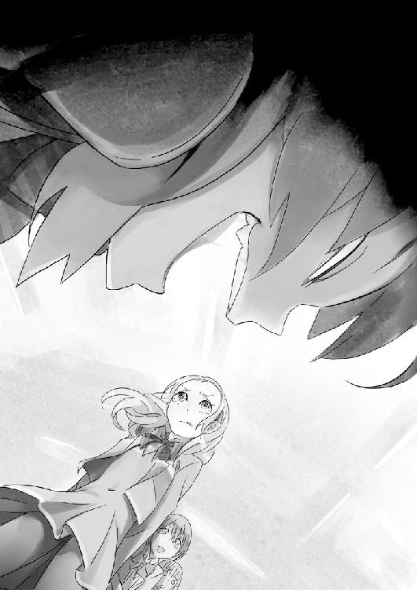
こつんと、理解が人差し指を肘掛けの液晶モニタに立てる。直後、『端末０４３データ送信プログラム起動......』という文字が一瞬浮かび上がり、滲むように赤く点滅した。
「っ......！ お、覚えてなさいよっ！」
理解の眼光に怯んだ木崎さんたちは、逃げていった。
教室が静まりかえる。入れ違いのように、先生が入ってきて、時間が動き出す。
「さ、寝床がなくなったから君の机を貸してくれよ、れーくん」
何事もなかったようににこやかに笑って、理解は僕の机に頭を転がした。
昼休みにちょっと目を離した隙に、誰がやったのか、理解の机は、普通のものに机ごとすり替わっていた。
＊
西日がうっすらと、放課後の教室を赤く染め上げている。
あれからすぐ、木崎さんたちは職員室に呼び出され、早退したと聞いた。
理解は僕の机に顔を乗せて、すやすやと寝息を立てている。
あの後、昼休みに宮越さんに何かを聞きに行っただけで、理解はずっと眠りこけていた。
「ねえ、理解。あれってやっぱり、君の仕業なの？」
帰り支度を整えつつ耳元で囁くと、ぱちりと理解が目を開けた。
「ふふふ、女を陥れるのは楽だぞ、れーくん」
笑顔で平然と、恐ろしいことを言ってのけた。
「あのバカ及び、交際相手の友人家族学校関係者十数名とネットに、あいつの《お遊び》を無料配信サービスしてやっただけだ」
「どっちかというと、ダイレクトメールの類じゃない？」
昨晩、理解が撮影していたホテル前の木崎さんの画像が、早速使われたようだ。どうやら、先ほど理解の肘掛けに映された表示文字は、どこかに用意されていた端末の送信のプログラムを起動させた、ということのようだ。
その手際に末恐ろしいものを感じながら、もう一度理解を見ると、ふぁ......と可愛らしい欠伸を上げ、再び机に突っ伏した。
「単純だが、効果はあるんだよ。たっぷり誇張してばらまいておいたが、根っこが事実なだけに否定はしきれまい。ま、まだここに通うなら、恥を曝して生きていくハメになるな」
「えげつない真似を......」
「くくく、殺さなかっただけ、温情が過ぎたかと思っていたんだが」
机に顔を横たえたまま、くすくすと笑い声を漏らす。
「それより、あの香水は......」
さっきのノートから嗅いだときに、僕は違和感を覚えていた。
「まーな。いくらなんでも、イタズラ書きのノートにまで、匂いはつかねえだろ。君の部屋にあった、プレゼントの香水を拝借させてもらった。ちょうどあいつが普段使っているものと、同じだったからな」
と、ブレスケア用の小型噴射機を、制服のポケットからちらつかせる。僕の部屋を貸してはいたけど、いつの間にそんな小道具まで用意していたとは......。
「だいたいの話は分かってたからな、仕込みは抜かりないさ。っと、そうそう、今日の分だ」
そう言って理解が《Killer》のカードを見せてくる。
「え......？」
そこには、《宮越明里・はずれ》と、書かれていた。
あまりに話が変わりすぎて、少しの間思考停止する。
「って、どうして宮越さんを？」
あえて『犯人じゃなさそうな人間』を調べることは、《探偵殺人ゲーム》においては決して間違いではなく、むしろ基本ともいえる戦術だ。
『後々、手がかりが出てきそうな犯人候補』と、『証拠が何も出てこなさそうな犯人候補』のどちらかを、確実に犯人だと断定できる場合、前者を調べた方が、犯人候補を絞る上で有効だと考えるのは浅知恵だ。
取り調べの余地のある人間は、時間の経過に比例して犯人と判断できる情報が増えてくるので、後回しでよい。
推理の余地がない人間を最後まで放置しておくことは、『それがもし犯人だった場合』、最後の最後で、議論の余地がなく、何も対抗できないという危険がある。
だから、『万が一』をここでつぶしておくことに異論はないが、それでもおかしい。
遥香と関わりがある達也はまだしも、木崎さんや宮越さんは、むしろ......僕の周りの。
「犯人として疑ったわけじゃないが、何かと周りをちょろちょろして、調査の邪魔になりそうだったんでな。当然だが、副委員長様もハズレだ。ただ、面白いことが分かった」
ふあ......と眠そうに欠伸をして、再びぱたりと机に突っ伏す。
「......面白いことって？」
反射的に聞き返すと、理解が僅かに顔を上げて、上目遣いになった。
「なあ、れーくん。それはさておき、妹ちゃんのことで、ちょっと聞きたいことがあるんだが」
「え......？」
「実は聞こえてたんだよ、一昨日の夜の君との口論がさ。あのぶちギレっぷりは、凄まじかったよなあ。もしかして、あの子は......」
「......っ！」
やはり聞かれてしまっていたか。
だがまずい。まだ早い！ 今そのことに触れられては──。
「都築君、帰りましょ。今日はなんか、変なことになっちゃったし......」
まだ人がまばらに残っている教室の中で、不意に宮越さんが僕の肩を叩いてきた。
確かに、長居は無用だ。理解の言う通りの仕込みがあったとすれば、木崎さんは、少なくともしばらくは学校に顔を出せないだろう。
このまま話を逸らそうとしたとき、理解がばっと机から身を起こして目を剝いた。
「おい、まだ終わってねえよ。しらばっくれてんじゃねーよ」
「えっ？」
そして、あっけに取られる宮越さんを指差した。
「お前だろ？ 俺様にあの化粧女たちをけしかけたバカは」
「な......！」
「え......？」
すぐには、意味が分からなかった。
「な、何を言ってるんだよ理解！ 宮越さんは、僕たちのために──」
木崎さんが、理解を敵対視しているということも、理解に伝えてくれていたし、木崎さんにも直接宥めてくれていた。
だが、何故か宮越さんの表情は、蒼白に染まったままだ。
「くっくっく、れーくん、こいつはな。善人の仮面を被った、正真正銘の外道だよ。コイツがあの化粧女の昔からの知り合いだってことは、君も知ってるよなあ？」
「ああ、だからこそ、君と僕のために仲介してくれたんじゃ──」
「違うなそれは、大いなる誤解だよ、れーくん」
ぎらりと、毒針のような眼差しが、宮越さんを突き刺した。
「れーくん、知っての通り俺様と君はずっと一緒にいた。俺様がいないときは、そう。そこの副委員長様と、妹ちゃん、そしてあの色男としか二人っきりで話はしていない」
「そ、それがなんだっていうのよ！」
ようやく、宮越さんが反撃に出た。
じぃっと、見つめる理解の瞳孔が開いて、赤く光ったように見えた。
「何であの化粧女は、俺様が《金持ち》だと知っていたんだろうなあ？」
残ってた半数のクラスメイトが、ざわめいた。
「俺様が金持ちだってことは、れーくんにしか話をしてねえ。残りのやつらがそんなことを話してないことは、あの後に確認を取った。俺様が騒ぎを起こすことで困ってる人間が、わざわざクラスにそんな火種を撒くかねえ？」
嫌らしい笑みを浮かべて、理解は宮越さんを挑発する。
「れーくん。つい昨日、あの化粧女が俺様と口論していたときのことを覚えているか？ あの女は俺様を金持ちよばわりしていたが、初日以来、化粧女とれーくんの接点はなかった。だからこそ、あの女はムキになって、俺様かられーくんを取り返しに来ていたんだからな」
「......それが、なんだっていうのよ」
「お前が教えたんだろ？ あのクサレ女を煽り立てるために。俺様が金持ちだと知れば、あの女は対抗心を燃やす上に、れーくんを取られるんじゃないかと危惧を抱くからな」
「な......」
まさかと思った。
「お前は初日の準備室で、確かにれーくんからそう聞いてたよな？ 俺様は覚えてるぞ」
あのとき、準備室の外の廊下で、理解にそこまで既に聞かれていたのか。
僕と同じ考えに至ったのか、それを聞いた宮越さんの表情が引きつる。
「か、勝手なこと言わないでよ。大体、その、お金持ちだってことは、うっかり口を滑らせたかも、しれないけど......」
「へえ、まだしらばっくれんのか。化粧女が敵対視してることを、わざわざ俺様に教えたのも、俺様にあの女を攻撃させる差し金だろ？ お前にとっては俺様もあの化粧女も、目の上のたんこぶだったろうからなぁ」
「ちょ、ちょっと待てよ、それってどういう──」
僕の問いに、理解は意外そうに僕を見た。
「あれ？ 気づかなかったのか、れーくん。こいつはな、君のことが好きなんだよ」
「え......」
あまりにあっけなく吐き出された理解の言葉。教室の中がさらに静まり返る。
「っ......！」
宮越さんは否定しなかった。無言で、酷く狼狽した顔で息を呑んだ。
「普段から俺様たちの様子を、遠巻きにうかがっていたのはそのためだ。昨日......俺様たちの後をつけてきたのも、ただの偶然じゃない。こいつは気になって仕方なかったのさ、俺様とれーくんの仲がな。だから隙を見ては邪魔しようと、ちょっかいを出し、あの化粧女まで煽り、けしかけてきた」
さすがに僕も混乱する。思考が追いつかない。
「ちょ、ちょっと待ってくれよ、昨日は偶然会っただけだって──」
「偶然？ 違うな。昨日の買い物の時、あの店にはセール商品目的で来たと、この女は答えたじゃないか。数日前からここ一帯に投函されていた安売りのチラシに載っていたものと同じ野菜を、こいつは既に別の店で買っていた。ビニール袋の印字で店舗の違いがばれないように隠したつもりだったんだろうが、一瞬遅かったな」
「っ......」
宮越さんの顔に動揺が走るのを見て、はっとした。確かに、そうだ。そういえばあの時、手提げを背後に隠していた。
「ち、違うわよ！ あれはたまたま間違えて買っただけで──」
「ねーな、あり得ねーよ副委員長様。俺様に渡す去年からのプリントに全部に、きっちり日付と配布順まで書いてくるようなヤツが、特売の商品を買い逃した上に、わざわざ遠くの店に行くなんて、そんなワケの分かんねえことするかよ」
そう言って、理解は以前、宮越さんにもらったプリントを取り出し、掲げてみせた。
「『ひとり暮らしのようなもので、家計には気をつけている』んだろう？ なあ？」
「............」
宮越さんが沈黙すると同時に、ひそひそと、周囲から小声が上がる。
理解の狂気に怯えていた空気は、いつの間にか、宮越さんへの好奇の視線へと変貌していた。
この学校では、テストの成績と恋愛沙汰くらいしか主な楽しみがない。
中でも優等生であり、クラスを引っ張る美人である宮越さんの恥部が曝され、貶められていることに、みんなは多かれ少なかれ快楽を覚えているようだった。
「ち、違う......い、言いがかり......だわ」
クラスメイトの視線に怯えながら、宮越さんは声を途切れ途切れにさせて震え始める。
ダメだ。もっと平気な顔をしなければ、みんなにはそう受け取ってもらえない。
周囲の視線が、宮越さんに集中し始める。小声が聞こえる。疑っている。
「つまり、お前はあの店に用はなかった。他の店で買い物をして帰ろうとしたところを、偶然俺様とれーくんを見つけて、様子をうかがおうと追って来たってわけだ。このストーカーが」
教室が、ざわめいている。
くそ、なんで、こんな日に限って放課後に人が、半分近くも残ってるんだ！
まずい。宮越さんが本当に僕を追ってきたかはともかく、理解のパフォーマンスに、クラスが騙され始めている。
「お前は化粧女を宥めるふりをして、俺様への対抗意識を煽り、逆のことを俺様には、《注意》という形で焚きつけた。同士討ちをさせて、そして、その様子をこそこそとうかがっていた。とどのつまり、お前は俺様とれーくんを引き離したかったのさ。何が何でもな」
「なっ......！」
「恋敵を煽り立てて同士討ちをさせる、漁夫の利を狙ったんだよ。お前は」
宮越さんの絶句に、周囲からの囁き声が混じる。
完全に、理解の言葉に踊らされていた。
「そして、争いの果てに生まれるのは、れーくん自身の評判の低下と、争いのタネとなった、俺様と化粧女に対する不快感にならない。そこで、お前は俺様たちを焚きつけると同時に、れーくんのフォローにまわったふりをした。全ては、お前自身が、れーくんを従えたいがために」
機関銃のような口調でまくし立てる。
「くくくくく、キモい女だよなあ。見た目は優等生の雰囲気つくってやがるくせに、一枚剝がせばドロドロってわけだ。悪いがぷんぷん臭うんだよ。この腹黒が」
「う、ううう......」
「あははははは！ あーっはっはっはっはっは！」
理解は笑い続ける。
宮越さんは、耐えていた。
本当かどうか分からない。もしかしたら、僕のために、理解の能力を調べるために、尾行してくれていただけなのかもしれない。でも、それを言ってどうなる？
僕と宮越さんが結託していたことがバレ、遥香に更なる疑いがかかるんじゃないのか？
いや、そもそも。理解と超能力当ての賭け事をしているなんて、そんな訳の分からない言い訳が、クラスのみんなに信用されるはずがない。
僕に、宮越さんを救う手立ては、なかった。
周囲のざわめきが、大きくなる。
「俺、宮越さんのこと結構好きだったのに。がっかりだぜ」
「ほんとかしら、でも、言い返さないってことは、やっぱり」
「頭がいい人って、どっかそういうとこあるよな」
自分勝手な決めつけ。見世物のように思っているのか、なにやら隠れて写真を取り、メールを送ろうとしているものさえいる。宮越さんを頼りにし、仲間だったはずのクラスメイトは、たった数分で、今や彼女の普段の優等生っぷりに嫌悪を持つ敵となっていた。
「く、うっ......。この......」
宮越さんは俯いたまま下唇を嚙みしめ、握り拳を震わせて。
それでもまだ、理解に剝がされかけた、優等生の仮面を外さなかった。
いや──仮面なんかじゃない。どちらも、同じなんだ。
宮越さんが悪意を持っていたとしても、それは彼女の一面でしかなく。本質じゃない。
それなのに、勝手な推測が教室に広がっていく。誰も止めない、何も言わない。軽蔑と期待の眼差し、かすかな含み笑いの声。
何か安っぽい学校ものの昼ドラでも見ているように、現実味がない。
なんでだ。どうして、こんなことが。こんなことに。
──やめてくれ。
もういいから、わかったから。やめてくれ。
宮越さんの俯いた顔が揺れて、はっきりと見えた。
怒りでも、悲しみでもない。何か酷く狼狽えたような表情で、ただ、唇を嚙んでいた。
「あはははは！ あははははははは！」
「やめろよ」
誰かが、その一言を告げた。
「あん？」
弓なりにしなった理解の目が、極限まで引き絞られて、僕を的に捉える。
「もうやめよう。もういいだろ」
教室が静まった。理解を止めようとしたのは、自分でも意外なことに、僕だった。
面倒を嫌い、人目を避け、要領よく生きようとしているはずの。
「あははは、さすがはれーくんだ。聖人君子も真っ青だな！ 君を陥れようとした副委員長様までかばうなんて、君は本当に素晴らしいよ！ 最高だよ！」
「ねえ、理解。もういいから、分かったから、もうやめよう」
「聞いたか？ そこのメス豚」
理解がくるりと首を反転させて、宮越さんに向き直る。
「早く土下座でもしろよ。お前はもうれーくんに足向けて寝らんないぜ！ お前はこんないい人を陥れようとしてたんだぜ。その腐った心を反省してちゃんと謝れよ。人として！ それともお前の言ういい人ってのは、先生の前でしかできないのかなぁ」
「っ......！」
パンッ！ と、風船でも割れたような小気味のいい音が、教室に響いた。
一秒遅れて、半身を乗り出していた理解が、バランスを崩して車椅子ごと倒れる。受け身なんかまったくとらない。
車にでもはねられたように、理解は床に放り出され、転がった。
手のひらが、ほんの少しだけ熱い。
僕は。
理解の頰に、いつのまにか平手打ちをしていた。
＊
「いいかげんにしろよ！ どうして君はいつもそうなんだよ！」
自分の胃に衝撃がくるほどの大声。意外なことに、僕の頭は冷静だった。静まりかえった教室の中で、クラスメイトたちの視線を全身に浴びて。
冷静に、酷く冷静に。もうひとりの自分を見るような感覚で、僕は怒ったふりをしていた。
周囲が僕の姿を見て、宮越さんすら口をぽかんと開けている。
数秒の沈黙の中、突然それは破られた。
「ふふふふふふふふふふふふふふ」
ぎょっとした。
床に転がってうつぶせになった理解。顔の見えないそこから、笑い声が聞こえていた。
「くくくくくけけけけけけけくけけけけけけけ！」
あえて周囲の顔色を見なくても分かる。
僕と同じく、何か怯えたような目つきで、倒れて顔を上げない理解を注視していた。
「......痛いじゃないか、れーくん。何するんだよ」
一言の後、理解は静かな微笑みを見せた。
それが、背筋が震えるほど不気味だった。
「理解......」
「分かってるよ。どうでもいいけど、そろそろ起こしてくれねえか？ いつまでもパンチラしてるのも下品だからよ。こういうのはギリギリ見えるか見えないかってのが、いいんだと思わねえか？」
力なく床に投げ出された理解の両足。服装規定違反の短いスカートからは、病的なほど白く細い太ももと......飾り気のない黒の下着までもが覗いている。
「............」
時が止まったように、誰も動かない。音もない。
僕はゆっくりと理解を抱き起こす。派手に倒れてはいたが、赤く腫れた頰以外に、目立った外傷はなかった。ただ、その唇の端から一筋、赤いものが零れる。口の中を切ったようだ。
そんなに強く叩いたつもりはなかったんだけど。
正直、ナイフで顔を切り裂かれるくらいのことは、覚悟していた。
「ありがとな、れーくん。じゃ、そろそろ行くか」
ぺろりと舌を出して血を舐め取ると、まるで憑きものが落ちたかのようにからっとした笑顔で、理解は車椅子を操作する。そして、やはりスムーズな動きで教室から出て行った。
僕も静かにそれを追う。後にはただ、時間の止まったままの生徒と、宮越さんが残された。
＊
「待ってよ、理解」
「ん、遅いぜ、れーくん」
昇降口を出て校門の前に向かうと、理解が待っていた。
昨日と同じように、何事もなかったように並んで歩く。昨日、一昨日と、部活へ行くまでは遥香と達也を追っていたのに、理解は真っ直ぐに僕の家の方を向いた。
「尾行は、今日はしないの？」
「ああ、気分じゃなくなっちまったよ。一日分得したな、れーくん」
あっけらかんとした口調と顔だった。
「さっきは、ごめん」
「ん？」
理解は不思議そうに、本当に何を言っているのか分からないといった表情で、僕を見た。
「ごめん。ひっぱたいちゃって。やり過ぎたよ」
「へえ」
カパリと蓋のように口を開いて、理解が笑う。
「本当にごめん......その、僕を殴りたいなら、そんなことで君が満足するとは思えないけど、殴り返していいからさ」
「ふうん、悪いと思ってるんだ？」
「怒ってるよね、女の子を殴るなんて──」
「黙れよ。ぶっ殺すぞ、てめえ」
「っ！」
僕の口を塞いだものは、殺気だった。
初めてみる理解の顔、表情は相変わらず笑っているが、中身が明らかに違う。
「れーくん」
理解の手が、僕の首に伸ばされる。白く細い滑らかな指。両手を使っても首周りを完全につかめないほど小さい手。そこに万力のような力が込められていた。
「ぐ......がっ！」
「あまり俺様を怒らせるなよ。ほんと、こういうのは大嫌いなんだ。こういう駆け引きも何にもないやり方はな。こんな大嫌いなマネを俺様にさせるなよ」
頚動脈を絞められているのか、意識が遠のく。
「げほっ......、がふっ......」
「れーくん、俺様は嬉しかったんだよ。あのとき君が俺様をひっぱたいてくれて、本当に嬉しかったんだよ。ああ、嬉しいという感情が久々に思い出せないくらい忘れてて、ついさっき思い出したんだよ。なのに！」
嘔吐く。
「残念だよ、本当。久々に浮かれてたんだよ。この俺様が、この俺様ともあろうものが、こう、鼻歌でも歌いたいくらいいい気分に浸ってたのによ。君がくだらないことを言って、全てを台無しにしやがった」
ぱっと、理解の手が僕の首から離れる。同時に、離れかけた意識が戻ってくる。
「なあ、頼むぜ、れーくん。こんなくだらない。こんなくだらないやり方で俺様に君を殺させないでくれよ」
「理解......」
「れーくん。君は君自身のために、間違ってない何かのために俺様を殴ったはずだろ？ なのに、後からすいませんでしたなんてそういうわざとらしい噓はだなあ。いい雰囲気になってしたキスを、あれはちょっとした気の迷いだったと言われるくらいに腹が立つんだよ」
「............」
「分かったか？ じゃあ帰るぞ。あーあ、無駄に叫んじまったから腹が減ったぜ。さっさとメシを用意してくれ」
「ああ......分かっ......」
ふと視線を前に移して、はっとする。
いつものことだが、僕の帰路は人通りが少ない。
人影の向こうに、赤と黒で線引きされた。世界の終わりのような夕焼けが見えた。
「............」
一瞬、思考が回らなかった。宮越さんがいた。人気がないとはいえ、堂々と、百円均一で売ってそうな安っぽい出刃包丁を握りしめて。何の感慨もない表情で、ただ僕たちを見ていた。
「やあ、俺様に負けた淫乱副委員長様」
それでもまったく変わらない笑みの理解に告げられたのは、一言だった。
「......許さない」
真っ直ぐに、ただその白刃は、突っ込んできた。
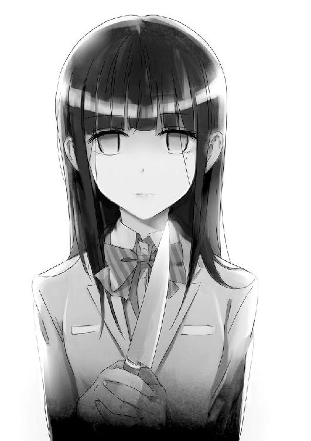
＊
理解は動かない。宮越さんの動きが綺麗だと思った。
バスケットの試合なんかで、うまい選手が、最短最小の動きで相手をかわしてシュートを決めるように。宮越さんもまた躊躇わず、刃を立てて真っ直ぐに、理解を狙っていた。
普通なら、こんな突発的な事態に誰も対応できない。
だが......だが。
僕の体は、気づけば勝手に理解の前に立ち塞がるように、一歩を踏み出していた。「ひっ......！」
宮越さんの顔色が変わった。狼狽えた表情、慌てて手が動いて刃が引かれる。だが少し遅い。その尖った先端は、僕の胸を。
ちくっと、針よりも太いものに裂かれた感触がした。それほど痛くはない。代わりに熱い。じんわりと痛みが、血と共に広がってゆく。
包丁がコンクリートに落ちて、甲高い金属音が響く。
それに再び手をかけて、宮越さんは理解を睨んだ。
「殺してやる......！ あんたのせいで、よくも！ よくも......！」
「あはっ！ あはははははははははははっ！」
跪いた宮越さんを見下ろして、理解が大口を開けた。
「是非やってくれよ副委員長様。さあ早く！ この俺様を殺してみるがいい！」
理解の双眸が見開かれる。蛇に睨まれた蛙のように、宮越さんは動かなくなった。
「引っ越しでもすりゃいーじゃねーかよバカが！ これだから温室育ちのお嬢様は、ちょっとからかっただけでビービー喚きだしやがる。それともお前はマゾなのか？ もっとやって欲しいのか？ 構わないぞ、俺様はいくらでも」
赤い目を輝かせて、嗤う。
「いくらでも、暴いてやるよ」
「......ううう、うううう」
宮越さんは身体を震わせながら、怯えた視線を地面に向けていた。
「宮越さん、ごめんね......」
僕が謝ると、うっすらと血糊のついた包丁が、再び落ちて高い音を立てた。
「謝らないでよっ！」
悲痛な叫びが、膝立ちの宮越さんから聞こえてきた。
「どうせあなただって、軽蔑してるんでしょ！ そうよ！ そうなのよ！ あたしは、あなたを助けるためじゃなくて、あなたを困らせたかった。そうすればクラスのみんなも、あなたよりあたしを見てくれるし、あなただってあたしのことを、もっと......。でも......」
ぽたぽたと、茜色の歩道に、雫が数滴落ちた。
「うまくやってるだなんて、あたしだけが思ってたのよ......。さっき分かった。あなた以外、誰もあたしを庇ってくれなくて、結局優等生だなんて八方美人、見抜かれてて、ほんとはみんなに、嫌われてたなんて......」
その場にうずくまって、小さな嗚咽を上げる。幼い子供のように、小さな背中だった。
「............」
少し前に、宮越さん自身からぽつりと聞いたことがある。
彼女の家は、大学の有名な研究員の家系で、親は成績にしか興味がなく、宮越さん自身も勉強と生活態度を強制されていることを。そこに暖かな家族関係はない。
他のみんなは、きっと知らないと思う。
だからきっと、仮に理解の言うことが本当だとしても、僕はそれを信じたい。
自分のことを見て欲しいって、その願いは、決して悪いことじゃないと思うから。
「嫌いになんか、ならないから」
宮越さんが僅かに顔を上げた。潤んだ瞳で、恐る恐る僕を見つめていた。
「僕は、嫌いになんかならないから、また学校で会おう、約束だよ」
「くっ......ううっ......ううううう」
そっと肩を抱いて、慰める。
本当は傍に居てあげたいけれど、今は遥香のことがある。
すすり泣く宮越さんにハンカチをあげて謝り、僕は理解の車椅子を押して家に帰った。
＊
傷は思ったより浅かったが、薄皮一枚というほどではないので、それなりに痛い。血の滴るワイシャツを脱ぎ捨てて、治療をする。
意外にも、理解が《スレイプニール号改》についていた治療キットを貸してくれたので、割と簡単に事は済んだ。痛みはあるけど、耐えられないほどじゃない。
夕食に、白いご飯と豆腐とネギの味噌汁、残り物の白菜で巻いた偽ロールキャベツを食べる。
淡々とした食事の光景だったが、やはり理解はおかわりした。
「ん、ダメだな......やっぱりちっと調子が悪い。さっきこけたときに、コントローラーがずれたかもしれないな」
食事が終わると、理解は車椅子をいじりつつ、何故か小さく舌打ちしていた。
そして、入浴の時間。
「なあ、れーくん。たまには一緒に風呂でも入らないか？」
「......一人で入れるでしょ？」
「今日はなんか足の調子が悪いんだよ。ついでに、この解答を教えてやるからさ」
と、理解は自分の太ももを撫でつつ、《Skill》のカードを取り出してみせた。
ようやく、具体的な能力の解説をしてくれるらしい。今更ではあるが、残りのチャンスのことを考えておくと、聞いておくにこしたことはない。
「......お風呂場で変なことしない？」
「する」
僕の問いに、理解は再びいい笑顔を見せた。
「じゃあ一人でがんばってね」
「あはは、れーくんはウブだなあ、何もしねえよ」
楽しそうに笑うと、理解はさっさと服を脱ぎ捨てて、バスタオルを身体に巻きつけた。
「ほら、これならいいだろ？」
「分かったよ......」
理解を抱っこして、先に浴室の椅子まで運ぶ。
続いて僕も服を脱いで、腰にタオルを巻き、浴室へ向かった。
なんというか、理解を《女の子》と意識したことは一度もないけれど、さすがにどきどきしてしまう。
そして、体を洗い終えると、僕と理解は、背中越しに湯船に浸かった。
「......っふう、傷の調子はどうだ？ れーくん」
「別に、血は出てたけど、たいしたことじゃないよ」
「そっか、命拾いしたな」
湯煙の中で、理解がほっと息をついた。僕の胸の血は既に止まっていたが、お湯に触れるわけにはいかないので、少し身を起こしたままだ。
「そういえば、どうして殺されそうになったのに、逃げなかったの？」
僕の問いに、理解はほんの間をおいて、答える。
「君こそ、何故わざわざ俺様を庇った？ 心配してくれたのか？」
「まあ、一応......ね」
こんな性格の子でも、目の前で死なれたら寝覚め悪いし。
しばしの沈黙と白い蒸気が狭い浴室を満たす中、やがてぽつりと、理解が呟いた。
「どうしても何も、あの副委員長様は、初めから俺様を殺す気なんてなかったよ。ただビビらせるつもりで、君が前に出てきたから焦ったのさ」
「どうして、そんなことが──」
断言できる、そう反論しようとすると。
「見れば分かるさ、れーくん。俺様は五感で相手の心理状態をつかむことができるのさ。それが、俺様の特殊能力だ」
理解はついに、そう言い切った。
「対象が発する音、匂い、所作、体液、脈。それらを思考ではなく、感覚そのもので読むのさ。話し方で噓だと分かったりもする。直接見なくても、匂いだけで相手が怒っているか、喜んでいるかも分かる。それを突き詰めれば、例え機械越しにだって、相手の心理状態を把握できる」
「............」
「この能力は全身の感度に比例する。読みにくい相手や、情報が限られた状況、あるいは重大な質問をする要所では、限界まで集中してアンテナを伸ばす故に、短時間での連続使用はできないが......。日常会話レベルじゃ、使うまでもなく筒抜けだ」
ふと、どこかで読んだ小話。意識して情報を得ようとすると、または興味のあるものに対しては、瞳孔が大きくなるという説が、僕の頭の中をよぎった。
「ベースとして植え付けられた記憶能力と認識能力。それを元に、全てが見通せる魔力という意味で、連中には《無数に扉のある高座》と名付けられている。ま、名前負けしてる能力だけどな」
苦笑の声を浴室に反響させて、理解が続ける。
「れーくん、俺様があのゲームで、中堅以上のプレイヤーばかりと戦っていたことは、君も既に知ってるだろうが、別にプレイ記録を考察なんぞはしちゃいねえよ。リアルタイムでゲームを観察しておいて、噓をつくタイミングや法則、タイプのリズム、文章の流れによるテンションの変化を観察していたんだよ」
「............」
「直筆ならかなりの情報が得られるが、機械のタイプでも慣れれば九割九分読めるさ。直に会って話をすればもっと、体に触れれば更に......」
「って、まさか......！」
僕が湯船で身をよじると、理解がぱっと明るい笑顔を作った。
「そのまさかだよ、れーくん。さて、俺様が君とスキンシップを始めてから、何回タッチしたか、果たして覚えているかな？」
「............」
笑いかけた理解の目が、そっと湯船の中に逸らされる。
「安心しろ、まだ分かってない。君だけは本気で読もうとしても、どうにも、読めないんだ」
「読めない？」
「ああ、ある程度はもちろん分かるんだが、底が知れないというか。俺様の読みを信用できないというか。そういう不可解な気分になる」
「どういうこと？」
「君は君自身を、疑っているんじゃないかということだ。君自身も、君の本心が分かっていない。信じていない。だから、つかめない」
「......それで、僕を助手にしようと？」
「ああ、気に入ってな。だけど勘違いするなよ。『好き』じゃないぞ。お気に入りなだけだ」
「好きじゃないの？」
「ああ、好きだとか、愛してるなんてのは、聞くのも言うのも鳥肌が立つ。俺様はダメなんだよ......そういうのは」
理解が浴槽の水面を見ながら、ぽつりと呟いた。
「君らしいね。でも、なんかその方が、ほっとするよ」
「君もおかしなヤツだな、れーくん。うわっと......」
背中合わせの理解のバランスが崩れて、顔が湯船に沈みかけるのを慌てて助ける。
「足、動かないの？」
「ああ、別に障害がある訳じゃないがな。筋肉も弱ってはいるが、定期的に動かしてはいるから、立てないほどじゃない」
「でも、歩けないの？」
湯船の中でほどけたバスタオル。体を支えつつ、なるべく理解から顔を背けて、裸を見ないようにする。
「歩かないんじゃない、歩けないんだよ、れーくん。俺様はそういうふうに飼い慣らされてきた。親父に動いたら殺すと脅されて、監獄のような部屋の中で、何人もの客を取らされてた」
「............」
「最初に覚えたのは、変態的な客の機嫌を伺うこと、しくじれば殺される世界だ。やがて恐怖と痛みにも慣れると、今度は別のものが見えてきた」
理解の言葉が淡々と紡がれる。
「別のもの？」
「客が階段を登る音、ドア越しに息をする音でも、感情が分かることにな。そして、ある日突然、俺様は気づいたんだ」
「何に？」
くすり、とその問いには答えずに、理解が笑みを零す。
「れーくん。人の心が分かるようになった俺様は、次に賭場に立たされた。そして、この読みで連勝を続け、徐々に親父にも認められるようになった。《探偵殺人ゲーム》のギャンブルもそのひとつだ。当時はまだネットでは普及せず、カードゲームだったがな」
僕の問いの答え、それは理解の認識たる特殊能力のようだった。
「ところで俺様はな。心が分かると言っておきながら、親父のことだけは意図的に読もうとしなかったんだ。怖かったから。もし、親父が俺様を嫌いだったらと思うと、恐ろしくて読めなかった。いつも親父の足音が聞こえると、耳栓をして目を逸らしていた。言葉は唇を読んで聞いていた」
「............」
「だが、ある日。大一番の勝負に駆り出された時、知ってしまったんだよ。親父が俺様を殺そうとしていることにな。心を読み始めた俺様を気味悪がっていることに、気づいてしまった。だから殺した。他の誰もが分からなくても、俺様は知っていたから」
消え入るような声が、浴室の壁に反響して、ぼやける。
「親父は本当にゲスな野郎だった。でも、俺様は好きだった。例え、それがストックホルム症候群のような錯覚で、真実ではなくともな」
理解が、僕の胸にぴったりと背中をつけて、呟く。
「二年前......あのゲームで君の心が読み切れずに負けたときから、ずっと思っているんだよ、れーくん。もしだ、もし俺様の読みが百パーセントじゃないんなら、あの日に俺様が殺したのは、何だったんだろうか？」
「............」
「好きだと思っていた人間......好かれていると思っていた自分。最後の答えは、まだ出ないままなんだ......」
ちゃぷちゃぷと、理解が二本の指をバタつかせて、湯船に小さな波を作る。
「そして、俺様は月見月に捕獲されてからもこの力を利用されて、今は探偵なんぞをやらされている......」
「............」
「歩くことを許されず、人の顔色だけ見て育ち、俺様はこの能力を得た。だから、歩くことで、その心理的な枷が外れて、能力が消えてしまうかもしれないと、そう月見月の連中は危惧している」
まるで、耳の良かった盲人の目に光が戻れば、その耳の力も失われてしまうように。
「ちなみに、ヤツらに機械を埋め込まれたおかげで、能力を使うとお腹にアザが浮き出るんだぜ。ほら、見てみろよ」
「えっ......？」
理解に言われるままに振り返ると、目が合った。
うわ。
風呂のせいで、理解の頰が、ぽっとほんの少しだけ上気したように見える。病的なまでに白い肌も、今は濡れて、うっすらと赤みが差していて、なんだか艶めかしい。
なんだろう。普段異常な行動しか見ていない分、酷く可愛らしく感じられる。
やっぱり、女の子は恥じらいが大事だよな。
いや、まずい、騙されちゃいけない。
今更恥ずかしがってどうする。
透明な水の中に、理解の白い胸とお腹が見えた。アザなんて全くない。その代わりに、小さな記号のようなタトゥーがあった。
そして、バスタオルがほどかれたそこは、一番下まで全く隠れていなかった。
「って、うわあっ！」
僕が湯船の中に大津波を作ると、理解が少しだけ、頰を染めて股を閉じた。
「くすくす、もう、れーくんはえっちだなあ。噓だって分かってるくせに、嫁にいけなくなるじゃねえかよ」
「悪い。もう、あがるよ」
「悪いな、まだつんつるてんで。おかしいなあ、俺様結構大人なのにさ」
「言わなくていいから！ 分かったから！」
もう二度と彼女には騙されない。そう堅く、心に誓って、僕は風呂場を後にした。
＊
風呂から上がり、自室のベッドで、僕は理解と一緒に横になる。
《スレイプニール号改》の調子が悪いみたいだから、夜に目が覚めたら人手が欲しいという理解の要望を、たまには聞いてやることにした。
何故だか今日だけは、不思議と理解に対する不安と悪感情が消えうせていた。
さっき、理解の話を聞いたせいだろうか。
「なあ、れーくん。俺様を酷い奴だと思うか？」
「いきなり何だよ？」
暗闇の中の静かな声。ぶっきらぼうに答えてはみたものの、内心ではかなり動揺していた。
「本当は、したくないんだよ......こんなこと」
布団の中に口元まで埋めて、理解が呟く。
暗くて分かりにくいけど、真顔の理解なんて、初めて見た気がする。
「............」
僕が言えたことじゃないが、散々あれだけやっといて、今更そんな言い方は──。
「卑怯だと思うか？ そうだろうな......。その通りだよ確かに。そう思ってくれて、構わない」
そっと、理解の手が僕の袖を握る。まるで眠れない子供が、誰かのぬくもりを求めるように。
以前と違って、風呂上がりのせいか、その手はほのかに温かかった。
「でも、やらなきゃいけない。月見月としてでしか、俺様は生きていけない。常人が生きるために噓をつくなら、それを暴くことで俺様は生きている」
「............」
薄闇の中で、理解が自嘲にも似た微笑みを浮かべた。
「れーくん。俺様の中に、法則がひとつある」
「法則？」
「誰の本性も見通せる俺様にとっては、分からない人間が、欲しい......」
静かな告白が、僕の部屋に響いた。
「分かるってことは地獄なんだよ、れーくん。どうせ地獄なら、自ら鬼を名乗った方が楽だ。だから、俺様は俺様でいることに、苦痛を感じたことはない」
理解の指が静かに伸ばされて、僕の指に絡まる。
折れてしまいそうなほど細い指。空いている手で自分の首筋をなぞると、かすかに熱が残っている。僕の首についた理解の激昂の跡が、今は、幻のようにすら思える。
「どいつもこいつも、下らねえ噓つきばっかりだ。俺様の周りにたまたまそういうヤツらが集まるだけなのか、それとも、所詮人間なんてそんなもんなのか。俺様には分からねえが......」
うっすらと笑みを浮かべながら、その視線は頼りなさそうに、天井に向けられていた。
「理解......」
「いなかったよ、ずっと。本当に誰も、信じられる人間なんてな。だから、れーくん、俺様は期待しているのさ」
ふっと微笑んで、理解が僕の瞳を覗き込む。
「もしかしたら、まだ心が読めない君は、本当にいい人なんじゃないかって」
ずきりと、胸が痛くなった。それを悟られないように、僕は理解から視線を逸らす。
ぶるぶると、理解の体が小刻みに震えていた。声も出さずに、笑っていた。
「明日だな......明日、もうじき、答えが出る」
「ねえ理解？」
「どうした、れーくん」
「本当に、真犯人を見つけたら、殺すの？」
僕の問いに、理解は再びいつものように口を歪めて、白い歯を見せた。
「ああ、殺すよ」
躊躇わずに言って、そして、静かに目を閉じた。
「それが、俺様の使命だからな......」
そして日曜日、木崎さんと宮越さんからは、何の連絡もこなかった。
達也と遥香は、今日も部活に学校へ出ていた。
「えー、であるからして、だな」
自由参加の午前中の補講授業中、先生の声が酷く遠く感じる。
教室の雰囲気は、何故か理解が来る前のものに戻っていた。ただ、僕には積極的に話しかけないというだけのことで。まるで僕も理解も、この室内に存在していないかのような。
「ん......。むにゃ......」
本来、補講を望む生徒だけの教室で居眠りという、どう見てもケンカを売っている理解の所業にすら、先生は無反応だった。
腫れ物どころではない。もはや、触らぬ神に祟りなしだ。この数日間の奇行と、木崎さんをやりこめたことは、既に周知の事実として広まっていた。
おそらく、耳聡い達也なら、既に宮越さんのことも知っているだろう。
尾行はまだ続けているが、結局のところ、具体的な成果は上がっていない。
だが、理解の滞在は、今日がリミットのはずだから、ネット上で進行している《探偵殺人ゲーム》で、今日まで僕が生き残っていれば、理解が遥香を調べることも、殺すこともできないまま終わる。
だが、問題はそこじゃない。調べられなくなるのは、あくまで『遥香だけ』だ。僕の読み通りなら、理解の本当のターゲットは、おそらく......。
「えーと、そこ、この問題を解いてみろ」
はい、と、クラスメイトが指名されて立ち上がる。
「............」
平穏な授業の中、すやすやと眠る理解を眺めていると、急速に不安が肺腑にこもってゆく。
理解はどこまでつかんでいる？ 遥香と、僕のことを？
実際には殺しなんてしない。理解の容赦のなさは知っていても。心のどこかでは、そう思っていた。
だが、出会ってすぐには実感がなかった脅威が、今は現実として目の前にある。
あの洞察力と、記憶力、人を嘲り騙すハッタリのかけ方。確かにゲームと同じく、ターゲットを確実に殺している。
そして、見え隠れする月見月の力と。昨日目蓋の裏に焼き付いた夕焼け。殴られて嗤い、僕を絞め殺そうとして、宮越さんの包丁を避けもしなかった理解の狂気。
まさかとは思う。自分の身の回りに限って、現実には起こるはずがないと。
馬鹿な。僕はいつまで寝ぼけている。
「おい、都築」
もしかしたら、あれに気づかれるかもしれない。理解に気づかれて、殺されてしまうかも。
万が一にもそうなったら、僕がしたことも、今の生活も、全部台無しになってしまう。
「おい、本当にどうしたんだ？ 胸でも、痛いのか」
やはり手を打たなくては、そうならないように、手を......。
「うっ......ぐっ......！」
しまった、こんな時に。
「れーくん？ 大丈夫か？」
声に我に返ると、寝ていたはずの理解が、机から少しだけ顔を上げていた。
「すごく、辛そうだぞ？」
「......大丈夫だよ」
脂汗の浮いた顔のまま、強がりの笑みを見せて、先生に向き直る。
「すみません。具合が悪いので、トイレに行ってきます」
＊
現実とネット上でのゲームの正念場であるこのタイミングで行動を起こすのは、我ながら怪しさ全開だと思いながらも、なりふり構っている暇はなかった。
すぐに同じ理由で抜け出すよう、部活中のはずの達也にメールを送る。
男子トイレの中に達也を召還すると、僕は呼び出した説明もそこそこに、詰め寄った。
「この前、何を理解に聞かれた？ いったい何だ！ 教えてくれ！」
「それは、だな......。遥香ちゃんが、過去に何か罪を犯しているとか、俺にはよく分からんことで......今ひとつ信じられないんだが......」
遥香の危険な特性。それは、事実だった。
何かしら許せないことが起きたとき、遥香は衝動的に行動してしまう癖がある。
ある意味、僕とは正反対だ。
「他に、何か言われたことはない？」
「あ、ああ......。ないよ。というか、初。あの子は、衣梨花って子は、何者なんだ......」
珍しく達也がびびっていた。
「いやさ、正直。俺も思ってなかったんだよ。あの子はなんか色々と大袈裟だろ？ だから、遥香ちゃんのことを言われても、気にしなかった。でも......。何なんだ？ 俺は、お前らは何をやっているんだよ？ 俺はただ、遥香ちゃんに......」
気持ちは分かる。現に、理解によって学校から木崎さん一派が消され、宮越さんも学校に今日は来ていないのだ。
今まで冗談で済ませていたことが、急に現実味を帯びてきたんだろう。それは、僕も同じだ。
最終日。全ての結果が、今日出ることになる。
やるしかない。理解が本当に犯人を殺そうとしているなら、万一があってはならない。
「頼みがある。今日のデートは、僕の言う通りの場所に行ってくれないか？」
僕は予定通り、賭けに出ることにする。理解の《包丁》をかいくぐるための、賭けに。
＊
そして、まだ空が明るい午後に、最後の尾行が始まった。
達也と遥香が今日向かった先は、コトワックスのカラオケルームだった。
張り込むのにそう難しくはない場所の上に、出てくるまで数時間単位で固定されるので、僕と理解も難なく後を追うことができた。
「二人は三階の部屋に行ったのか......」
「何か問題でもあるのか？ れーくん」
「ううん......だ、大丈夫だよ」
エレベーターで三階につくと、僕たちは隣の部屋に陣取って、息を潜めた。
狭いカラオケの室内で歌われては、轟音に妨げられて盗聴器も効力を失う。従って、僕と理解の耳だけが頼りだ。
僕のはじけ飛びそうな胸中とは裏腹に、実に何事もなく。静かに時間が過ぎていった。
理解はボックスに入る前に持ち込んだ飲み物を全て空にしたが、遥香たちの方は一向に進展をみせない。
そろそろ頃合いだろうか？ 僕は理解の死角で、ポケットの中に手を伸ばした。
「あーもーなんだよ、つまんねえなあ。あれだけ、妹ちゃんは殺人犯かもしんないって脅してやったから、何かそのことについて話すと思ったのによ。トイレに行きたくなっちまったじゃねえか」
もじもじと切なそうに、理解は太ももを擦り合せる。
「だから、先に行っておけって言ったのに......」
当たり前だが、隣に誰もいないことを装うために、僕と理解は一度部屋に入ってから、一歩たりとも外に出ていない。
だが、もう二時間は経っているため、そろそろ帰ってもおかしくはない。
「れーくん......しっ」
突然理解が、口元に人差し指を立てた。
それは、僕が大声を上げてしまったことによる叱責ではなかった。耳を澄ますと、となりの大音量のポップスに混じって、言い争いが聞こえてきていた。
『聞こえるか？ れーくん』
唇の動きだけで、理解がそう話しかけてくる。僕は頷いた。
「何これ？ 誰のよ！ これ！ 誰からなの！」
遥香の悲鳴にも似た声が、カラオケルームに響いていた。
「い、いや。知らない。そんな子もそんな話も、聞いたことは......」
「じゃあ、何で、こんなメールが来てるのよ！ あなたがいなかった日と、ちょうど一致してるじゃない！ 私の他に相手がいるってこと？」
「ち、違う！ し、知らない。本当に知らないんだ！」
ざっとだが、痴情のもつれのような会話が聞こえてくる。
「......やっぱり私なんて、ただの遊びだったんだ。私が頼んだあの件だって」
急に冷めたような口調の方が、空恐ろしい。
やばい、これ以上遥香が本気で怒ると、達也が血を見る羽目になる。
「ち、違う！ だから、乱暴な真似は」
不穏な空気が濃くなった瞬間、どん！ と、僕は床を強く踏み鳴らした。
「......っ！」
達也と遥香が息を呑む音が聞こえた。
「逃げるよ！ 理解！」
僕は車椅子のハンドルをひっつかむと、急いで部屋を飛び出て、カラオケ店を後にした。
＊
一時間後。
何とか気づかれないように僕たちは店から逃げ出し、自宅に辿り着いた。
理解は帰ってくるなりソファーでくつろぎつつ、なにやら神妙な顔で天井を眺めている。
危ないところだった。
「しかし意外だったな」
ぽつりと理解が呟いて、思い出したように身を起こした。
「ああ、達也が浮気してたなんて、びっくりしたよ」
「ちげーよ、れーくん。意外だったのはそこじゃない。あの後、かすかにだが、灰皿をつかむ音が聞こえた。マイクじゃなくて灰皿だ。一緒に部屋に入った君なら覚えていると思うが、ガラスでできた相当ゴツイやつだ。つまり妹ちゃんはそれで色男をぶん殴る気だった。浮気を見つけたにしちゃ、ちょっと過激だと思わねえか？」
「さあ......」
曖昧な返事をすると、理解がじっと僕の目を見据えていた。
「ところで昔、君の妹ちゃんは、かつて似たような事件を起こしてるよな、れーくん」
確かめるような口調で、理解が笑む。
「っ......」
やはり、知っていたか。
「小学校の頃に二回。中学でも一回。友人が酷いイジメに遭ったことにブチ切れて、カッターナイフまで持ち出して応戦したとか、階段付近で殴りかかって転ばせ、足を折らせたりとか。いろいろ武勇伝を持っているらしいじゃないか」
「どこで、そんな話を......」
「何故あの子が疑われていたのか、その理由を探っていたら、昔の同級生が教えてくれてな」
「............」
「君の妹ちゃんは、実は酷く怒りっぽく、納得できない理不尽には、黙っていられない性格のようだ。ならば《君のお父さんのやったこと次第》では、犯人の可能性も、充分にあり得るということだな」
理解はゆっくりと身を起こして、車椅子に乗った。
「さて、最終日だな、れーくん。そろそろ俺様も、本来の役目を果たすとしよう」
「本当に、遥香が犯人だと思ってるの......？ うっ......、ぐっ......！」
突然沸き上がった胸の痛みに、思わず声がどもる。
一抹の不安が胸を締め付ける。
「どうした、れーくん？ 顔色が悪いが」
「何でもない。ちょっと疲れただけ、だよ」
精一杯の強がりを浮かべて、理解を見据える。
「じゃあ、ちょっと真犯人を取り調べに行ってくる。君はここで待っていろ」
パタンと、居間の扉が閉められる。辺りがシンと静まった。
だが、心配はしていない。やれるだけのことはやった。これで最悪の事態には、至らない──はずだ。
しかも、目の前からいなくなってくれるのなら、それはそれで好都合だ。
極度の緊張で、僕はこれ以上、演技をしていられる余裕がなかった。
「くうっ......」
どうにか部屋に戻り、薬を唾で飲み込んだ。
やれることはやった。
遥香の癇癪は一度過ぎれば少し落ち着くから、達也も殺されることはないだろう。
別れることにはなるかもしれないが、最悪、それは仕方ない。
僕は自室に戻り、ベッドの上に寝ころんだ。しばらく天井を見上げていると、薬と疲労のせいか、意識が急速に闇の縁へと、滑り落ちていった。
＊
まどろみの中で、浅い夢のようなものを見ていた。あの時のことを。
僕がいなくなった父さんを探しに出た夜の日、あの少し前の生活のことを。
あの頃は、本当に酷かった。
父さんが騙されて多額の借金を背負い、精神科病院に入院する少し前、ちょっとした事件が起きた。ある日、父さんがお風呂を空焚きしてしまい火事になりかけたのだ。それを見た母さんは、必死の形相で、父さんの胸を叩いていた。「どうして、こんなことするのよ！」と。
そのときヒステリーを起こしていたのは母さんだったが、僕は父さんの表情の方を、よく覚えていた。
あっけにとられた表情、父さんの顔に悪気はなく、ただただ驚いてた。
たぶん、父さんに心中願望はなかった。ただあれは、本当に疲れていてお湯を汲み忘れていただけなんだと思う。でも、その事件以来、借金のことでギクシャクしていた父さんと母さんの間には、ますます深い溝ができてしまった。
母さんは、火事を起こしかけた父さんを、何か人でないものを見るような目つきで見始めたし、父さんもまた、何か怯えたような視線を僕たちに向けるようになった。
遥香は、どうして父さんが僕たちを避けるようになったのか、よく分からないって言ってたけど。
僕には、父さんの気持ちが分かる気がする。
きっと、怖かったんだ。
僕たちに責められていると思っていたんだ。その視線だけで責めていると思っていたんだ。
あるいはその存在だけで、自分を責める人間がいると思うだけで、怖かったのかもしれない。
父さんの友人が、平気な顔で父さんを裏切ったように、長く連れ添った母さんが、恐ろしい顔で父さんを責めたように。優しく接してくる僕らも、励ましてくる声も、実はその裏側で、父さんに対する恨み辛みを滾らせていて、いつその化けの皮が剝がれて自分に襲いかかってくるかと、怖くてたまらなかったに違いない。
「初君って、素直でいい子ねえ」
正直者はバカを見ると言われながら、何故幼い時分の正直というのは美徳だと言われたのか、今は分かる。
それは、ヘタな噓をつかれると面倒な大人が、とりあえずありのまま喋らせておこうということなのだ。正直者であれ、というのは、ただそれだけの理由に過ぎない。
善悪の匙加減の分からない利口より、正直なバカである方が、大人たちにとっては都合がいいからだ。
しかし、ある程度歳をとると、今度は自分を守るための噓と、そして自分の利益を得るための噓をついてゆかねばならないことに気づく。それは悪いことではなくて、生きてゆくための必然であり、努力だ。
食事をすることが悪であってはならないのと同じように、噓をつくことも、また然りだ。
だが、いい人は確かに存在するが、この世界には悪人も存在することは、純然たる事実だ。
いや、それも少々語弊がある。世界は、まるで湖のように、澱みが濃いところと薄いところが混じり合っているが、中には綺麗な水でしか生きられない淡水魚のように、この世界がまるで合わない人間も存在するのだ。
生きているのが、苦痛な人間も存在するのだ。
命は尊いとか、自殺は絶対にいけないこと。そんなことはよく言われることだけど。
じゃあ、そういう人は、死にたい人の面倒を見てくれるのだろうか？ 生活できるお金と心をくれるのだろうか？
そう間の抜けた見当違いのことを口にすると、お金で雇われた人以外は、決まって二つの答えを返す。
『甘ったれるな』と、『負け犬め』だ。僕は、酷くその通りだと思う。
恐竜は死んで、ネズミは何故生き残った？ 生物は戦い、適応して生きていかねばならないのだ。
「人の命はなあ！ 地球より重いんだ！ 簡単に誰かの命を奪ったり、自分から捨てたりするなんてことはだなあ！ 絶対にしてはならない！」
中学の頃、同じ中学生による自殺が多かった時期のある日。五時間目の数学の授業が潰れて、全校集会で体育館に集められた。夏場だったので、体育館の中はうだるように蒸し暑かった。まるでサウナだった。そこで、学年主任の──接点が薄かったので、名前までは思い出せないが、四十後半の角張った顔つきの、少し髪の厚みと色が薄くなり始めた男の先生は、ステージの上でそう熱弁をふるっていた。
『人の命は、地球より重い』
僕はこのとき、耳を疑って、直後に噴き出してしまった。
一応周りに人はいて、それなりに騒がしかったから気づかれなかったが、空気も読まずに、顔に笑みまで出してしまった。
あまりにおかしくて、くだらなくて。
こんなおためごかしで、今時の中学生に説教したフリをしているなら、いくらなんでもネタが酷すぎる。それともまさか、本気で、この先生は百パーセント掛け値なしにこんなことを言っているんだろうか？ あり得ないだろう。まあ、先生だけがそういう価値観を持っているのなら、それはそれで──いやないな、あり得ない。絶対に噓だ！
もし完全に本気でそう思っているのだとしたら、先生にとっての地球は、ヘリウムガスより遙かに軽い存在と言わざるを得ない！
僕は、僕は......違うんだ！
妹の、遥香のためなんだ。全部、家族のためなんだ。父さんの......ためなんだ。
あのままじゃ、いずれすり切れて家族は崩壊していた。みんな終わるんだ。
僕たちは、生きるために努力をしなくちゃいけない、例え、切り捨ててでも！
月のない夜、二回目の仮退院の日、父さんの誕生日。
生まれた日、死んだ日。
星のない夜空。
遠くに見える吹きさらしの非常階段と、人影。
目の前がチカチカする......吐き気がする、心臓が痛い。
また噓をついた、優しかった父さんとは違う、父さんを騙した人のように。
結局は僕も、宮越さんを利用していたに過ぎない。理解の真意を探るために。
苦しい......、薬が欲しい、早く薬が！
「............」
目が覚めた。寝汗でじっとりと背中が濡れて気持ち悪い。
いつの間にか完全に日は落ちて、カーテンが開いたままの僕の部屋の中は、暗闇に包まれていた。
まだ痛む胸を押さえて、静かに呼吸を整える。
そうだ。確認を忘れるところだった。ネット上の《探偵殺人ゲーム》は、どうなった？
痺れる体に鞭を打って、パソコンの電源を入れる。起動の終わりを待って、インターネットのブラウザを開き、サーバーに接続、ゲームチャットにログインする。
『DEAD END あなたは何者かに殺害されました。《ダイイングメッセージ》First=End』
死んでいた。
昨日の時点で、殺人鬼に刺されて、僕は。
理解に渡した《チェーンロック》に記した文字列、始まりと終わりを意味する数。僕の昔のハンドルである『０』を意味する暗号が、他プレイヤーに遺言として表示されているはずだ。
思い出した。このハンドルもその時考えたはずだ。僕の父さんの名前、僕と同じ、一が無に帰した時に。
「............」
いずれにせよ、今日ついに、遥香が調べられてしまう条件は、整っていたということだ。
ダメだったか......。粘ったんだけどな。だが、これでいい。後は、理解が僕の罠に落ちてくれるのを待つだけだ。
ふと、手元に《Murderer》のカードが残っていることに気づく。だが、これには何も書く必要がない。真犯人は不要だ。何故なら......。
きりりと、心臓が締め付けられる。そんなことより、今は薬を──。
「くすくす。探し物はこれかな、れーくん」
背後を振り向くと、部屋の薄闇の中に、理解の笑顔が浮かんでいた。
「そろそろタイムリミットだ。それでは、最後の審判を始めようか」
初めて教室で会ったときと変わらぬ表情で、理解はそう静かに告げた。
＊
「さて、この事件における俺様の見解をまず端的に言おうか？ れーくん。君は酷い人間だね」
「いきなり何だよ」
理解が薄い笑みを見せつつ、膝の上にあった紙袋から、おもむろに錠剤を取り出した。
「本当に残念だよ、れーくん。君がこんな簡単な罠に落ちてしまうなんてさ」
「──それは」
白い紙袋とパックされた錠剤。僕の飲んでいた、精神安定剤だった。
「調べてみたが、この薬を君がもらい始めたのは、お父さんの死んだ日から二ヶ月後らしいな」
「......そんなことより、遥香は調べたの？ 犯人は──」
僕の問いには答えず、理解は静かにかぶりを振った。
「違うな、君だよ。君がお父さんを殺したのさ。高所恐怖症なのは、そのトラウマだろう？」
「意味が......分からないよ。何を言ってるの？」
僕の問いに対する返事の代わりに、理解は一枚の紙を、車椅子のボックスから取り出した。
「あの事件の直後、君たちは引っ越している。当時君は社宅の七階に住んでたが、今は一階だ。だからまあ、特別どうということはないが、外出して高低差のある場所を通った後は、君は人目を忍んで薬を服用している」
その用紙を机に置く、僕の処方箋のコピーだった。だが、あれは確かに......。
「君のゴミ箱から、裁断された診察結果をつなぎ合わせた。君は風邪薬だと言っていたが、これは精神安定剤の一種だ。そして君自身は自分から高いところには、一向に上ろうとしない。上ったとしても、薬を欲しがるか、下方から目を逸らしている」
「何が言いたい？」
「つまり君は高いところに上らないのではなく、ある一件以来、上れないのだと」
「......そんなことくらいで、僕を犯人扱いするの？ 探偵が聞いて呆れるね」
僕の反論に、理解が目を細めた。
「あのカラオケルームで騒ぎになったメールについては、調べ終わった。妹ちゃんと色男が会っていない日に遊んでいたという話を、知らない女が送ってきているということだった」
「......達也も、そんなヤツじゃないと思ってたのにな」
吐き捨てるように言う。
「違うなれーくん、それは間違いだ。君がいつその仕込みための端末を用意したのかは知らないが、問題はそこじゃない」
宮越さんに用意してもらったメール送信用の端末は、既に処分してある。証拠は残っていないはずだが──。
「問題は、その内容から得られる情報についてだ」
ふと、理解が背後に手を回す。部屋を調べたとき見つけた遥香の日記が、そこにあった。
「デートの内容を詳細に書いてあるこの日記を見れば、《妹ちゃんと彼氏が接触していない空白の時間が分かる》あとは二股の女のふりをして、その間の情事を捏造してまとめ、妹ちゃんにメールで送りつければいい。当然、思い当たる節のある妹ちゃんは激怒する。俺様の前で、危険な本性を曝け出す。君はそこまで読めたはずだ。妹ちゃんの性格を深く知っている、君であれば」
「......そんなの、ただの偶然──」
「そうかい、実はこんなものまであるんだが？ これは他人の空似かな？」
にたりと笑って、理解は小脇に抱えていたノートパソコンを開く。その画面内に映されていたのは、遥香の部屋と──。
「なっ......！」
そこからノートを拝借する僕の姿が、はっきりと映っていた。
「面白いだろう？ 君は発見できなかったようだが、俺様が常備している盗撮、盗聴器はほぼ視認は不可能だ。いつの間につけたか分かるまい。君は俺様を監視していたつもりのようだが、考えが甘かったな」
「............」
やはり、あの七つ道具はフェイクだったのか。
「さて、話の続きをしようか？ 君は事件当日、一度家から出ているね。そして『お父さんは見つからなかった』と言って戻ってきている。その間に君はお父さんを手引きして、最上階まで運んでやった。その後、お父さんは無事に自殺し、君は死体を確認に外に出た。そう妹ちゃんは予想していた」
唐突に、《遥香の予想》が出る。それが意味することは。
「何故なら妹ちゃんは、君がお父さんの死をちっとも悲しまなかったことを知っているからだ。それどころか死後、君はこれで、自分たちの生活は救われたと言ったらしいじゃないか」
「っ......！」
何故、理解がそのことを知っている？ 遥香と個人的に接触した機会は、なかったはずだ。
「............」
そうか......。やっぱり、そういうことだったのか。
「......なるほど、じゃあ、あの帰宅時間の予言も、僕の個人データも、ネット越しに僕のパソコンからデータを抜いたんじゃなくて」
本当の依頼人は、遥香だったのだ。おそらく、達也のコネを使って依頼をしたんだろう。
クライアントである遥香が、理解に提供した情報。それならば僕や家族の詳細データを知っていて当然だ。同様に帰ってくる時間だって、遥香が理解の端末に一報を入れるか、帰宅時間を分単位で約束していれば済む話だ。
《探偵は探る相手の近いところに潜り込む》
そのターゲットが僕ならば、遥香より僕の方が近い。
ターゲットの兄の恋人より、ターゲット本人の恋人に。
ならばこれは何のフェイクもない。原則通り、基本に忠実ということだ。
つまり理解は、もう他の解釈など一切のしようもなく。僕が犯人であると、そう言っていた。
「君は、お父さんの失態で生活が貧窮し、追い詰められていた。精神病かつ障害持ちである父親という荷物を抱えていては、これからの持ち直しつつある生活の妨げになると」
射抜くような眼差しが、僕の瞳を捕らえていた。
「お父さんを愛する妹ちゃんに止められないよう、留守番を言い聞かせ、その隙にふらついていたお父さんを、最上階まで連れて行き、君は自殺を見届けた。そして、そのショックで君は、高所恐怖症になった。そういうことだったんだろう？」
「............」
「俺様は君に色々と依頼の内情をバラしつつ、同時にプレッシャーをかけていった。君は自分が殺されるという恐怖に耐えかね、俺様の仕事に協力するフリをして、密かに妹ちゃんを身代わりに差し出す機会を狙っていたというわけだ」
「そっか......。じゃあ、君が、自分の父親を殺したという罪を告白したのも......」
『殺人歴の告白』をし、僕にプレッシャーをかけるための、仕掛けのひとつというわけか。
「そういうことだ。追い詰められた君は、恐怖に耐えきれず保身に走った。妹ちゃんを守るのではなく、俺様に狙わせるように、演技と工作を行った」
理解が息を少し溜めて、狂気めいた笑顔を見せた。
「最低だよ、れーくん！ 君は人間の風上にも置けないよ！ 酷い人間だよ！ あれだけ学校じゃいい人らしく振る舞っていて、平気で人を陥れられるんだな！ このゲス野郎が！」
......終わった。
ベッドの上に腰を下ろしてため息をつくと、目の前に、ゆっくりと理解がやってきた。
「酷いよ、れーくん、信じてたのに......」
くすくすと心底楽しそうに含み笑いをしながら、帽子を目深に被って顔を隠す。
どの面下げてそんなことを。
「れーくんは、絶対いい人だって、思ってたのにさ......」
「勝手に勘違いしただけだろ、騙される方が悪いって、君もゲームで言ってたじゃないか」
「ふふ、ふふふふ......」
理解の目が赤く光った。気を取られた瞬間、顔を引き寄せられ、素早く唇が奪われる。
「......っ！」
風邪薬のような苦い味が、僕の舌の上に広がった。
ちゅぷっと、淫猥な糸が引いて、理解が上唇を舐める。
理解の能力。一番深い、接触。
底の知れない赤い瞳の奥で、理解は一体、何を見ているのだろうか。
「おぞましいよ、れーくん」
いやらしい笑み、動けない獲物を前にした、獣のような。
「君は、人間じゃない」
「............」
そこまで言われたか。
人情や恩を計算して、善人を装い、実の父にさえも仇で返した。
正体がバレて殺されるのが怖くて、実の妹をも身代わりに差し出した。
「そっか」
不思議と、その一言にほっとする。笑みすら浮かぶ。
「れーくん、ちょっとは反論しろよな」
「僕は、君に殺されるのか？」
胸を撫で下ろして、肺の空気を絞り出した。
見つめ合ったまま、十数秒が過ぎる。
「ふっ、ふふふふふふふ」
突然理解が、顔を押さえて笑い出した。
まるで、睨めっこに耐え切れなくなった、子供のように。
「あはははははっ、はははははは！」
「何がおかしい？」
「あはははははは。あはははははは！」
ブウンと、僕の太ももの付け根近くが震えた。携帯のバイブレーションが起動した。
「あはははははは！ あっははははは！」
なんだ、この感覚は。いや、とりあえず、電話に──。
相手は非通知だ。何故指が震える？ 通話ボタンを押さなくては......。
「初君か!? 君が、都築さんの息子の！ い、いいか、落ち着いて聞いてくれ」
「......？ えっと、どなたですか？」
通信をつなぐと、聞き慣れない声。酷く切羽詰った口調に、かえって僕は冷静になる。
「同僚の高峯だ。君のお母さんが、ついさっき、車にはねられて......その、亡くなった！」
「え......？」
「少し前に、突然猛スピードで車にはねられて......ひき逃げだ。病院に運ばれたが、もう......。場所は......」
......は？
頭の中で何かがぶつりと切れた音がした。
何だって？ 今なんて言った？ どういうことだ？
何が起きている？ どうして、母さんが......。
「............」
「くっくっくっく、あははははは」
理解が嗤っている。背筋を冷たいものが走る、肘掛けの液晶が赤く光っていた。
木崎さんの時と同じ......。まさか......、まさかこれは......！
「今すぐこちらへ来てくれ！ 迎えに行くから──」
「......っ！」
電話を投げ捨てて、僕は遥香の部屋へと走った。
開いていた。僕と遥香を隔てていたはずのロックは外れていて、簡単にドアが開いた。
「うわああっ......！」
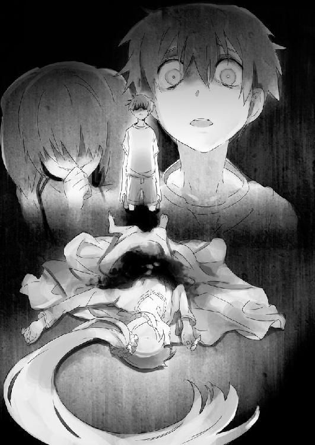
血みどろだった。部屋中に赤いペンキをぶちまけたようだった。ただひとつの違いは、シンナーの刺激臭の代わりに鼻を刺したのは、鉄の......血の臭いだった。
「うっ......うううっ！」
ベッドの上に遥香が寝ている。目を閉じて、呼吸の音は聞こえてこない。胸の辺りから、真っ赤なものが溢れて、下のシーツとカーペットをぐしょぐしょに浸していた。
なんだこれは......。なんだ、これは......。
「くすくす、何を慌ててるんだよ、れーくん」
きゅらきゅらと、背後から車椅子の駆動音が追ってくる。
惨劇の部屋に入った理解は、遥香の死体に動じることもなく、ただ嗤っていた。
「殺した、の？」
「あはは、あはははは」
「殺したの？」
「ふふふふふふふ、あはははは！」
「殺したの!? 母さんと、遥香を！」
理解が笑い声を止めて、応じるようにゆっくりと、頷いた。
「どう......して」
膝から力が抜けた。カーペットの上に尻餅をつく。だらりと四肢が垂れ下がった。
「痛快だな、れーくん。いや、滑稽だと言い直そうか？ 君の思いやりのせいで、君の妹ちゃんと、お母さんを殺してしまった」
「どういう......こと？」 そう聞きつつ、頭のどこかで答えが分かっていた。
「外れたからだ、れーくん。俺様の言葉を覚えているかい？ クライアントはこの依頼のために命を賭けた。君の妹ちゃんには確信があり、万が一ターゲットが真犯人でなかったならば、代償としてその命をも差し出して構わないと。そして、彼女は狙いを外したので、死んで貰った。だが、依頼は生きている。それで俺様はターゲットを予定通り、殺したまでだ」
「............」
理解が《Killer》のカードを指で弾いてよこす。遥香でも僕でもない、理解の《能力》によって調べられた人間。そこには《都築みなで・あたり》と、あった。
父さんを死に追いやった犯人は、僕の母さんだと。そう、理解は言っていた。
「既に君のお母さんには電話して、《確認》はした。俺様の感覚では全く問題なくクロな上に、君らにも、ワケの分からない電話がかかってきたと電話をする様子はない。つまり、心当たりがあった。そういうわけで、始末させてもらった」
「母さんが、どうして......？」
「ああ、そうそう、ついでに言っておくが、君のようなのは高所恐怖症とは言わない。本物の、こんな強めの薬を飲まなきゃいけないのは、そもそも高いところに上がることすらできないんだよ。一メートルくらいの高さでも、透明な水の底を見て、深さを想像することすら困難だ」
もしかして、昨日、理解が風呂の中を見るようにし向けたのは、その意味も。
「初めて君と会ったあの日、屋上からちらりと下を見ていたが、あんな真似は、そもそもできるはずがないのさ。すなわち君は──ただの心労で、父親を死なせてしまったことに対するトラウマで、そうなってしまっただけだ」
「でも、そうだとしても！ どうして、母さんが......！」
今まで、ほとんど話題にすら、出てこなかったのに。
「理解できねーなあ、れーくん。俺様、全っ然理解できねえよ」
唇の端をつり上げて、理解が凶笑を見せる。
「言ったろ、君のお母さんはお父さんの遺体を確認次第、すぐに一一〇番したって」
「それが......どうして？」
「ふふふ、こういうことは面白いもんでな、れーくん。常識的に考えて、普通これはもう助からねーだろ、って思う大怪我ですら、あるいは血糊ベトベトの殺傷沙汰ですら、十中八九最初に呼び出されるのは救急車の方だ。息が止まって一時間近くした人間、十二階の高層ビルからダイブしたヤツ、まあフツーに考えりゃほぼアウトだが、実際はそうなんだ。でも、君のお母さんは真っ先に、迷いなく警察を呼んだ、何故だ？」
「......気が動転してたんじゃないの？」
「逆だろ？ 『気が動転してなかったから』なんだよ」
「............」
「気が動転してたってことは、冷静な判断ができないっつーことだ。闇夜の中の、何階からかも分からない高所からの落下、それでも僅かな望みにかけてしまいたいというのが人情ってもんだ。ましてや家族だぜ？ 俺様には常識なんてものはないけどな、れーくん。一般人なら常識的に考えてこれはあり得るんだろうか？ なあどう思う？ 俺様には全っ然理解できねーけど、常識人の君はどう思うよ!? なあ！」
「っく......」
返す言葉が、とっさに出てこない。
答えはただひとつだ。母さんはおそらく知っていた。父さんが落ちた高さが、助からないものであることを。
そして、助ける気もなかった。
ただ自分のアリバイを証明し、後腐れなく事を終えるために、おそらく──。
「なあ、れーくん。俺様が本当に君を疑ったのは、別にこのことじゃねーんだ。こんな簡単なことを念押ししたときに、聡明な君が、異論を挟まなかった。『ほんとに一一〇番したの？』ってな。君はどうあれ、お母さんの話題を出したくなかったんだよ。突き詰めれば噓だと分かる妹ちゃんより、本命に絡まれることを嫌ったのさ」
「............」
「後は、君の演技力しだいだ。かつてネットの《探偵殺人ゲーム》で勝利したときの状況から、俺様の能力は《なりきれば騙すことができる》、君はそう考えた。君が昔、卓越した名演技で、俺様を騙しおおせたように、君は少し前から、感情をコントロールして高ぶらせ、自分が本当に殺したつもりになりきってみせた。《お父さんが死んでも仕方ない》という心境を、自分の心の中で演出していた」
「............」
「れーくん。だけどね、やっぱり生は違うんだよ。感度がいいのさ」
理解が小さな音を立てて、舌なめずりした。
そういえば、言っていた。機械越しより、生身の人間と接触した方が、正確に分析できると。
やっと分かった。理解は僕を揺さぶるために、母さんと遥香を......。
「君は一時、確かにお父さんを見捨てようとした。家族を、このまま一緒に地獄へと堕ちていくものを救うために。しかし、君の思いを実行する前に事は終わっていた、いや。結局実行できなかったからこうなったのかな？ 君のお母さんが、お父さんを見殺しにしたように。《自殺を止めない》という方法で」
「............」
「そして、外に出て、お父さんとお母さんが一緒に廃ビルに向かうところを見た君は、お母さんが犯人だと確信した。まあ、物的証拠なんて、今更残ってないだろうが」
「............」
「だが、君は妹ちゃんの性格を知っていた。間違っていることは決して許せない激情。もし君のお母さんが犯人だと気づかれたら、間違いなく妹ちゃんはお母さんを殺そうとするだろう。そうでなくても、何か致命的な暴挙をしでかして家庭崩壊、一家は離散する。父方の親戚もアテにできない。必然的に、妹ちゃんも不幸になる。そこで君は一計を案じた。妹ちゃんに意味深な言葉を告げ、わざと怪しい動きを見せて、自分を犯人だと臭わせた。その怒りと不審の矛先を、自分だけに向かわせ、お母さんを狙わせないために」
「............」
「自殺幇助としても、もう立証は困難だ。それを庇った君もな。だから最初に言ったろ？ これは混じりっ気なしのクソ仕事だって。要するにこの件は、くだらねー被害妄想と逆恨みなんだよ。まあ君のお母さんを電気椅子に座らせでもすれば、何か新事実でも吐き出すかもしれないが、今更そんなことしても、どうだ？」
「............」
「つまり君は、ある段階から、妹ちゃんが俺様のクライアントであると予想し始めて、お母さんの代わりに、自分が犯人だと思われるよう、《探偵に追い詰められる犯人》を装って、動き始めた。妹ちゃんが、真犯人を殺すために命を賭けていることを知った後は、わざと死ぬようにネットゲームの勝敗を調節したり、無用心に日記を拝借したり、行動があからさまだ」
「............」
「だがな、それは反則だよ、れーくん。《探偵殺人ゲーム》は、自らが犠牲になって誰かを救うことに勝利はない。君の優しさは、このゲームでは完全なイレギュラーなのさ」
「............」
「どうした？ さっきから黙っちまって、反論がなければ俺様の勝ちだぞ。なんとか言えよ」
「......それで、遥香と母さんを、殺したの？」
くすっ、という小さな笑い声が、鼓膜をくすぐる。
「あはは、君も女々しいヤツだな......と、言いたいところだが、さっきの電話は、スタッフのやらせだ。妹ちゃんは薬で眠らせて、上から血液パックの中身をぶちまけただけだ。どうせ正式な依頼じゃねえし、知り合いの知り合いから回ってきた、ただのコネを利用した頼まれごとだ。すっぽかそうが、なんの問題もねえよ。俺様は君に勝利しただけで、満足だ」
「そっか、ありがと......」
だらりと、僕の両腕が落ちる。
なんだか、酷く疲れていた。
「君は確かに噓つきだよ、れーくん。学校ではうまく生きるために偽善を装い、家では妹ちゃんのために、ずっと偽悪を演じてきた」
得意げに口元を緩めた理解が、ふっと、息を漏らす。
「れーくん、ようやく君の正体を見破ったよ。君は非道な噓つきでも、人を自在にたぶらかせる悪人でもない。君は正真正銘の善人で、そして少しばかり打たれ弱くて純粋なだけだ。背負い込む必要のない責任まで背負い込んで、『こうあるべきだ』『こうしなきゃいけない』と、自縄自縛し、他人の心に敏感で、気苦労を重ねて、助けを乞うことに疎くて、偽ることに抵抗があって......。そして、いつしか自分で自分を追い詰めてしまう典型的な鬱思考の持ち主に過ぎない。なあ、要するに君は所詮、トラウマにかかっちまったなんてことないただの『いい人』なんだよ。君なんか、俺様のような真性のひとでなしには、全くちっとも敵じゃねえのさ」
勝ち誇ったような、理解の明るい声。
それを聞いた瞬間、僕の一番もろい部分が剝がれ落ちた。
「うぐ、ああああ」
体が熱い。
鼓膜の奥で、血の流れる音が聞こえる。
心臓が早鐘のように鳴る、ぶれそうになる呼吸を整える。
寒空の下でスピーチをするように、何度も何度も、ため息を混ぜて。
「......僕はね、理解。本気だったよ」
僕は顔を上げた。
「本気で、見捨てるつもりだった。あの夜、母さんと一緒に出て行ったとき、うっすらとそんな予感はしたと思う......。でも、すぐには追いかけられなかった」
理解の表情から静かに笑みが消える。
「仕方ないかもって思った。どうしようもなくて、辛くて......。それがいいんじゃないかと思って、僕たちのためにも、父さんのためにも。もう、それが一番いいんじゃないかと思って」
「............」
「でもね。遥香は、妹は違ったんだよ......。一度探しに出てから部屋に戻ったら、父さんのために、色々することを考えてた。またみんなで、仲良く一緒に暮らせるように......」
最後まで、戦っていた。
「あいつさ、今じゃ腹黒ぶってるけど、時々おっかないけど。本当にいいヤツなんだよ......。僕は父さんをちらりとでも見捨てようと思ったのに、諦めてたのに、まだまだあいつは頑張ってたんだよ......。もう一度、あの頃の家族を取り戻そうって、そう思ってたんだよ。僕は何も物理的なことはしてないけど、確かに殺そうとしたんだよ。僕が大好きだった父さんを、自分たちの利益のために、見捨てようとしてたんだよ。君の言う通り本当に最低な、救いようのない、酷い人間なんだよ......！」
「............」
懺悔室というものが何故あるのか、そのとき初めて分かった気がする。
人は許しを請いたいのだ。
それがただの自己満足の気休めだとしても、人はそんなに、強くない。
人を傷つけて、傷つけられて平気なのは、この理解のようなヤツくらいだろう。いや、もしかして本当は、理解も......。
「ねえ理解、お願いだよ......」
顔を上げて、真っ直ぐに見つめる。
痛くて、苦しい。
人の目を見ることが、これほどに痛いことだったなんて。
「お願いだよお願いだよお願いだよお願いだよお願いだよ......。お願いだからさ......本当に、お願いだから......」
視界がぼやけて、理解の仮面が見えなくなる。
「この僕をいい人だなんて、言わないでくれよ！」
しゃっくりが混じって、言葉が途切れそうになる。
「頼むよ......」
涙が出ていた。胸が割れそうに痛んで、中身が零れる。致命的な亀裂が入ってしまったかのような耐え難い苦痛。
噓は優しいと、あのゲームをプレイして、初めて思った。
仮初めの探偵と、仮初めの人殺し。
互いを疑って、互いを褒めちぎって、互いを陥れる。
どちらにしても、どちらでもない自分を守った上で遊びに浸れる。
「こんな僕が言うのもなんだけど、苦しいんだよ。本当に狂ってしまいそうなくらい苦しいんだよ。毎日学校にいても家にいても頭が割れそうなんだ。何もしてないのに、突然涙が出てくるんだ。心臓も肺もぎりぎり締め付けられて、弾けてしまいそうに痛いんだ！
朝起きると、そして授業中にもいきなり動悸が激しくなって、胸にヒビが入ったように痛んで、辛いんだ。
毎晩よく眠れないんだ。こっそり薬をもらって隠れて飲んでるんだ。だんだん効かなくなってくるんだ。おかしくなってくるんだ」
そして。
そして、僕がだんだん分からなくなってくるんだ。
噓をついてても、本当のことを言ってても。
怒っても、笑っても。
泣いても、叫んでも。
全部噓で、別の思惑があって、僕以外の何者かのように思ってしまうんだ。
──あの日。僕は気づけていたのだろうか？ 母さんと父さんが二人で出て行った時点で、ひょっとして自殺する手はずになっていると、見抜けたのではないだろうか？
うすうす勘づいていたのではないだろうか？ 何も気づかないふりをして、僕は自分が楽になりたくて、父さんを見殺しにしたのではないのだろうか。
......分からない。もう何も分からない。
ただ胸が痛い、僕が悪いなら裁いてほしい。
......真実なんて。
真実なんて──どこにもない。
「ねえ、理解、お願いだよ。君まで僕を......」
「れーくん」
目の前にいた理解の手が、そっと僕の手を取った。
冷たくて白い手が、僕の手のひらの上を優しく撫でた。
「ありがとう、か。この俺様に礼を言うなんてな。君の傷口を暴いて、かき回していった相手に......君とその家族すら、殺すかもしれなかったヤツによ」
理解の目は、もう光らなかった。
「れーくん、さっき君を『いい人』と言ったけれど、前言撤回するよ。君はやっぱワケ分かんねえよ。この俺様にも考えてることが、本当に分かんないヤツだよ。君の頭ん中なんて、全くちっとも、理解できねえよ」
理解が少しだけ微笑んだ気がした。
呆れたような、少しだけ悲しいものを見るような、そんな笑顔。
きっと、僕の錯覚だろう。
「......ありがと理解、なんだかほんの少しだけ、胸が楽になったよ」
「それで結局、あの子からの連絡はまだないの？」
桜も散り、緑の匂いがいっぱいに溢れる通学路の並木道を、僕と宮越さんは歩いていた。
理解が僕を暴いた翌日に、煙のように学園から消えてから、早くも一ヶ月が過ぎていた。
学校は嵐の後のように、あれから静かになった。木崎さんや理解の行き先とか、宮越さんの一件は、話題にも上らなかった。
ただ、理解が消えた理由を先生が説明するときのやっつけぶりが、結構面白かったことだけはよく覚えている。
「うん、一応連絡先だけは教えてもらったから、僕の方から、一度だけしてみたけどね」
「あんな目に遭わされたのに、よくやるわね。あなたも」
隣で宮越さんが苦笑した。
「やっぱり都築君。本当は、ああやって虐げられるのが好きなんじゃないのかしら？」
「宮越さんこそ、相変わらず僕を言葉で攻めるのが好きだね」
理解が消えた翌日、僕は宮越さんの家を訪問して、長い話をした。
その上で学校にもう一度来てくれたとき、もう今までのことなんて、どうでも良くなった。
遥香については、あの後、何事もなかったように目覚めて、理解からは『任務は未達成』という連絡だけ来たらしい。相変わらず、僕を恨んでいることには変わりないようだ。
達也は、理解に依頼する仲介役を買って出ただけで、細かい計画や動きを指示していたのは、やはり理解がメインだったようだ。達也が挙動不審だった謎は、それで解けた。
どちらにしても、理解は遥香に真実を教えないでくれた。僕をこき使うときのために、弱みを握っておくんだと言っていたが、実際のところ、理解がどう考えているのかは分からない。
ただ、あの日の最後。全てが分かったと言っていた理解が、僕の胸の痛みを抑えるために、自分の言葉を否定してくれたこと。
それが、あの悪意の固まりのような彼女が気を利かせてくれた、ほんの小さな優しさのように思えるのだ。
都合のいいほうに考えすぎだろうか？
だけど僕は、あの日以来、服用する薬の量は減っている。
僕の生き方は変わらないけれど、胸の痛みはだいぶ消えた。
父さんが死んだ日以来、ずっと僕の胸の中に閉じこめていたもの。
それを理解が暴いてくれたおかげで、少しだけど、本当の自分というものを取り戻せたような気がするのだ。
彼女だけは、全ての事実を含めて、本当の僕を知ってくれた。その本質が何かは、未だに分からないけれど。
そう思ったとき、理解の言動の節々から、初めて彼女の正体に近づけた気がした。
「それにしても意外だね。理解の名前を聞いたら、てっきりまた怒り出すかと思ったのに」
「今でも怒ってるわよ！ っていうか怖いわよ！ もう二度と会いたくないわ！」
宮越さんは本当に嫌そうな顔で、そう言い切った後、
「でもね。わざとらしくいい人ぶって、みんなに陰であれこれ言われ続けるよりは、良かったかもしれないって、最近思うのよ。実際あたしもそうやっていい気になってたところ、少なからずあったもの......。自覚は、あんまりなかったけどね」
少ししんみりした宮越さんを見て、僕は苦笑する。
「それじゃ、理解の思惑通りだよ。少しくらい嫌われてもいいじゃない。完璧にいい人になろうとしたり、悪いところを完全に隠そうなんてしても、結局僕たちは、神様じゃないんだからさ」
「そっか、それもそうね......」
並木道を抜けて、僕たちは昇降口に入る。早朝のせいか、他の生徒は見あたらなかった。
「あたし、変にいい人ぶろうとしてたり、無理矢理あなたを手に入れようとしたり、色々失敗しちゃってたけど......」
ふっと宮越さんが笑った。前見たときより、曇りのない笑顔で。
「あなたを好きになったことだけは、やっぱり間違ってなかったと思うの」
「宮越さんも、さすがだね」
「ふふっ、『嫌いになんかならない』って言ってくれたでしょ？ 覚えてるんだから。それなら、あたしにだってまだチャンスはあるじゃない。都合良く邪魔者も消えてくれたしね」
「こわっ！」
ふっきれたような宮越さんの笑顔は、今までにも増して魅力的なんだけど、僕は軽く女性恐怖症になってしまいそうだ。
「それよりさっき、誰かとメールしてたみたいだけど。もしかして......」
不意に宮越さんの視線が、僕の手の中に移る。
「僕は理解と違って、秘密はちゃんと守る主義だから」
そう言って、僕は携帯電話をポケットに隠す。そこにはさっきまで理解と交わしていた、チャットの履歴が残っている。
＊
『こんにちは理解。忙しいところだと思うけど、一度だけメッセージを送るよ』
『どうしたれーくん、言ってみろよ』
『君の正体について、僕なりに分かったことがあるんだけど、いいかな？』
『......何がだ？』
『最終日の前夜、ベッドで言っていた話。君の周りは噓つきだらけで、酷い人間ばかりだって。君は自分が、本当に心を許せる人を探しているんだって』
『............』
『それは、たぶん違うよ。君自身だ。君自身がそういう人を作っているんだ。誰彼構わず悪態をついていれば、どんないい人だって、誰だって敵に回る。でもね......』
問題は、心の読める理解が、なんでわざわざそうしているのかだ。
『根はいい人でも、誰だって魔が差すこともあるし、完璧じゃない。だから、きっと......』
きっと理解も、僕の父さんと同じだ。
『君の研ぎ澄まされた《能力》は、普通は見えないどんな些細な悪意や奸計でも、鋭敏に感じ取ってしまう。分かってしまう。だから、それがやたら君の鼻について、我慢できなくなる。いい関係を築けても、ちょっとした内心の噓や裏切りでも、傷ついてしまう』
つまりは、悪意に対する潔癖症だ。
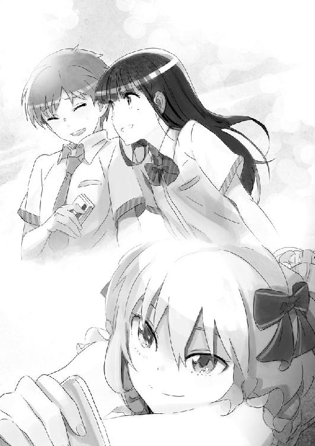
どんな人間だって、邪な心が芽生えることがある。ただ、人の悪意や裏が本当に見えてしまうのなら、これ以上の苦痛はないだろう。
信じる人でも、好きな人でも、自分に対する敵意や嫌悪が、いつでもちらついて見えてしまうのだから。
世界に敗れた父さんは、この世を去ってしまった。
理解はきっと、人間をやめたんだ。
『君は、その透けて見える悪意が気になって仕方がないんだ。だから誰に対してでも嫌われるように振る舞って、最初から自分を悪者にして、絶対に裏切られないように、心の中で何を思われても平気なようにして、痛みを紛らわせてる。君こそ本当は、人が怖くて仕方がないんだ』
『............』
『これが僕の推理だけど、どう、当たってる？』
『......あはは、大ハズレだよ、れーくん。全然違うよ。この俺様に怖いもんなんてねえよ』
『やっぱりね。僕もきっと、そう言うと思ったよ』
あとがき
真実ってなんだろう。
本作『月見月理解の探偵殺人』を書こうと思ったきっかけのひとつは、おそらくふと生まれた、そんな考えじゃないかと予想されます。真実は『本当のこと』で間違いないとは思いますが、実際のところどうなんでしょう。本当のことって、誰か分かるんでしょうか？
少し昔の話になります。私がまだ埼玉の大学に通っていた頃、同じゼミのメンバーにバンドが趣味の学生がいました。別に私と彼は親しい間柄でも何でもなく、あくまで『同じゼミのメンバー』以上の関係ではなかったのですが、それでも深く印象に残っていることがあります。彼は極度の偏食家で、野菜嫌いだったのです。
私は生まれてから現在に至るまで、野菜を食べなさい、と色んな人に言われてきましたし、私自身も、『野菜を食べなければ死ぬな』という考えが完全に染みついています。まあ要するに、野菜の摂取が生きることに必要不可欠というのは、私の『真実』でした。これは今も変わっていません。
しかしその同じゼミの彼は、異常な男でした。トンカツについているキャベツは当然として、シューマイのグリーンピース、ラーメンのもやし、アスパラガスの肉巻きの中身など、食事の際にありとあらゆる野菜を排除していました。カップ焼きそばのかやくとしてついてきた野菜の断片すら執拗に取り除くその姿に、私はもはや、『彼は野菜を食ったら死ぬのではないか？』という非現実的な妄想すら抱きました。さりげなく機会をうかがって「アレルギーなの？」と聞くと、「嫌いなだけ」という答えが朗らかな苦笑と共に返ってきました。
そこで更に詳しく聞くと、なんと彼は物心ついたときからあらゆる野菜を避け続けて生きているようで、それでも今まで重病にかかったこともなければ、そのせいで体調が長期間悪くなったこともない、というのです。言われてみると、彼は非常に社交的でバイタリティのある男で、当時卒業研究の傍ら、深夜まで執筆活動をして衰弱しきっていた私より遙かに健康な肉体と精神をしていましたし、別に肌荒れもしていなければ、歯茎の色も普通でした。
そんな訳で私は、不自然だな、と思っていたのですが、大学四年生ともなる彼が今更『野菜嫌い』なんてポーズを取っているとは思えませんし、むしろ本気で野菜を嫌がっているように見えました。まあ、生きるために必要不可欠な野菜を絶対に食べないというのは、ある意味、反抗な生き様ではないかと解釈もしましたが、残念ながら彼がバンドでやっていたのはジャズでした。もう訳が分かりません。
とまあ、ここまで考えて私は発想を変えました。もしかして、人は野菜を食べなくても何ともないんじゃないか、と。両親や教師たち、他の人や情報媒体から聞いた話は、全部ただの風評に過ぎなかったのではないか、と。
しかし、我が身を振り返ってみると、野菜を摂らない日々が続いたときは、体調が悪くなっていたような気もします。あるいは野菜を摂らずとも治る体調不良に陥っていただけで、そのときに無理矢理野菜を食わされたせいで錯覚していたのでしょうか？ そう考えると、なんだか自信がなくなってきますが、やはり野菜を食べないと不健康になるんだ、と思いました。
となると、今度は彼が噓をついている可能性です。ですが、彼は野菜嫌いを演出してなんのメリットがあるんでしょうか？ 可愛い女の子の気を引いて、「もう、野菜もちゃんと食べなきゃダメだよ～。わたしがお弁当作ってあげよっか？」とか言われるのを期待していたんでしょうか。しかし当時のゼミ生たちは私を含め、可愛い女の子どころか可愛い男の子すらいない、むさ苦しい有様だったので、それはなさそうです。
結局のところ、彼によって生み出された私の野菜に関する疑惑は、今の今まで晴れることがありません。私も昔は野菜嫌いでしたが、最近は年を取るごとにむしろ野菜が好きになってきているので、今更本当にどうでもいい問題ではありますが、そんなことですら、私は『真実』を知らなかったりするのです。
この『月見月理解の探偵殺人』は、そういった猜疑心が主軸になっている物語です。真実を知ることができない故に考え、一応の答えを出し、それを押し通すために戦う、とか。
ちなみに、本作に登場する『探偵殺人ゲーム』ですが、そのモチーフになったゲームが、実際に存在しています。一度でもそのネットゲームをプレイした方なら一発で気づくと思われますが、知る人ぞ知る『あれ』です。
心当たりのない方は、それらしい単語で調べるとすぐ辿り着けると思われるので、興味が沸きましたら是非プレイしてみてください。なお、その際はサーバーごとのルールを熟読し、理解のような暴言は絶対に慎んでください。追放されます。慣れればとても楽しいゲームです。
最後に、未熟な私に第１回ＧＡ文庫奨励賞を受賞させてくださったＧＡ文庫編集部様。このようなよく分からない話を推して、改稿に付き合ってくださった佐藤様。多忙なお仕事の中、素敵なイラストを描いてくださったmebae様。
そして本書を取っていただいた全ての皆様に、この狭いスペースでは伝えきれないほどの感謝を捧げたいと思います。
まあスペース狭くしたのは私なんですけどね。
またどこかでお会いできれば幸いです。
二〇〇九年十月某日 明月千里
著者
明月千里（あかつき せんり）
茨城県在住。好きな季節は冬。理由は寝ることが何よりの楽しみであり、寒い日の二度寝は五割増しの気持ちよさであるから。しかしさる事情により朝七時には布団から出なくてはならないので、やっぱり冬は嫌い。
第1回ＧＡ文庫大賞後期、奨励賞でデビュー。
イラスト
mebae（メバエ）
北海道在住。
『AURA ～魔竜院光牙最後の闘い～』
『アップルジャック』
『GENEZ』『シュガーダーク』
などライトノベルの挿絵を担当。
イラスト、漫画、ときどきアニメ。
ファンレター、作品の感想をお待ちしています
＜アンケートページはこちら＞
https://emob.jp/m/fi.php?a=gabunko&d=6&i=3281
（このページのスクリーンショットを撮って、ＱＲコードリーダーアプリで読み取ればアンケートページにアクセスできます）
〈あて先〉
〒１０６－００３２
東京都港区六本木２－４－５
ソフトバンク クリエイティブ（株）
ＧＡ文庫編集部 気付
「明月千里先生」係
「mebae先生」係
http://ga.sbcr.jp/
ＧＡ文庫
月見月理解の探偵殺人
明月千里
発行人 新田光敏
発行所 ソフトバンク クリエイティブ株式会社
〒１０６－００３２
東京都港区六本木２－４－５
装 丁 株式会社ケイズ（大橋勉／彦坂暢章）
印刷・製本 中央精版印刷株式会社
２０１０年１２月１０日 初版第２刷発行
２０１２年１月１日 電子第１版発行
 Senri Akatsuki ISBN 978-4-7973-5671-7
Senri Akatsuki ISBN 978-4-7973-5671-7